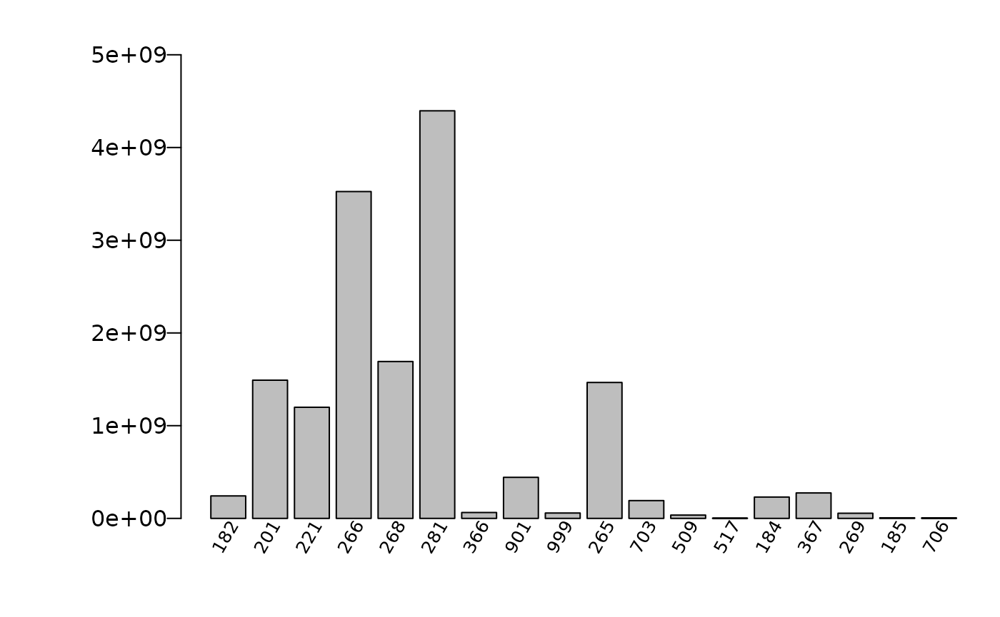

FIESTA - Green-book Estimators
FIESTA_tutorial_GB.RmdGreen-Book (GB) module overview
FIESTA‘s Green-Book (GB) module calculates population
estimates and their sampling errors based on Bechtold and Patterson’s
(2005), ’Green-Book’ for FIA’s nationally-consistent, systematic annual
sample design, chapter 4 (Scott et al. 2005). FIA’s sample design is
based on 2 phases: the first phase uses remotely-sensed data to stratify
the land area to increase precision of estimates; while the 2nd phase
obtains photo and ground observations and measurements for a suite of
information across a hexagonal grid, each approximately 6000 acres in
size. The associated estimators and variance estimators are used for
area and tree attribute totals with the assumption of a simple random,
stratified design and double sampling for stratification. Adjustment
factors are calculated by estimation unit and strata to account for
nonsampled (nonresponse) conditions.
Functions include non-ratio estimators for area and tree estimates by
domain and ratio-of-means estimators for per-acre and per-tree estimates
within domain. In addition, FIESTA adjusts for nonsampled
conditions, supports post-stratification for reducing variance, and
reports by estimation unit or a summed combination of estimation units.
Output from the Green-Book module was tested and compared to output from
FIA’s publicly-available online tool (EVALIDator) for
state-level population estimates and associated sampling errors
generated from the FIA Database (FIADB).
Objective of tutorial
The Green-Book estimators can be used with FIA’s standard state-level population data (i.e, Evaluation) from the FIA database (FIADB) and also population data from a custom boundary. The population data includes a set of FIA plot data and summarized auxiliary information for post-stratification, including a table of area by estimation unit within the population, and a table of strata proportions by estimation unit. This tutorial steps through several examples using FIESTA’s Green Book module, for three different populations: (POP1) an FIA standard Evaluation, Wyoming 561301; (POP2) a custom boundary with one population, Bighorn National Forest; and (POP3) a custom boundary with sub-populations, Bighorn National Forest Districts. All examples can be used with any population, standard or custom.
GB Examples
GB Example Data
View GB Example Data
Example FIA plot data from FIADB
The examples use FIA plot data from FIA Evaluation 561301, including
three inventory years of field measurements in the state of Wyoming,
from FIADB_1.7.2.00, last updated June 20, 2018, downloaded on June 25,
2018, and stored as internal data objects in FIESTA.
Wyoming (WY), Inventory Years 2011-2013 (Evaluation 561301)
| Data Frame | Description |
|---|---|
| WYplt | WY plot-level data |
| WYcond | WY condition-level data |
| WYtree | WY tree-level data |
Example Auxiliary data
Auxiliary data for state-level estimates, including plot-level
estimation unit and stratum assignments; area by estimation unit; and
pixel counts by strata class and estimation unit, were downloaded from
FIADB at the same time, from the same FIA Evaluation (i.e., 561301), and
stored as internal data objects in FIESTA. Estimates using
auxiliary data from FIADB can be compared with EVALIDator estimates,
using the 2013 evaluation (https://apps.fs.usda.gov/fiadb-api/evalidator).
Auxiliary data for the custom boundaries are summarized from spatial layers stored as external objects in FIESTA, originating from the USDA Forest Service, Automated Lands Program (ALP; 2018) and from a 250m resolution, Moderate Resolution Imaging Spectroradiometer (MODIS), classified map, reclassified from 3 to 2 classes: 1:forest; 2:nonforest (Ruefenacht et al. 2008)
Wyoming (WY), Auxiliary data from FIADB (Evaluation 561301)
| Data Frame | Description |
|---|---|
| WYpltassgn | WY plot-level data with strata and estimation unit assignments |
| WYunitarea | WY estimation unit look-up table with total acres by estimation unit (ESTUNIT) |
| WYstratalut | WY strata look-up table with pixel counts (P1POINTCNT) by strata and estimation unit |
Wyoming (WY), Auxiliary data from other sources
| External data | Description |
|---|---|
| WYbighorn_adminbnd.shp | Polygon shapefile of WY Bighorn National Forest Administrative boundary1 |
| WYbighorn_districtbnd.shp | Polygon shapefile of WY Bighorn National Forest District boundaries2 |
| WYbighorn_forest_nonforest_250m.tif | GeoTIFF raster of predicted forest/nonforest (1/0)3 |
1USDA Forest Service, Automated Lands Program (ALP). 2018. S_USA.AdministrativeForest (http://data.fs.usda.gov/geodata/edw). Description: An area encompassing all the National Forest System lands administered by an administrative unit. The area encompasses private lands, other governmental agency lands, and may contain National Forest System lands within the proclaimed boundaries of another administrative unit. All National Forest System lands fall within one and only one Administrative Forest Area.
2USDA Forest Service, Automated Lands Program (ALP). 2018. S_USA.RangerDistrict (http://data.fs.usda.gov/geodata/edw). Description: A depiction of the boundary that encompareasses a Ranger District.
3Based on 250m resolution, Moderate Resolution Imaging Spectroradiometer (MODIS), classified map, reclassified from 3 to 2 classes: 1:forest; 2:nonforest. Projected in Albers Conical Equal Area, Datum NAD27 (Ruefenacht et al. 2008).
Set up
First, you’ll need to load the FIESTA library:
library(FIESTA)Next, you’ll need to set up an “outfolder”. This is just a file path
to a folder where you’d like FIESTA to send your data
output. For this vignette, we have saved our outfolder file path as the
outfolder object in a temporary directory. We also set a
few default options preferred for this vignette.
outfolder <- tempdir()Get auxiliary data for custom examples
Now, we need to get the auxiliary data for the custom boundaries. The FIESTA spGetStrata function is a spatial wrapper function to facilitate extraction and summary of user-defined spatial data used for post-stratification. The function uses the FIESTA spExtractPoly and spExtractRast functions to subset (i.e., clip) plots to the boundary and extract values from estimation unit (i.e., polygon) and strata values (i.e., raster) to plot center locations, respectively. Other internal spatial functions calculate stratum pixel counts and area by estimation unit. If a polygon strata layer is given, the FIESTA spPoly2Rast function converts the polygon layer to raster before calculating strata weights.
Our custom examples demonstrate how to get data for one area of interest, or population (e.g, Bighorn National Forest) and for one area of interest, with multiple estimation units, or subpopulations (e.g., Bighorn National Forest Districts).
Bighorn National Forest
View Getting Strata Data
# File names for spatial layers, stored as external data objects in FIESTA.
WYbhfn <- system.file("extdata", "sp_data/WYbighorn_adminbnd.shp", package="FIESTA")
fornffn <- system.file("extdata", "sp_data/WYbighorn_forest_nonforest_250m.tif", package="FIESTA")
# Get estimation unit and strata information for Bighorn National Forest.
stratdat.bh <- spGetStrata(
xyplt = WYplt,
uniqueid = "CN",
unit_layer = WYbhfn,
strat_layer = fornffn,
spMakeSpatial_opts = list(xvar = "LON_PUBLIC",
yvar = "LAT_PUBLIC",
xy.crs = 4269)
)output
## ================================================================================
## Get names of output list components
names(stratdat.bh)output
## [1] "bnd" "pltassgn" "pltassgnid" "unitarea" "unitvar"
## [6] "areavar" "areaunits" "stratalut" "strvar" "getwt"
## [11] "strwtvar"
## Plot assignment of strata and estimation unit (ONEUNIT, STRATUMCD)
head(stratdat.bh$pltassgn)output
## CN INVYR STATECD CYCLE UNITCD COUNTYCD PLOT MEASYEAR RDDISTCD
## 1 40404876010690 2012 56 3 2 3 83143 2012 6
## 2 40404879010690 2011 56 3 2 3 80153 2011 6
## 3 40404886010690 2012 56 3 2 3 86397 2012 NA
## 4 40404893010690 2011 56 3 2 3 85901 2011 4
## 5 40404894010690 2013 56 3 2 3 90221 2013 6
## 6 40404899010690 2013 56 3 2 3 85144 2013 NA
## NF_SAMPLING_STATUS_CD PLOT_STATUS_CD NF_PLOT_STATUS_CD NBRCND NBRCNDSAMP
## 1 0 1 NA 2 2
## 2 0 1 NA 1 1
## 3 0 2 NA 1 1
## 4 0 1 NA 1 1
## 5 0 1 NA 1 1
## 6 0 2 NA 1 1
## NBRCNDFOR CCLIVEPLT FORNONSAMP PLOT_ID ONEUNIT STRATUMCD
## 1 2 67.5 Sampled-Forest ID560200383143 1 1
## 2 1 66.0 Sampled-Forest ID560200380153 1 1
## 3 0 0.0 Sampled-Nonforest ID560200386397 1 2
## 4 1 48.0 Sampled-Forest ID560200385901 1 2
## 5 1 2.0 Sampled-Forest ID560200390221 1 2
## 6 0 8.0 Sampled-Nonforest ID560200385144 1 2
## Area by estimation unit
stratdat.bh$unitareaoutput
## ONEUNIT ACRES_GIS
## 1 1 1112384
## Pixel counts and strata weights (strwt) by strata and estimation unit
stratdat.bh$stratalutoutput
## ONEUNIT STRATUMCD count strwt
## 1 1 1 52280 0.7259397
## 2 1 2 19737 0.2740603
## Variable names
stratdat.bh$unitvar # Estimation unit variableoutput
## [1] "ONEUNIT"
stratdat.bh$strvar # Strata variableoutput
## [1] "STRATUMCD"
stratdat.bh$areavar # Area variableoutput
## [1] "ACRES_GIS"Bighorn National Forest Districts
View Getting Strata Data (Districts)
# File names for external spatial data
WYbhdistfn <- system.file("extdata", "sp_data/WYbighorn_districtbnd.shp", package="FIESTA")
WYbhdist.att <- "DISTRICTNA"
fornffn <- system.file("extdata", "sp_data/WYbighorn_forest_nonforest_250m.tif", package="FIESTA")
# Get estimation unit and strata information for Bighorn National Forest Districts
stratdat.bhdist <- spGetStrata(
xyplt = WYplt,
uniqueid = "CN",
unit_layer=WYbhdistfn,
unitvar=WYbhdist.att,
strat_layer=fornffn,
spMakeSpatial_opts = list(xvar = "LON_PUBLIC",
yvar = "LAT_PUBLIC",
xy.crs = 4269)
)output
## ================================================================================
## Get names of output list components
names(stratdat.bhdist)output
## [1] "bnd" "pltassgn" "pltassgnid" "unitarea" "unitvar"
## [6] "areavar" "areaunits" "stratalut" "strvar" "getwt"
## [11] "strwtvar"
## Plot assignment of strata and estimation unit (DISTRICTNA, STRATUMCD)
head(stratdat.bhdist$pltassgn)output
## CN INVYR STATECD CYCLE UNITCD COUNTYCD PLOT MEASYEAR RDDISTCD
## 1 40404876010690 2012 56 3 2 3 83143 2012 6
## 2 40404879010690 2011 56 3 2 3 80153 2011 6
## 3 40404886010690 2012 56 3 2 3 86397 2012 NA
## 4 40404893010690 2011 56 3 2 3 85901 2011 4
## 5 40404894010690 2013 56 3 2 3 90221 2013 6
## 6 40404899010690 2013 56 3 2 3 85144 2013 NA
## NF_SAMPLING_STATUS_CD PLOT_STATUS_CD NF_PLOT_STATUS_CD NBRCND NBRCNDSAMP
## 1 0 1 NA 2 2
## 2 0 1 NA 1 1
## 3 0 2 NA 1 1
## 4 0 1 NA 1 1
## 5 0 1 NA 1 1
## 6 0 2 NA 1 1
## NBRCNDFOR CCLIVEPLT FORNONSAMP PLOT_ID
## 1 2 67.5 Sampled-Forest ID560200383143
## 2 1 66.0 Sampled-Forest ID560200380153
## 3 0 0.0 Sampled-Nonforest ID560200386397
## 4 1 48.0 Sampled-Forest ID560200385901
## 5 1 2.0 Sampled-Forest ID560200390221
## 6 0 8.0 Sampled-Nonforest ID560200385144
## DISTRICTNA STRATUMCD
## 1 Medicine Wheel Ranger District 1
## 2 Medicine Wheel Ranger District 1
## 3 Medicine Wheel Ranger District 2
## 4 Medicine Wheel Ranger District 2
## 5 Medicine Wheel Ranger District 2
## 6 Medicine Wheel Ranger District 2
## Area by estimation units (Districts)
stratdat.bhdist$unitareaoutput
## DISTRICTNA ACRES_GIS
## 1 Medicine Wheel Ranger District 364517.3
## 2 Powder River Ranger District 334328.0
## 3 Tongue Ranger District 413768.5
## Pixel counts and strata weights (strwt) by strata and estimation unit
stratdat.bhdist$stratalutoutput
## DISTRICTNA STRATUMCD count strwt
## 1 Medicine Wheel Ranger District 1 14471 0.6127625
## 2 Medicine Wheel Ranger District 2 9145 0.3872375
## 3 Powder River Ranger District 1 15247 0.7044121
## 4 Powder River Ranger District 2 6398 0.2955879
## 5 Tongue Ranger District 1 22583 0.8436251
## 6 Tongue Ranger District 2 4186 0.1563749
## Variable names
stratdat.bhdist$unitvar # Estimation unit variableoutput
## [1] "DISTRICTNA"
stratdat.bhdist$strvar # Strata variableoutput
## [1] "STRATUMCD"
stratdat.bhdist$areavar # Area variableoutput
## [1] "ACRES_GIS"modGBpop()
FIESTA’s population functions (mod*pop)
check input data and perform population-level calculations, such as:
summing number of sampled plots; adjusting for partial nonresponse; and
standardizing auxiliary data. These functions are specific to each
FIESTA module and are run prior to or within a module for
any population of interest.
For FIESTA’s GB Module, the modGBpop
function calculates and outputs: number of plots, adjustment factors,
and an expansion factor by strata. The outputs are similar to data found
in FIADB’s pop_stratum table. The output from modGBpop can
be used for one or more estimates from modGBarea,
modGBtree, or modGBratio functions.
POP1: FIADB POPULATION - Get population data for area and tree estimates for Wyoming, using post-stratification
View Example
In this example, we use the sample Wyoming data (2013 Evaluation)
stored in FIESTA to generate population data for the GB
module. We check this output with the FIADB pop_stratum table from FIA
DataMart for 561301 Evalid, using the FIESTA::DBqryCSV
function.
GBpopdat <- modGBpop(
popTabs = list(cond = FIESTA::WYcond, # FIA plot/condition data
tree = FIESTA::WYtree, # FIA tree data
seed = FIESTA::WYseed), # FIA seedling data
popTabIDs = list(cond = "PLT_CN"), # unique ID of plot in cond
pltassgn = FIESTA::WYpltassgn, # plot assignments
pltassgnid = "CN", # unique ID of plot in pltassgn
pjoinid = "PLT_CN", # plot id to join to pltassgn
unitarea = WYunitarea, # area by estimation units
unitvar = "ESTN_UNIT", # name of estimation unit
strata = TRUE, # if using post-stratification
stratalut = WYstratalut, # strata classes and pixels counts
strata_opts = strata_options(getwt = TRUE) # strata options
)To get the names of the list components associated with the output of
our call of modGBpop, we run the following code:
names(GBpopdat)output
## [1] "module" "popType" "condx" "pltcondx" "cuniqueid"
## [6] "condid" "ACI.filter" "unitarea" "areavar" "areaunits"
## [11] "unitvar" "unitvars" "strata" "stratalut" "strvar"
## [16] "strwtvar" "expcondtab" "plotsampcnt" "condsampcnt" "states"
## [21] "invyrs" "estvar.area" "adj" "P2POINTCNT" "treex"
## [26] "tuniqueid" "adjtree" "seedx"From this list outputted by GBpopdat we can access many
things. Some examples include the number of plots by plot status that
can be accessed with the plotsampcnt item, the number of
conditions by condition status with condsampcnt, the
strata-level population data, including number of plots and adjustment
factors with stratalut, and the adjustment factors added to
the condition-level, tree-level, and seedling data with
condx, treex, and seedx,
respectfully. These objects can be seen below:
## Look at output from GBpopdat
GBpopdat$plotsampcnt # Number of plots by plot statusoutput
## PLOT_STATUS_NM
## 1 Sampled - at least one accessible forest land condition present on plot
## 2 Sampled - no accessible forest land condition present on plot
## PLOT_STATUS_CD NBRPLOT
## 1 1 556
## 2 2 2491
GBpopdat$condsampcnt # Number of conditions by condition statusoutput
## COND_STATUS_NM COND_STATUS_CD NBRCOND
## 1 Forest land 1 590
## 2 Nonforest land 2 2590
## 3 Noncensus water 3 10
## 4 Census water 4 20
## 5 Nonsampled 5 14
# Strata-level population data, including number of plots and adjustment factors
GBpopdat$stratalut output
## ESTN_UNIT STRATUMCD P1POINTCNT P2POINTCNT n.total n.strata strwt
## 1: 1 1 30603 17 133 17 0.17138393
## 2: 1 2 147961 116 133 116 0.82861607
## 3: 3 1 15896 12 98 12 0.12145384
## 4: 3 2 114985 86 98 86 0.87854616
## 5: 5 2 198981 152 152 152 1.00000000
## 6: 7 1 50473 35 245 35 0.15293736
## 7: 7 2 279551 210 245 210 0.84706264
## 8: 9 1 13946 16 133 16 0.07891401
## 9: 9 2 162778 117 133 117 0.92108599
## 10: 11 1 34965 28 85 28 0.29395692
## 11: 11 2 83981 57 85 57 0.70604308
## 12: 13 1 60592 48 290 48 0.15780564
## 13: 13 2 323374 242 290 242 0.84219436
## 14: 15 2 92483 70 70 70 1.00000000
## 15: 17 2 83149 58 58 58 1.00000000
## 16: 19 1 24652 18 128 18 0.14250699
## 17: 19 2 148336 110 128 110 0.85749301
## 18: 21 2 111389 86 86 86 1.00000000
## 19: 23 1 49359 35 132 35 0.29129978
## 20: 23 2 120085 97 132 97 0.70870022
## 21: 25 2 222755 175 175 175 1.00000000
## 22: 27 2 108902 79 79 79 1.00000000
## 23: 29 1 140049 100 216 100 0.48499131
## 24: 29 2 148717 116 216 116 0.51500869
## 25: 31 2 87474 64 64 64 1.00000000
## 26: 33 1 24037 18 82 18 0.22951399
## 27: 33 2 80693 64 82 64 0.77048601
## 28: 35 1 55527 44 158 44 0.27151107
## 29: 35 2 148984 114 158 114 0.72848893
## 30: 37 2 434729 339 339 339 1.00000000
## 31: 39 1 128994 98 125 98 0.73730659
## 32: 39 2 45959 27 125 27 0.26269341
## 33: 41 2 86508 63 63 63 1.00000000
## 34: 43 2 92938 63 63 63 1.00000000
## 35: 45 2 99461 73 73 73 1.00000000
## ESTN_UNIT STRATUMCD P1POINTCNT P2POINTCNT n.total n.strata strwt
## ACRES expfac EXPNS ADJ_FACTOR_COND ADJ_FACTOR_SUBP ADJ_FACTOR_MACR
## 1: 2757613 162212.53 27800.62 1.014925 1.014925 0
## 2: 2757613 23772.53 19698.30 1.000000 1.000000 0
## 3: 2021729 168477.42 20462.23 1.000000 1.000000 0
## 4: 2021729 23508.48 20653.28 1.008798 1.008798 0
## 5: 3072988 20217.03 20217.03 1.000000 1.000000 0
## 6: 5096959 145627.40 22271.87 1.000000 1.000000 0
## 7: 5096959 24271.23 20559.25 1.000000 1.000000 0
## 8: 2729653 170603.31 13462.99 1.015873 1.015873 0
## 9: 2729653 23330.37 21489.27 1.000000 1.000000 0
## 10: 1837124 65611.57 19286.98 1.000000 1.000000 0
## 11: 1837124 32230.25 22755.94 1.000000 1.000000 0
## 12: 5930088 123543.50 19495.86 1.005236 1.005236 0
## 13: 5930088 24504.50 20637.55 1.000000 1.000000 0
## 14: 1428579 20408.27 20408.27 1.000000 1.000000 0
## 15: 1283969 22137.40 22137.40 1.000000 1.000000 0
## 16: 2671802 148433.44 21152.80 1.014085 1.014085 0
## 17: 2671802 24289.11 20827.74 1.000000 1.000000 0
## 18: 1720074 20000.86 20000.86 1.000000 1.000000 0
## 19: 2616954 74770.11 21780.52 1.007194 1.007194 0
## 20: 2616954 26978.91 19119.96 1.000000 1.000000 0
## 21: 3440445 19659.69 19659.69 1.000000 1.000000 0
## 22: 1681849 21289.23 21289.23 1.000000 1.000000 0
## 23: 4459826 44598.26 21629.77 1.007557 1.007557 0
## 24: 4459826 38446.78 19800.42 1.002160 1.002160 0
## 25: 1350969 21108.89 21108.89 1.000000 1.000000 0
## 26: 1617318 89851.00 20622.06 1.014085 1.014085 0
## 27: 1617318 25270.59 19470.64 1.000000 1.000000 0
## 28: 3158807 71791.07 19492.07 1.000000 1.000000 0
## 29: 3158807 27708.83 20185.58 1.000000 1.000000 0
## 30: 6714319 19806.25 19806.25 1.000000 1.000000 0
## 31: 2701941 27570.83 20328.15 1.007712 1.007712 0
## 32: 2701941 100071.89 26288.23 1.000000 1.000000 0
## 33: 1336034 21206.89 21206.89 1.000000 1.000000 0
## 34: 1435352 22783.37 22783.37 1.000000 1.000000 0
## 35: 1536038 21041.62 21041.62 1.006897 1.006897 0
## ACRES expfac EXPNS ADJ_FACTOR_COND ADJ_FACTOR_SUBP ADJ_FACTOR_MACR
## ADJ_FACTOR_MICR
## 1: 1.014925
## 2: 1.000000
## 3: 1.000000
## 4: 1.008798
## 5: 1.000000
## 6: 1.000000
## 7: 1.000000
## 8: 1.015873
## 9: 1.000000
## 10: 1.000000
## 11: 1.000000
## 12: 1.005236
## 13: 1.000000
## 14: 1.000000
## 15: 1.000000
## 16: 1.014085
## 17: 1.000000
## 18: 1.000000
## 19: 1.007194
## 20: 1.000000
## 21: 1.000000
## 22: 1.000000
## 23: 1.007557
## 24: 1.002160
## 25: 1.000000
## 26: 1.014085
## 27: 1.000000
## 28: 1.000000
## 29: 1.000000
## 30: 1.000000
## 31: 1.007712
## 32: 1.000000
## 33: 1.000000
## 34: 1.000000
## 35: 1.006897
## ADJ_FACTOR_MICR
## Adjustment factors added to condition-level data
GBpopdat$condxoutput
## PLT_CN CONDID CONDPROP_UNADJ SUBPPROP_UNADJ MICRPROP_UNADJ
## 1: 40404728010690 1 1 1 1
## 2: 40404729010690 1 1 1 1
## 3: 40404730010690 1 1 1 1
## 4: 40404731010690 1 1 1 1
## 5: 40404733010690 1 1 1 1
## ---
## 3206: 40407866010690 1 1 1 1
## 3207: 40407867010690 1 1 1 1
## 3208: 40407868010690 1 1 1 1
## 3209: 40407869010690 1 1 1 1
## 3210: 46792188020004 1 1 1 1
## MACRPROP_UNADJ ESTN_UNIT STRATUMCD ADJ_FACTOR_COND ADJ_FACTOR_SUBP
## 1: NA 1 2 1.000000 1.000000
## 2: NA 1 2 1.000000 1.000000
## 3: NA 1 1 1.014925 1.014925
## 4: NA 1 2 1.000000 1.000000
## 5: NA 1 2 1.000000 1.000000
## ---
## 3206: NA 45 2 1.006897 1.006897
## 3207: NA 45 2 1.006897 1.006897
## 3208: NA 45 2 1.006897 1.006897
## 3209: NA 45 2 1.006897 1.006897
## 3210: NA 29 1 1.007557 1.007557
## ADJ_FACTOR_MACR ADJ_FACTOR_MICR CONDPROP_ADJ
## 1: 0 1.000000 1.000000
## 2: 0 1.000000 1.000000
## 3: 0 1.014925 1.014925
## 4: 0 1.000000 1.000000
## 5: 0 1.000000 1.000000
## ---
## 3206: 0 1.006897 1.006897
## 3207: 0 1.006897 1.006897
## 3208: 0 1.006897 1.006897
## 3209: 0 1.006897 1.006897
## 3210: 0 1.007557 1.007557
## Adjustment factors added to tree data
GBpopdat$treexoutput
## PLT_CN CONDID SUBP TREE STATUSCD SPCD SPGRPCD DIA HT TREECLCD
## 1: 40404729010690 1 1 2 1 66 23 10.8 14 3
## 2: 40404729010690 1 4 3 1 66 23 11.6 19 3
## 3: 40404729010690 1 1 1 2 113 24 7.7 18 3
## 4: 40404729010690 1 1 3 2 113 24 5.2 23 3
## 5: 40404729010690 1 1 4 1 113 24 5.2 18 2
## ---
## 18376: 46792188020004 1 4 13 1 202 10 7.0 26 2
## 18377: 46792188020004 1 4 14 2 202 10 11.4 53 3
## 18378: 46792188020004 1 4 15 2 202 10 10.6 46 3
## 18379: 46792188020004 1 4 16 2 202 10 6.3 41 3
## 18380: 46792188020004 1 4 17 1 202 10 1.9 8 3
## AGENTCD STANDING_DEAD_CD VOLCFNET VOLCFGRS VOLBFNET TPA_UNADJ
## 1: NA NA 3.411463 3.411463 NA 6.018046
## 2: NA NA 5.623683 5.797611 NA 6.018046
## 3: 10 1 1.067166 1.940302 NA 6.018046
## 4: 10 1 0.381894 0.694352 NA 6.018046
## 5: NA NA 0.316063 0.316063 NA 6.018046
## ---
## 18376: NA NA 2.125580 2.125580 NA 6.018046
## 18377: NA 1 15.149782 15.149782 NA 6.018046
## 18378: NA 1 11.160959 11.160959 NA 6.018046
## 18379: NA 1 2.945213 2.945213 NA 6.018046
## 18380: NA NA NA NA NA 74.965282
## DRYBIO_AG CARBON_AG BA TPROP_BASIS tadjfac
## 1: 94.516629 47.258315 0.63615456 SUBP 1.000000
## 2: 155.807512 77.903756 0.73389024 SUBP 1.000000
## 3: 30.761698 15.380849 0.32336766 SUBP 1.000000
## 4: 11.305782 5.652891 0.14747616 SUBP 1.000000
## 5: 11.210763 5.605382 0.14747616 SUBP 1.000000
## ---
## 18376: 88.388202 44.194101 0.26724600 SUBP 1.007557
## 18377: 305.250275 152.625138 0.70880184 SUBP 1.007557
## 18378: 225.732139 112.866070 0.61281144 SUBP 1.007557
## 18379: 61.586094 30.793047 0.21646926 SUBP 1.007557
## 18380: 5.065642 2.532821 0.01968894 MICR 1.007557
## Adjustment factors added to seedling data
GBpopdat$seedxoutput
## PLT_CN SUBP CONDID SPCD SPGRPCD TPA_UNADJ TREECOUNT
## 1: 40404729010690 2 1 113 24 74.96528 1
## 2: 40404730010690 2 1 202 10 224.89585 3
## 3: 40404738010690 2 1 746 44 2323.92376 31
## 4: 40404738010690 4 1 19 12 74.96528 1
## 5: 40404738010690 4 1 113 24 74.96528 1
## ---
## 1603: 40407815010690 1 1 313 47 224.89585 3
## 1604: 40407831010690 1 1 122 11 4497.91695 60
## 1605: 46792188020004 2 1 202 10 374.82641 5
## 1606: 46792188020004 3 1 202 10 299.86113 4
## 1607: 46792188020004 4 1 202 10 224.89585 3
## TREECOUNT_CALC SEEDCNT6 SEEDSUBP6 tadjfac
## 1: 1 1 0 1.000000
## 2: 3 3 0 1.014925
## 3: 31 6 1 1.014925
## 4: 1 1 0 1.014925
## 5: 1 1 0 1.014925
## ---
## 1603: 3 3 0 1.006897
## 1604: 60 6 1 1.006897
## 1605: 5 5 0 1.007557
## 1606: 4 4 0 1.007557
## 1607: 3 3 0 1.007557One may also want to compare FIESTA output with FIADB
pop_stratum table for WY in the 2013 evaluation to check for
consistency. The can be done as follows:
qry <- "select estn_unit, stratumcd, p1pointcnt, p2pointcnt, expns,
adj_factor_macr, adj_factor_subp, adj_factor_micr from pop_stratum
where evalid = 561301 order by estn_unit, stratumcd"
pop_stratum <- tryCatch(
DBqryCSV(
qry,
states="Wyoming",
sqltables="pop_stratum"
),
error=function(e) {
return(NULL) })
if (!is.null(pop_stratum)) {
head(pop_stratum)
}
head(GBpopdat$stratalut)POP2: CUSTOM POPULATION - Get population data for area and tree estimates for the Bighorn National Forest, using post-stratification
View Example
In this example, we use the sample WY plot data (2013 Evaluation) in
FIESTA and output from spGetStrata to generate population
data for the Bighorn National Forest. Here, we have only one estimation
unit within the population of interest (i.e., Bighorn National Forest),
therefore strata and pixel counts are summarized to the population.
If the FIESTA::spGetStrata function is used to obtain
stratification data, the output list object can be input directly into
modGBpop through the GBstratdat parameter. If
other methods are used, the data are input through individual
parameters.
## Bighorn National Forest
## Using output list from spGetStrata()
GBpopdat.bh <- modGBpop(
popTabs=list(plt=WYplt, cond=WYcond, tree=WYtree, seed=WYseed),
stratdat=stratdat.bh)
## Get names of output list components
names(GBpopdat.bh)output
## [1] "module" "popType" "condx" "pltcondx" "cuniqueid"
## [6] "condid" "ACI.filter" "unitarea" "areavar" "areaunits"
## [11] "unitvar" "unitvars" "strata" "stratalut" "strvar"
## [16] "strwtvar" "expcondtab" "plotsampcnt" "condsampcnt" "states"
## [21] "invyrs" "estvar.area" "adj" "P2POINTCNT" "treex"
## [26] "tuniqueid" "adjtree" "seedx"
## Using output as individual parameter inputs
GBpopdat.bh <- modGBpop(
popTabs=list(plt=WYplt, cond=WYcond, tree=WYtree, seed=WYseed),
popTabIDs=list(plt="CN"),
pltassgn=stratdat.bh$pltassgn,
pltassgnid="CN",
unitvar=stratdat.bh$unitvar,
unitarea=stratdat.bh$unitarea,
areavar=stratdat.bh$areavar,
strata=TRUE,
stratalut=stratdat.bh$stratalut,
strvar=stratdat.bh$strvar
)
## Get names of output list components
names(GBpopdat.bh)output
## [1] "module" "popType" "condx" "pltcondx" "cuniqueid"
## [6] "condid" "ACI.filter" "unitarea" "areavar" "areaunits"
## [11] "unitvar" "unitvars" "strata" "stratalut" "strvar"
## [16] "strwtvar" "expcondtab" "plotsampcnt" "condsampcnt" "states"
## [21] "invyrs" "estvar.area" "adj" "P2POINTCNT" "treex"
## [26] "tuniqueid" "adjtree" "seedx"
## Condition information with adjusted condition proportions for area
head(GBpopdat.bh$condx)output
## PLT_CN CONDID CONDPROP_UNADJ SUBPPROP_UNADJ MICRPROP_UNADJ
## 1: 40404876010690 1 0.75 0.75 0.75
## 2: 40404876010690 2 0.25 0.25 0.25
## 3: 40404879010690 1 1.00 1.00 1.00
## 4: 40404886010690 1 1.00 1.00 1.00
## 5: 40404893010690 1 1.00 1.00 1.00
## 6: 40404894010690 1 1.00 1.00 1.00
## MACRPROP_UNADJ ONEUNIT STRATUMCD ADJ_FACTOR_COND ADJ_FACTOR_SUBP
## 1: NA 1 1 1.006135 1.006135
## 2: NA 1 1 1.006135 1.006135
## 3: NA 1 1 1.006135 1.006135
## 4: NA 1 2 1.000000 1.000000
## 5: NA 1 2 1.000000 1.000000
## 6: NA 1 2 1.000000 1.000000
## ADJ_FACTOR_MACR ADJ_FACTOR_MICR CONDPROP_ADJ
## 1: 0 1.006135 0.7546012
## 2: 0 1.006135 0.2515337
## 3: 0 1.006135 1.0061350
## 4: 0 1.000000 1.0000000
## 5: 0 1.000000 1.0000000
## 6: 0 1.000000 1.0000000
## Tree information with tree-level adjustment factors
head(GBpopdat.bh$treex)output
## PLT_CN CONDID SUBP TREE STATUSCD SPCD SPGRPCD DIA HT TREECLCD
## 1: 40404876010690 1 1 9 1 19 12 12.1 64 2
## 2: 40404876010690 1 1 15 1 19 12 1.5 11 2
## 3: 40404876010690 1 2 18 2 19 12 12.0 57 3
## 4: 40404876010690 1 2 22 2 19 12 5.5 53 3
## 5: 40404876010690 1 2 26 1 19 12 1.8 12 2
## 6: 40404876010690 1 4 3 1 19 12 6.9 46 2
## AGENTCD STANDING_DEAD_CD VOLCFNET VOLCFGRS VOLBFNET TPA_UNADJ DRYBIO_AG
## 1: NA NA 20.908857 20.908857 104.7298 6.018046 581.902600
## 2: NA NA NA NA NA 74.965282 2.410252
## 3: 70 1 6.374361 18.212460 NA 6.018046 167.502609
## 4: NA 1 2.889440 2.889440 NA 6.018046 67.437885
## 5: NA NA NA NA NA 74.965282 3.925288
## 6: NA NA 4.250839 4.250839 NA 6.018046 122.432583
## CARBON_AG BA TPROP_BASIS tadjfac
## 1: 290.951300 0.79852014 SUBP 1.006135
## 2: 1.205126 0.01227150 MICR 1.006135
## 3: 83.751305 0.78537600 SUBP 1.006135
## 4: 33.718943 0.16498350 SUBP 1.006135
## 5: 1.962644 0.01767096 MICR 1.006135
## 6: 61.216292 0.25966494 SUBP 1.006135
## Seedling information with adjustment factors
head(GBpopdat.bh$seedx)output
## PLT_CN SUBP CONDID SPCD SPGRPCD TPA_UNADJ TREECOUNT TREECOUNT_CALC
## 1: 40404876010690 1 1 19 12 299.86113 4 4
## 2: 40404876010690 1 1 108 21 374.82641 5 5
## 3: 40404876010690 2 1 19 12 374.82641 5 5
## 4: 40404876010690 2 1 108 21 74.96528 1 1
## 5: 40404876010690 3 2 19 12 224.89585 3 3
## 6: 40404876010690 3 2 93 18 149.93057 2 2
## SEEDCNT6 SEEDSUBP6 tadjfac
## 1: 4 0 1.006135
## 2: 5 0 1.006135
## 3: 5 0 1.006135
## 4: 1 0 1.006135
## 5: 3 0 1.006135
## 6: 2 0 1.006135
## Strata-level information, including number of plots by strata and strata-level adjustment factors
GBpopdat.bh$stratalutoutput
## ONEUNIT STRATUMCD strwt P2POINTCNT n.total n.strata ACRES_GIS expfac
## 1: 1 1 0.7259397 41 56 41 1112384 27131.31
## 2: 1 2 0.2740603 15 56 15 1112384 74158.93
## EXPNS ADJ_FACTOR_COND ADJ_FACTOR_SUBP ADJ_FACTOR_MACR ADJ_FACTOR_MICR
## 1: 19695.70 1.006135 1.006135 0 1.006135
## 2: 20324.02 1.000000 1.000000 0 1.000000POP3: CUSTOM SUB-POPULATIONS - Get sub-population data for area and tree estimates for the Bighorn National Forest Districts, using post-stratification
View Example
In this example, we use the sample Wyoming plot data (2013
Evaluation) stored in FIESTA and output from spGetStrata to
generate sub-population data for Bighorn National Forest Districts.
Here, we have more than one estimation unit (i.e., sub-population)
within the population of interest (i.e., Bighorn National Forest
Districts), therefore strata and pixel counts are summarized by each
District within the population.
If the FIESTA::spGetStrata function is used to obtain
stratification data, the output list object can be input directly into
modGBpop through the GBstratdat parameter. If
other methods are used, the data are input through individual
parameters.
## Bighorn National Forest District
## Using output list from spGetStrata()
GBpopdat.bhdist <- modGBpop(
popTabs=list(plt=WYplt, cond=WYcond, tree=WYtree, seed=WYseed),
stratdat=stratdat.bhdist)
## Get names of output list components
names(GBpopdat.bhdist)output
## [1] "module" "popType" "condx" "pltcondx" "cuniqueid"
## [6] "condid" "ACI.filter" "unitarea" "areavar" "areaunits"
## [11] "unitvar" "unitvars" "strata" "stratalut" "strvar"
## [16] "strwtvar" "expcondtab" "plotsampcnt" "condsampcnt" "states"
## [21] "invyrs" "estvar.area" "adj" "P2POINTCNT" "treex"
## [26] "tuniqueid" "adjtree" "seedx"
GBpopdat.bhdist <- modGBpop(
popTabs=list(plt=WYplt, cond=WYcond, tree=WYtree, seed=WYseed),
pltassgn=stratdat.bhdist$pltassgn,
pltassgnid="CN",
unitvar=stratdat.bhdist$unitvar,
unitarea=stratdat.bhdist$unitarea,
areavar=stratdat.bhdist$areavar,
strata=TRUE,
stratalut=stratdat.bhdist$stratalut,
strvar=stratdat.bhdist$strvar
)
## Get names of output list components
names(GBpopdat.bhdist)output
## [1] "module" "popType" "condx" "pltcondx" "cuniqueid"
## [6] "condid" "ACI.filter" "unitarea" "areavar" "areaunits"
## [11] "unitvar" "unitvars" "strata" "stratalut" "strvar"
## [16] "strwtvar" "expcondtab" "plotsampcnt" "condsampcnt" "states"
## [21] "invyrs" "estvar.area" "adj" "P2POINTCNT" "treex"
## [26] "tuniqueid" "adjtree" "seedx"
## Condition information with adjusted condition proportions for area
head(GBpopdat.bhdist$condx)output
## PLT_CN CONDID CONDPROP_UNADJ SUBPPROP_UNADJ MICRPROP_UNADJ
## 1: 40404876010690 1 0.75 0.75 0.75
## 2: 40404876010690 2 0.25 0.25 0.25
## 3: 40404879010690 1 1.00 1.00 1.00
## 4: 40404886010690 1 1.00 1.00 1.00
## 5: 40404893010690 1 1.00 1.00 1.00
## 6: 40404894010690 1 1.00 1.00 1.00
## MACRPROP_UNADJ DISTRICTNA STRATUMCD ADJ_FACTOR_COND
## 1: NA Medicine Wheel Ranger District 1 1.028571
## 2: NA Medicine Wheel Ranger District 1 1.028571
## 3: NA Medicine Wheel Ranger District 1 1.028571
## 4: NA Medicine Wheel Ranger District 2 1.000000
## 5: NA Medicine Wheel Ranger District 2 1.000000
## 6: NA Medicine Wheel Ranger District 2 1.000000
## ADJ_FACTOR_SUBP ADJ_FACTOR_MACR ADJ_FACTOR_MICR CONDPROP_ADJ
## 1: 1.028571 0 1.028571 0.7714286
## 2: 1.028571 0 1.028571 0.2571429
## 3: 1.028571 0 1.028571 1.0285714
## 4: 1.000000 0 1.000000 1.0000000
## 5: 1.000000 0 1.000000 1.0000000
## 6: 1.000000 0 1.000000 1.0000000
## Tree information with tree-level adjustment factors
head(GBpopdat.bhdist$treex)output
## PLT_CN CONDID SUBP TREE STATUSCD SPCD SPGRPCD DIA HT TREECLCD
## 1: 40404876010690 1 1 9 1 19 12 12.1 64 2
## 2: 40404876010690 1 1 15 1 19 12 1.5 11 2
## 3: 40404876010690 1 2 18 2 19 12 12.0 57 3
## 4: 40404876010690 1 2 22 2 19 12 5.5 53 3
## 5: 40404876010690 1 2 26 1 19 12 1.8 12 2
## 6: 40404876010690 1 4 3 1 19 12 6.9 46 2
## AGENTCD STANDING_DEAD_CD VOLCFNET VOLCFGRS VOLBFNET TPA_UNADJ DRYBIO_AG
## 1: NA NA 20.908857 20.908857 104.7298 6.018046 581.902600
## 2: NA NA NA NA NA 74.965282 2.410252
## 3: 70 1 6.374361 18.212460 NA 6.018046 167.502609
## 4: NA 1 2.889440 2.889440 NA 6.018046 67.437885
## 5: NA NA NA NA NA 74.965282 3.925288
## 6: NA NA 4.250839 4.250839 NA 6.018046 122.432583
## CARBON_AG BA TPROP_BASIS tadjfac
## 1: 290.951300 0.79852014 SUBP 1.028571
## 2: 1.205126 0.01227150 MICR 1.028571
## 3: 83.751305 0.78537600 SUBP 1.028571
## 4: 33.718943 0.16498350 SUBP 1.028571
## 5: 1.962644 0.01767096 MICR 1.028571
## 6: 61.216292 0.25966494 SUBP 1.028571
## Seedling information with adjustment factors
head(GBpopdat.bhdist$seedx)output
## PLT_CN SUBP CONDID SPCD SPGRPCD TPA_UNADJ TREECOUNT TREECOUNT_CALC
## 1: 40404876010690 1 1 19 12 299.86113 4 4
## 2: 40404876010690 1 1 108 21 374.82641 5 5
## 3: 40404876010690 2 1 19 12 374.82641 5 5
## 4: 40404876010690 2 1 108 21 74.96528 1 1
## 5: 40404876010690 3 2 19 12 224.89585 3 3
## 6: 40404876010690 3 2 93 18 149.93057 2 2
## SEEDCNT6 SEEDSUBP6 tadjfac
## 1: 4 0 1.028571
## 2: 5 0 1.028571
## 3: 5 0 1.028571
## 4: 1 0 1.028571
## 5: 3 0 1.028571
## 6: 2 0 1.028571
## Strata-level information, including number of plots by strata and strata-level adjustment factors
GBpopdat.bhdist$stratalutoutput
## DISTRICTNA STRATUMCD strwt P2POINTCNT n.total
## 1: Medicine Wheel Ranger District 1 0.6127625 9 16
## 2: Medicine Wheel Ranger District 2 0.3872375 7 16
## 3: Powder River Ranger District 1 0.7044121 13 19
## 4: Powder River Ranger District 2 0.2955879 6 19
## 5: Tongue Ranger District 1 0.8436251 19 21
## 6: Tongue Ranger District 2 0.1563749 2 21
## n.strata ACRES_GIS expfac EXPNS ADJ_FACTOR_COND ADJ_FACTOR_SUBP
## 1: 9 364517.3 40501.92 24818.06 1.028571 1.028571
## 2: 7 364517.3 52073.90 20164.96 1.000000 1.000000
## 3: 13 334328.0 25717.54 18115.74 1.000000 1.000000
## 4: 6 334328.0 55721.33 16470.55 1.000000 1.000000
## 5: 19 413768.5 21777.29 18371.87 1.000000 1.000000
## 6: 2 413768.5 206884.26 32351.51 1.000000 1.000000
## ADJ_FACTOR_MACR ADJ_FACTOR_MICR
## 1: 0 1.028571
## 2: 0 1.000000
## 3: 0 1.000000
## 4: 0 1.000000
## 5: 0 1.000000
## 6: 0 1.000000POP4: FIADB POPULATION - Get population data for area and tree estimates for Rhode Island, using post-stratification, with data stored in a SQLite database
View Example
In this example, we use the sample Rhode Island data (441901
Evaluation) stored in a SQLite database as external data in
FIESTA. Data were extracted from the FIA database on June
6, 2022. All output can be compared with output from other FIA
tools.
First, let’s look at the SQLite database. Use the DBI package explore the contents.
SQLitefn <- system.file("extdata", "FIA_data/RIdat_eval2019.db", package="FIESTA")
conn <- DBI::dbConnect(RSQLite::SQLite(), SQLitefn)
DBI::dbListTables(conn)
DBI::dbDisconnect(conn)
GBpopdat.RI <- modGBpop(popTabs = list(plt="plot", cond="cond", tree="tree", seed="seed"),
dsn = SQLitefn,
pltassgn = "pop_plot_stratum_assgn",
stratalut = "pop_stratum",
unitarea = "pop_estn_unit",
unitvar = "ESTN_UNIT",
areavar = "AREA_USED",
strata_opts = list(getwt=TRUE, getwtvar="P1POINTCNT")
)
names(GBpopdat.RI)
# Strata-level population data, including number of plots and adjustment factors
GBpopdat.RI$stratalut modGBarea()
FIESTA‘s modGBarea function generates acre
estimates by domain (e.g., Forest type). Calculations are based on Scott
et al. 2015 (’Green-Book’) for mapped forest inventory plots. The
non-ratio estimator for estimating area by stratum and domain is used.
Plots that are totally nonsampled are excluded from the estimation
dataset. Next, an adjustment factor is calculated by strata to adjust
for nonsampled (nonresponse) conditions that have proportion less than
1. The attribute is the proportion of the plot which is divided by the
adjustment factor, and averaged by stratum. Strata means are combined
using the strata weights and then expanded to acres using the total land
area in the population.
If there are more than one estimation unit (i.e., subpopulation)
within the population, estimates are generated by estimation unit. If
sumunits=TRUE, the estimates and percent standard errors
returned are a sum combination of all estimation units. If
rawdata=TRUE, the raw data returned will include estimates
by estimation unit.
Parameters defined in the following examples are organized by category: population data (pop); estimation information (est); and output details (out).
POP1: 1.1 Area of forest land, Wyoming, 2011-2013
View Example
Using the modGBarea function we generate estimates by
estimation unit (i.e., ESTN_UNIT) and sum to population (i.e., WY).
FIESTA then returns raw data for area of forest land,
Wyoming, 2011-2013 (sum estimation units). Note that we set some options
for our table output with the table_opts argument. For a
full list of possible table options, you can run
help(table_options).
The following estimates match output from EVALIDator using the WY 2013 Evaluation.
area1.1 <- modGBarea(
GBpopdat = GBpopdat, # pop - population calculations for WY, post-stratification
landarea = "FOREST", # est - forest land filter
sumunits = TRUE, # est - sum estimation units to population
)To get the names of the list components associated with the output of
our call of modGBarea, we run the following code:
names(area1.1)output
## [1] "est" "raw" "statecd" "invyr"To easily access our estimate and percent sampling error of estimate
we can just grab the est object from out outputted
list:
area1.1$estoutput
## TOTAL Estimate Percent Sampling Error
## 1 Total 10455772 2.37We can also look at raw data and titles for estimate, as shown below:
## Raw data (list object) for estimate
raw1.1 <- area1.1$raw # extract raw data list object from output
names(raw1.1)output
## [1] "unit_totest" "totest" "domdat" "module" "esttype"
## [6] "GBmethod" "rowvar" "colvar" "areaunits"
head(raw1.1$unit_totest) # estimates by estimation unit (i.e., ESTN_UNIT)output
## ESTN_UNIT nhat nhat.var NBRPLT.gt0 ACRES AREAUSED est
## 1 1 0.20844715 4.226522e-04 24 2757613 2757613 574816.6
## 2 3 0.10668695 4.474630e-04 12 2021729 2021729 215692.1
## 3 5 0.06743421 3.592846e-04 14 3072988 3072988 207224.5
## 4 7 0.14429591 7.611799e-05 36 5096959 5096959 735470.3
## 5 9 0.09134873 2.718698e-04 18 2729653 2729653 249350.3
## 6 11 0.25385133 5.556666e-04 26 1837124 1837124 466356.4
## est.var est.se est.cv pse CI99left CI99right CI95left
## 1 3214028956 56692.41 0.09862695 9.862695 428786.60 720846.5 463701.49
## 2 1828954833 42766.28 0.19827468 19.827468 105533.46 325850.7 131871.73
## 3 3392815857 58247.88 0.28108586 28.108586 57187.92 357261.1 93060.77
## 4 1977468570 44468.74 0.06046299 6.046299 620926.45 850014.2 648313.21
## 5 2025703496 45007.82 0.18050032 18.050032 133417.88 365282.8 161136.63
## 6 1875388511 43305.76 0.09285979 9.285979 354808.14 577904.6 381478.66
## CI95right CI68left CI68right
## 1 685931.6 518438.4 631194.8
## 2 299512.5 173162.8 258221.4
## 3 321388.3 149299.5 265149.6
## 4 822627.5 691248.0 779692.6
## 5 337564.0 204592.0 294108.7
## 6 551234.1 423290.6 509422.1
raw1.1$totest # estimates for population (i.e., WY)output
## TOTAL est est.var NBRPLT.gt0 AREAUSED est.se est.cv pse
## 1 1 10455771 61379281561 556 62600430 247748.4 0.0236949 2.36949
## CI99left CI99right CI95left CI95right CI68left CI68right
## 1 9817614 11093929 9970194 10941349 10209396 10702147POP1: 1.2 Area by forest type on forest land, Wyoming, 2011-2013
View Example
In this example, we look at adding rows to the output and include returntitle=TRUE to return title information.
## Area of forest land by forest type, Wyoming, 2011-2013
area1.2 <- modGBarea(
GBpopdat = GBpopdat, # pop - population calculations for WY, post-stratification
landarea = "FOREST", # est - forest land filter
rowvar = "FORTYPCD", # est - row domain
sumunits = TRUE, # est - sum estimation units to population
returntitle = TRUE # out - return title information
)Again, we can look at the contents of the output list. The output now includes titlelst, a list of associated titles.
names(area1.2)output
## [1] "est" "titlelst" "raw" "statecd" "invyr"And the estimates:
## Estimate and percent sampling error of estimate
area1.2$estoutput
## Forest type Estimate Percent Sampling Error
## 1 182 632481.7 17.28
## 2 184 339749.8 23.85
## 3 185 14854.7 100
## 4 201 881189 14.21
## 5 221 889542.8 12.82
## 6 265 467196.7 19.99
## 7 266 1521792.8 10.41
## 8 268 950041.6 13.55
## 9 269 19120 101.99
## 10 281 2483772.2 7.79
## 11 366 236355.9 28.47
## 12 367 362502.8 22.36
## 13 509 95082.1 45.29
## 14 517 19287 107.34
## 15 703 87991.9 44.35
## 16 706 10593.4 100
## 17 901 617017 17.39
## 18 999 827200.1 14.62
## 19 Total 10455771.5 2.37Along with raw data and titles:
## Raw data (list object) for estimate
raw1.2 <- area1.2$raw # extract raw data list object from output
names(raw1.2)output
## [1] "unit_totest" "totest" "unit_rowest" "rowest" "domdat"
## [6] "module" "esttype" "GBmethod" "rowvar" "colvar"
## [11] "areaunits"
head(raw1.2$unit_totest) # estimates by estimation unit (i.e., ESTN_UNIT)output
## ESTN_UNIT nhat nhat.var NBRPLT.gt0 ACRES AREAUSED est
## 1 1 0.20844715 4.226522e-04 24 2757613 2757613 574816.6
## 2 3 0.10668695 4.474630e-04 12 2021729 2021729 215692.1
## 3 5 0.06743421 3.592846e-04 14 3072988 3072988 207224.5
## 4 7 0.14429591 7.611799e-05 36 5096959 5096959 735470.3
## 5 9 0.09134873 2.718698e-04 18 2729653 2729653 249350.3
## 6 11 0.25385133 5.556666e-04 26 1837124 1837124 466356.4
## est.var est.se est.cv pse CI99left CI99right CI95left
## 1 3214028956 56692.41 0.09862695 9.862695 428786.60 720846.5 463701.49
## 2 1828954833 42766.28 0.19827468 19.827468 105533.46 325850.7 131871.73
## 3 3392815857 58247.88 0.28108586 28.108586 57187.92 357261.1 93060.77
## 4 1977468570 44468.74 0.06046299 6.046299 620926.45 850014.2 648313.21
## 5 2025703496 45007.82 0.18050032 18.050032 133417.88 365282.8 161136.63
## 6 1875388511 43305.76 0.09285979 9.285979 354808.14 577904.6 381478.66
## CI95right CI68left CI68right
## 1 685931.6 518438.4 631194.8
## 2 299512.5 173162.8 258221.4
## 3 321388.3 149299.5 265149.6
## 4 822627.5 691248.0 779692.6
## 5 337564.0 204592.0 294108.7
## 6 551234.1 423290.6 509422.1
raw1.2$totest # estimates for population (i.e., WY)output
## TOTAL est est.var NBRPLT.gt0 AREAUSED est.se est.cv pse
## 1 1 10455771 61379281561 556 62600430 247748.4 0.0236949 2.36949
## CI99left CI99right CI95left CI95right CI68left CI68right
## 1 9817614 11093929 9970194 10941349 10209396 10702147
head(raw1.2$unit_rowest) # estimates by row, by estimation unit (i.e., ESTN_UNIT)output
## ESTN_UNIT Forest type nhat nhat.var NBRPLT.gt0 ACRES AREAUSED
## 1 1 182 0.01428648 0.0001066487 2 2757613 2757613
## 2 1 201 0.01023188 0.0000809180 1 2757613 2757613
## 3 1 221 0.03239380 0.0002137597 4 2757613 2757613
## 4 1 266 0.04092751 0.0002629835 4 2757613 2757613
## 5 1 268 0.01023188 0.0000809180 1 2757613 2757613
## 6 1 281 0.03854903 0.0002367898 4 2757613 2757613
## est est.var est.se est.cv pse CI99left CI99right CI95left
## 1 39396.59 811002553 28478.11 0.7228571 72.28571 0 112751.34 0.00
## 2 28215.56 615335251 24805.95 0.8791587 87.91587 0 92111.45 0.00
## 3 89329.58 1625520387 40317.74 0.4513370 45.13370 0 193181.20 10308.25
## 4 112862.22 1999839565 44719.57 0.3962315 39.62315 0 228052.19 25213.48
## 5 28215.56 615335251 24805.95 0.8791587 87.91587 0 92111.45 0.00
## 6 106303.32 1800651626 42434.09 0.3991793 39.91793 0 215606.28 23134.04
## CI95right CI68left CI68right
## 1 95212.66 11076.316 67716.87
## 2 76834.33 3547.081 52884.03
## 3 168350.90 49235.278 129423.87
## 4 200510.96 68390.497 157333.95
## 5 76834.33 3547.081 52884.03
## 6 189472.60 64104.407 148502.23
head(raw1.2$rowest) # estimates by row for population (i.e., WY)output
## Forest type est est.var NBRPLT.gt0 AREAUSED est.se est.cv
## 1 182 632481.70 11940316027 36 41176360 109271.75 0.1727667
## 2 184 339749.83 6565509067 18 24600033 81027.83 0.2384926
## 3 185 14854.69 220661757 1 6714319 14854.69 1.0000000
## 4 201 881188.96 15674351133 47 27936078 125197.25 0.1420776
## 5 221 889542.77 13008784420 51 29512832 114056.06 0.1282187
## 6 265 467196.69 8723584461 27 26280468 93400.13 0.1999161
## pse CI99left CI99right CI95left CI95right CI68left CI68right
## 1 17.27667 351016.3 913947.08 418313.0 846650.40 523815.54425 741147.86
## 2 23.84926 131036.0 548463.69 180938.2 498561.46 259171.07046 420328.60
## 3 100.00000 0.0 53117.83 0.0 43969.34 82.32642 29627.05
## 4 14.20776 558702.2 1203675.70 635806.9 1126571.06 756685.57030 1005692.35
## 5 12.82187 595753.8 1183331.71 665997.0 1113088.54 776118.82419 1002966.72
## 6 19.99161 226613.9 707779.49 284135.8 650257.59 374314.19798 560079.19
## Titles (list object) for estimate
titlelst1.2 <- area1.2$titlelst
names(titlelst1.2)output
## [1] "title.estpse" "title.unitvar" "title.ref" "outfn.estpse"
## [5] "outfn.rawdat" "outfn.param" "title.rowvar" "title.row"
## [9] "title.unitsn"
titlelst1.2output
## $title.estpse
## [1] "Area, in acres, and percent sampling error on forest land by forest type"
##
## $title.unitvar
## [1] "ESTN_UNIT"
##
## $title.ref
## [1] "Wyoming, 2011-2013"
##
## $outfn.estpse
## [1] "area_FORTYPCD_forestland"
##
## $outfn.rawdat
## [1] "area_FORTYPCD_forestland_rawdata"
##
## $outfn.param
## [1] "area_FORTYPCD_forestland_parameters"
##
## $title.rowvar
## [1] "Forest type"
##
## $title.row
## [1] "Area, in acres, on forest land by forest type; Wyoming, 2011-2013"
##
## $title.unitsn
## [1] "acres"POP1: 1.3 Area by forest type and stand-size class on forest land, Wyoming, 2011-2013
View Example
In this example, we look at adding rows and columns to output,
including FIA names. We also output estimates and percent standard error
in the same cell with the allin1 argument in
table_options and save data to an outfolder with the
outfolder argument in savedata_options.
## Area of forest land by forest type and stand-size class, Wyoming, 2011-2013
area1.3 <- modGBarea(
GBpopdat = GBpopdat, # pop - population calculations for WY, post-stratification
landarea = "FOREST", # est - forest land filter
rowvar = "FORTYPCD", # est - row domain
colvar = "STDSZCD", # est - column domain
sumunits = TRUE, # est - sum estimation units to population
savedata = TRUE, # out - save data to outfolder
returntitle = TRUE, # out - return title information
table_opts = list(
row.FIAname = TRUE, # table - row domain names
col.FIAname = TRUE, # table - column domain names
allin1 = TRUE # table - return output with est(pse)
),
savedata_opts = list(
outfolder = outfolder, # save - outfolder for saving data
outfn.pre = "WY" # save - prefix for output files
)
)We can again look at the output list, estimates, raw data, and titles:
## Look at output list
names(area1.3)output
## [1] "est" "titlelst" "raw" "statecd" "invyr"
## Estimate and percent sampling error of estimate
head(area1.3$est)output
## Forest type Large diameter Medium diameter
## 1 Rocky Mountain juniper 477,452.6 ( 19.91) 63,177.6 ( 51.17)
## 2 Juniper woodland 317,612.4 ( 24.54) -- ( --)
## 3 Pinyon / juniper woodland 14,854.7 (100.00) -- ( --)
## 4 Douglas-fir 589,713.2 ( 17.41) 111,576.9 ( 41.36)
## 5 Ponderosa pine 786,751.8 ( 13.52) 46,720.3 ( 60.51)
## 6 Engelmann spruce 332,893.7 ( 24.00) 68,400.6 ( 54.85)
## Small diameter Nonstocked Total
## 1 91,851.5 ( 46.14) -- ( --) 632,481.7 ( 17.28)
## 2 22,137.4 (100.00) -- ( --) 339,749.8 ( 23.85)
## 3 -- ( --) -- ( --) 14,854.7 (100.00)
## 4 179,898.8 ( 31.91) -- ( --) 881,189.0 ( 14.21)
## 5 56,070.7 ( 58.39) -- ( --) 889,542.8 ( 12.82)
## 6 65,902.4 ( 50.88) -- ( --) 467,196.7 ( 19.99)
## Raw data (list object) for estimate
raw1.3 <- area1.3$raw # extract raw data list object from output
names(raw1.3)output
## [1] "unit_totest" "totest" "unit_rowest" "rowest" "unit_colest"
## [6] "colest" "unit_grpest" "grpest" "domdat" "module"
## [11] "esttype" "GBmethod" "rowvar" "colvar" "areaunits"
head(raw1.3$unit_totest) # estimates by estimation unit (i.e., ESTN_UNIT)output
## ESTN_UNIT nhat nhat.var NBRPLT.gt0 ACRES AREAUSED est
## 1 1 0.20844715 4.226522e-04 24 2757613 2757613 574816.6
## 2 3 0.10668695 4.474630e-04 12 2021729 2021729 215692.1
## 3 5 0.06743421 3.592846e-04 14 3072988 3072988 207224.5
## 4 7 0.14429591 7.611799e-05 36 5096959 5096959 735470.3
## 5 9 0.09134873 2.718698e-04 18 2729653 2729653 249350.3
## 6 11 0.25385133 5.556666e-04 26 1837124 1837124 466356.4
## est.var est.se est.cv pse CI99left CI99right CI95left
## 1 3214028956 56692.41 0.09862695 9.862695 428786.60 720846.5 463701.49
## 2 1828954833 42766.28 0.19827468 19.827468 105533.46 325850.7 131871.73
## 3 3392815857 58247.88 0.28108586 28.108586 57187.92 357261.1 93060.77
## 4 1977468570 44468.74 0.06046299 6.046299 620926.45 850014.2 648313.21
## 5 2025703496 45007.82 0.18050032 18.050032 133417.88 365282.8 161136.63
## 6 1875388511 43305.76 0.09285979 9.285979 354808.14 577904.6 381478.66
## CI95right CI68left CI68right
## 1 685931.6 518438.4 631194.8
## 2 299512.5 173162.8 258221.4
## 3 321388.3 149299.5 265149.6
## 4 822627.5 691248.0 779692.6
## 5 337564.0 204592.0 294108.7
## 6 551234.1 423290.6 509422.1
head(raw1.3$totest) # estimates for population (i.e., WY)output
## TOTAL est est.var NBRPLT.gt0 AREAUSED est.se est.cv pse
## 1 1 10455771 61379281561 556 62600430 247748.4 0.0236949 2.36949
## CI99left CI99right CI95left CI95right CI68left CI68right
## 1 9817614 11093929 9970194 10941349 10209396 10702147
head(raw1.3$unit_rowest) # estimates by row, by estimation unit (i.e., ESTN_UNIT)output
## ESTN_UNIT Forest type nhat nhat.var NBRPLT.gt0
## 1 1 Rocky Mountain juniper 0.01428648 0.0001066487 2
## 2 1 Douglas-fir 0.01023188 0.0000809180 1
## 3 1 Ponderosa pine 0.03239380 0.0002137597 4
## 4 1 Engelmann spruce / subalpine fir 0.04092751 0.0002629835 4
## 5 1 Subalpine fir 0.01023188 0.0000809180 1
## 6 1 Lodgepole pine 0.03854903 0.0002367898 4
## FORTYPCD ACRES AREAUSED est est.var est.se est.cv pse
## 1 182 2757613 2757613 39396.59 811002553 28478.11 0.7228571 72.28571
## 2 201 2757613 2757613 28215.56 615335251 24805.95 0.8791587 87.91587
## 3 221 2757613 2757613 89329.58 1625520387 40317.74 0.4513370 45.13370
## 4 266 2757613 2757613 112862.22 1999839565 44719.57 0.3962315 39.62315
## 5 268 2757613 2757613 28215.56 615335251 24805.95 0.8791587 87.91587
## 6 281 2757613 2757613 106303.32 1800651626 42434.09 0.3991793 39.91793
## CI99left CI99right CI95left CI95right CI68left CI68right
## 1 0 112751.34 0.00 95212.66 11076.316 67716.87
## 2 0 92111.45 0.00 76834.33 3547.081 52884.03
## 3 0 193181.20 10308.25 168350.90 49235.278 129423.87
## 4 0 228052.19 25213.48 200510.96 68390.497 157333.95
## 5 0 92111.45 0.00 76834.33 3547.081 52884.03
## 6 0 215606.28 23134.04 189472.60 64104.407 148502.23
head(raw1.3$rowest) # estimates by row for population (i.e., WY)output
## Forest type FORTYPCD est est.var NBRPLT.gt0 AREAUSED
## 1 Rocky Mountain juniper 182 632481.70 11940316027 36 41176360
## 2 Juniper woodland 184 339749.83 6565509067 18 24600033
## 3 Pinyon / juniper woodland 185 14854.69 220661757 1 6714319
## 4 Douglas-fir 201 881188.96 15674351133 47 27936078
## 5 Ponderosa pine 221 889542.77 13008784420 51 29512832
## 6 Engelmann spruce 265 467196.69 8723584461 27 26280468
## est.se est.cv pse CI99left CI99right CI95left CI95right
## 1 109271.75 0.1727667 17.27667 351016.3 913947.08 418313.0 846650.40
## 2 81027.83 0.2384926 23.84926 131036.0 548463.69 180938.2 498561.46
## 3 14854.69 1.0000000 100.00000 0.0 53117.83 0.0 43969.34
## 4 125197.25 0.1420776 14.20776 558702.2 1203675.70 635806.9 1126571.06
## 5 114056.06 0.1282187 12.82187 595753.8 1183331.71 665997.0 1113088.54
## 6 93400.13 0.1999161 19.99161 226613.9 707779.49 284135.8 650257.59
## CI68left CI68right
## 1 523815.54425 741147.86
## 2 259171.07046 420328.60
## 3 82.32642 29627.05
## 4 756685.57030 1005692.35
## 5 776118.82419 1002966.72
## 6 374314.19798 560079.19
head(raw1.3$unit_colest) # estimates by column, by estimation unit (i.e., ESTN_UNIT)output
## ESTN_UNIT Stand-size class nhat nhat.var NBRPLT.gt0 STDSZCD
## 1 1 Large diameter 0.077375917 4.560626e-04 9 1
## 2 1 Medium diameter 0.061391258 3.337868e-04 6 2
## 3 1 Small diameter 0.059978760 3.953596e-04 7 3
## 4 1 Nonstocked 0.009701211 5.884949e-05 2 5
## 5 3 Large diameter 0.083776075 4.661326e-04 9 1
## 6 3 Medium diameter 0.007729145 5.975619e-05 1 2
## ACRES AREAUSED est est.var est.se est.cv pse CI99left
## 1 2757613 2757613 213372.84 3468095619 58890.54 0.2759983 27.59983 61680.86
## 2 2757613 2757613 169293.33 2538257910 50381.13 0.2975966 29.75966 39520.15
## 3 2757613 2757613 165398.21 3006484369 54831.42 0.3315116 33.15116 24161.84
## 4 2757613 2757613 26752.19 447516758 21154.59 0.7907613 79.07613 0.00
## 5 2021729 2021729 169372.52 1905264791 43649.34 0.2577120 25.77120 56939.27
## 6 2021729 2021729 15626.24 244246754 15628.40 1.0001382 100.01382 0.00
## CI99right CI95left CI95right CI68left CI68right
## 1 365064.81 97949.50 328796.17 154808.67452 271937.00
## 2 299066.51 70548.14 268038.53 119191.42369 219395.24
## 3 306634.58 57930.61 272865.81 110870.67336 219925.74
## 4 81242.80 0.00 68214.42 5714.83513 47789.54
## 5 281805.77 83821.39 254923.65 125965.09125 212779.95
## 6 55882.32 0.00 46257.33 84.45543 31168.02
head(raw1.3$colest) # estimates by column for population (i.e., WY)output
## Stand-size class STDSZCD est est.var NBRPLT.gt0 AREAUSED est.se
## 1 Large diameter 1 5344066.4 64292474661 297 62600430 253559.6
## 2 Medium diameter 2 1918907.4 30844444919 104 44542176 175625.9
## 3 Small diameter 3 2365597.5 39151933793 127 45447111 197868.5
## 4 Nonstocked 5 827200.1 14625718427 53 50085619 120936.8
## est.cv pse CI99left CI99right CI95left CI95right CI68left
## 1 0.04744694 4.744694 4690940.2 5997193 4847098.7 5841034 5091912.1
## 2 0.09152389 9.152389 1466525.2 2371290 1574687.1 2263128 1744254.9
## 3 0.08364419 8.364419 1855922.1 2875273 1977782.4 2753413 2168825.6
## 4 0.14620022 14.620022 515687.5 1138713 590168.3 1064232 706933.5
## CI68right
## 1 5596220.8
## 2 2093560.0
## 3 2562369.4
## 4 947466.7
head(raw1.3$unit_grpest) # estimates by row and column, by estimation unit (i.e., ESTN_UNIT)output
## ESTN_UNIT Forest type Stand-size class nhat
## 1 1 Rocky Mountain juniper Large diameter 0.007143242
## 2 1 Rocky Mountain juniper Small diameter 0.007143242
## 3 1 Douglas-fir Large diameter 0.010231876
## 4 1 Ponderosa pine Large diameter 0.032393804
## 5 1 Engelmann spruce / subalpine fir Large diameter 0.020463753
## 6 1 Engelmann spruce / subalpine fir Medium diameter 0.020463753
## nhat.var NBRPLT.gt0 STDSZCD FORTYPCD ACRES AREAUSED est est.var
## 1 5.379211e-05 1 1 182 2757613 2757613 19698.30 409058305
## 2 5.379211e-05 1 3 182 2757613 2757613 19698.30 409058305
## 3 8.091800e-05 1 1 201 2757613 2757613 28215.56 615335251
## 4 2.137597e-04 4 1 221 2757613 2757613 89329.58 1625520387
## 5 1.517213e-04 2 1 266 2757613 2757613 56431.11 1153753595
## 6 1.517213e-04 2 2 266 2757613 2757613 56431.11 1153753595
## est.se est.cv pse CI99left CI99right CI95left CI95right CI68left
## 1 20225.19 1.0267481 102.67481 0 71794.93 0.00 59338.94 0.000
## 2 20225.19 1.0267481 102.67481 0 71794.93 0.00 59338.94 0.000
## 3 24805.95 0.8791587 87.91587 0 92111.45 0.00 76834.33 3547.081
## 4 40317.74 0.4513370 45.13370 0 193181.20 10308.25 168350.90 49235.278
## 5 33966.95 0.6019188 60.19188 0 143924.17 0.00 123005.11 22652.411
## 6 33966.95 0.6019188 60.19188 0 143924.17 0.00 123005.11 22652.411
## CI68right
## 1 39811.40
## 2 39811.40
## 3 52884.03
## 4 129423.87
## 5 90209.81
## 6 90209.81
head(raw1.3$grpest) # estimates by row and column for population (i.e., WY)output
## Forest type Stand-size class FORTYPCD STDSZCD est
## 1 Rocky Mountain juniper Large diameter 182 1 477452.63
## 2 Rocky Mountain juniper Medium diameter 182 2 63177.58
## 3 Rocky Mountain juniper Small diameter 182 3 91851.49
## 4 Juniper woodland Large diameter 184 1 317612.44
## 5 Juniper woodland Small diameter 184 3 22137.40
## 6 Pinyon / juniper woodland Large diameter 185 1 14854.69
## est.var NBRPLT.gt0 AREAUSED est.se est.cv pse CI99left
## 1 9035011628 28 41176360 95052.68 0.1990829 19.90829 232613.2
## 2 1045063815 4 12443792 32327.45 0.5116918 51.16918 0.0
## 3 1795723195 5 11719006 42375.97 0.4613532 46.13532 0.0
## 4 6075444741 17 23316064 77945.14 0.2454096 24.54096 116839.1
## 5 490064326 1 1283969 22137.40 1.0000000 100.00000 0.0
## 6 220661757 1 6714319 14854.69 1.0000000 100.00000 0.0
## CI99right CI95left CI95right CI68left CI68right
## 1 722292.11 291152.806 663752.46 382926.74707 571978.52
## 2 146447.56 0.000 126538.21 31029.29567 95325.86
## 3 201004.76 8796.105 174906.87 49710.36671 133992.61
## 4 518385.81 164842.771 470382.10 240099.27894 395125.60
## 5 79159.55 0.000 65525.90 122.68804 44152.11
## 6 53117.83 0.000 43969.34 82.32642 29627.05
## Titles (list object) for estimate
titlelst1.3 <- area1.3$titlelst
names(titlelst1.3)output
## [1] "title.estpse" "title.unitvar" "title.ref" "outfn.estpse"
## [5] "outfn.rawdat" "outfn.param" "title.rowvar" "title.row"
## [9] "title.colvar" "title.col" "title.unitsn"
titlelst1.3output
## $title.estpse
## [1] "Area, in acres (percent sampling error), by forest type and stand-size class on forest land"
##
## $title.unitvar
## [1] "ESTN_UNIT"
##
## $title.ref
## [1] "Wyoming, 2011-2013"
##
## $outfn.estpse
## [1] "WY_area_FORTYPNM_STDSZNM_forestland"
##
## $outfn.rawdat
## [1] "WY_area_FORTYPNM_STDSZNM_forestland_rawdata"
##
## $outfn.param
## [1] "WY_area_FORTYPNM_STDSZNM_forestland_parameters"
##
## $title.rowvar
## [1] "Forest type"
##
## $title.row
## [1] "Area, in acres (percent sampling error), by forest type on forest land; Wyoming, 2011-2013"
##
## $title.colvar
## [1] "Stand-size class"
##
## $title.col
## [1] "Area, in acres (percent sampling error), by stand-size class on forest land; Wyoming, 2011-2013"
##
## $title.unitsn
## [1] "acres"
## List output files in outfolder
list.files(outfolder, pattern = "WY_area")output
## [1] "WY_area_FORTYPNM_STDSZNM_forestland.csv"
list.files(paste0(outfolder, "/rawdata"), pattern = "WY_area")output
## [1] "WY_area_FORTYPNM_STDSZNM_forestland_rawdata_colest.csv"
## [2] "WY_area_FORTYPNM_STDSZNM_forestland_rawdata_domdat.csv"
## [3] "WY_area_FORTYPNM_STDSZNM_forestland_rawdata_grpest.csv"
## [4] "WY_area_FORTYPNM_STDSZNM_forestland_rawdata_rowest.csv"
## [5] "WY_area_FORTYPNM_STDSZNM_forestland_rawdata_totest.csv"
## [6] "WY_area_FORTYPNM_STDSZNM_forestland_rawdata_unit_colest.csv"
## [7] "WY_area_FORTYPNM_STDSZNM_forestland_rawdata_unit_grpest.csv"
## [8] "WY_area_FORTYPNM_STDSZNM_forestland_rawdata_unit_rowest.csv"
## [9] "WY_area_FORTYPNM_STDSZNM_forestland_rawdata_unit_totest.csv"POP2: 2.1 Area by forest type and stand-size class, Bighorn National Forest
View Example
Note: Since we only have one estimation unit within the population of interest, we set sumunits=FALSE. Also, we add ref.title to customize the title outputs.
area2.1 <- modGBarea(
GBpopdat = GBpopdat.bh, # pop - population calculations for Bighorn NF, post-stratification
landarea = "FOREST", # est - forest land filter
sumunits = FALSE, # est - sum estimation units to population
rowvar = "FORTYPCD", # est - row domain
colvar = "STDSZCD", # est - column domain
returntitle = TRUE, # out - return title information
title_opts = list(
title.ref = "Bighorn National Forest, 2011-2013" # title - customize title reference
),
table_opts = list(
row.FIAname = TRUE, # table - return FIA row names
col.FIAname = TRUE # table - return FIA column names
)
)To get the names of the list components associated with the output of
our call of modGBarea, we run the following code:
names(area2.1)output
## [1] "est" "pse" "titlelst" "raw" "statecd" "invyr"To easily access our estimate and percent sampling error of estimate
we can just grab the est object from our ouputted list:
area2.1$estoutput
## Forest type Large diameter Medium diameter
## 1 Douglas-fir 19816.5 --
## 2 Engelmann spruce 45094.7 19816.5
## 3 Engelmann spruce / subalpine fir 49541.3 9908.3
## 4 Subalpine fir 24770.7 --
## 5 Lodgepole pine 163993.9 203119.4
## 6 Aspen -- --
## 7 Nonstocked -- --
## 8 Total 303217.1 232844.2
## Small diameter Nonstocked Total
## 1 19816.5 -- 39633.1
## 2 -- -- 64911.2
## 3 9908.3 -- 69357.9
## 4 20324 -- 45094.7
## 5 40140.5 -- 407253.9
## 6 19816.5 -- 19816.5
## 7 -- 19816.5 19816.5
## 8 110005.9 19816.5 665883.7We can also look at raw data and titles for estimate, as shown below. Note the change in titles.
## Raw data (list object) for estimate
raw2.1 <- area2.1$raw # extract raw data list object from output
names(raw2.1)output
## [1] "unit_totest" "unit_rowest" "unit_colest" "unit_grpest" "domdat"
## [6] "module" "esttype" "GBmethod" "rowvar" "colvar"
## [11] "areaunits"
head(raw2.1$unit_grpest) # estimates by row and group domainsoutput
## ONEUNIT Forest type Stand-size class nhat
## 1 1 Douglas-fir Large diameter 0.017814471
## 2 1 Douglas-fir Small diameter 0.017814471
## 3 1 Engelmann spruce Large diameter 0.040538775
## 4 1 Engelmann spruce Medium diameter 0.017814471
## 5 1 Engelmann spruce / subalpine fir Large diameter 0.044536178
## 6 1 Engelmann spruce / subalpine fir Medium diameter 0.008907236
## nhat.var NBRPLT.gt0 STDSZCD FORTYPCD ACRES_GIS AREAUSED est
## 1 3.222249e-04 1 1 201 1112384 1112384 19816.531
## 2 3.222249e-04 1 3 201 1112384 1112384 19816.531
## 3 6.800308e-04 3 1 265 1112384 1112384 45094.680
## 4 3.222249e-04 1 2 265 1112384 1112384 19816.531
## 5 6.927836e-04 3 1 266 1112384 1112384 49541.327
## 6 8.055623e-05 1 2 266 1112384 1112384 9908.265
## est.var est.se est.cv pse CI99left CI99right CI95left CI95right
## 1 398720445 19967.986 1.0076428 100.76428 0 71250.65 0 58953.06
## 2 398720445 19967.986 1.0076428 100.76428 0 71250.65 0 58953.06
## 3 841468698 29008.080 0.6432706 64.32706 0 119814.54 0 101949.47
## 4 398720445 19967.986 1.0076428 100.76428 0 71250.65 0 58953.06
## 5 857248958 29278.814 0.5909978 59.09978 0 124958.55 0 106926.75
## 6 99680111 9983.993 1.0076428 100.76428 0 35625.33 0 29476.53
## CI68left CI68right
## 1 0.00 39673.85
## 2 0.00 39673.85
## 3 16247.37 73941.99
## 4 0.00 39673.85
## 5 20424.78 78657.87
## 6 0.00 19836.93
## Titles (list object) for estimate
titlelst2.1 <- area2.1$titlelst
names(titlelst2.1)output
## [1] "title.est" "title.pse" "title.unitvar" "title.ref"
## [5] "outfn.estpse" "outfn.rawdat" "outfn.param" "title.rowvar"
## [9] "title.row" "title.colvar" "title.col" "title.unitsn"
titlelst2.1output
## $title.est
## [1] "Area, in acres, on forest land by forest type and stand-size class"
##
## $title.pse
## [1] "Percent sampling error of area, in acres, on forest land by forest type and stand-size class"
##
## $title.unitvar
## [1] "ONEUNIT"
##
## $title.ref
## [1] "Bighorn National Forest, 2011-2013"
##
## $outfn.estpse
## [1] "area_FORTYPNM_STDSZNM_forestland"
##
## $outfn.rawdat
## [1] "area_FORTYPNM_STDSZNM_forestland_rawdata"
##
## $outfn.param
## [1] "area_FORTYPNM_STDSZNM_forestland_parameters"
##
## $title.rowvar
## [1] "Forest type"
##
## $title.row
## [1] "Area, in acres, on forest land by forest type; Bighorn National Forest, 2011-2013"
##
## $title.colvar
## [1] "Stand-size class"
##
## $title.col
## [1] "Area, in acres, on forest land by stand-size class; Bighorn National Forest, 2011-2013"
##
## $title.unitsn
## [1] "acres"POP2: 2.2 Area by forest type group and primary disturbance class, Bighorn National Forest
View Example
Note: Since we only have one estimation unit within the population of interest, we set sumunits=FALSE. Let’s also add a few more table options to control the forest type groups displayed in the table (rowlut) and fill the NULL values with 0s (estnull).
area2.2 <- modGBarea(
GBpopdat = GBpopdat.bh, # pop - population calculations for Bighorn NF, post-stratification
landarea = "FOREST", # est - forest land filter
sumunits = TRUE, # est - sum estimation units to population
rowvar = "FORTYPGRPCD", # est - row domain
colvar = "DSTRBCD1", # est - column domain
returntitle = TRUE, # out - return title information
title_opts = list(
title.ref = "Bighorn National Forest, 2011-2013" # title - customize title reference
),
table_opts = list(
row.FIAname = TRUE, # table - return FIA row names
col.FIAname = TRUE, # table - return FIA column names
estnull = 0,
rowlut = c(180, 200, 220, 260, 280, 900, 999),
raw.keep0 = TRUE
)
)To get the names of the list components associated with the output of
our call of modGBarea, we run the following code:
names(area2.2)output
## [1] "est" "pse" "titlelst" "raw" "statecd" "invyr"To easily access our estimate and percent sampling error of estimate
we can just grab the est object from our ouputted list:
area2.2$estoutput
## Forest-type group No visible disturbance Disease
## 1 Pinyon / juniper group 0 0
## 2 Douglas-fir group 39633.1 0
## 3 Ponderosa pine group 0 0
## 4 Fir / spruce / mountain hemlock group 133761.6 4954.1
## 5 Lodgepole pine group 352250.9 35186.4
## 6 Aspen / birch / group 19816.5 0
## 7 Nonstocked 19816.5 0
## 8 Total 565278.6 40140.5
## Disease to trees Fire Wind Total
## 1 0 0 0 0.0
## 2 0 0 0 39633.1
## 3 0 0 0 0.0
## 4 20324 20324 0 179363.7
## 5 0 0 19816.5 407253.9
## 6 0 0 0 19816.5
## 7 0 0 0 19816.5
## 8 20324 20324 19816.5 665883.7We can also look at raw data and titles for estimate, as shown below. Note the change in titles.
## Raw data (list object) for estimate
raw2.2 <- area2.2$raw # extract raw data list object from output
names(raw2.2)output
## [1] "unit_totest" "totest" "unit_rowest" "rowest" "unit_colest"
## [6] "colest" "unit_grpest" "grpest" "domdat" "module"
## [11] "esttype" "GBmethod" "rowvar" "colvar" "areaunits"
head(raw2.2$unit_grpest) # estimates by row and group domainsoutput
## ONEUNIT Forest-type group Primary disturbance nhat nhat.var
## 1 1 Pinyon / juniper group No visible disturbance 0.00000000 0.0000000000
## 2 1 Pinyon / juniper group Disease 0.00000000 0.0000000000
## 3 1 Pinyon / juniper group Disease to trees 0.00000000 0.0000000000
## 4 1 Pinyon / juniper group Fire 0.00000000 0.0000000000
## 5 1 Pinyon / juniper group Wind 0.00000000 0.0000000000
## 6 1 Douglas-fir group No visible disturbance 0.03562894 0.0006283386
## NBRPLT.gt0 FORTYPGRPCD DSTRBCD1 ACRES_GIS AREAUSED est est.var
## 1 0 180 0 1112384 1112384 0.00 0
## 2 0 180 20 1112384 1112384 0.00 0
## 3 0 180 22 1112384 1112384 0.00 0
## 4 0 180 30 1112384 1112384 0.00 0
## 5 0 180 52 1112384 1112384 0.00 0
## 6 2 200 0 1112384 1112384 39633.06 777504869
## est.se est.cv pse CI99left CI99right CI95left CI95right CI68left
## 1 0.00 NaN NaN 0 0.0 0 0.00 0.00
## 2 0.00 NaN NaN 0 0.0 0 0.00 0.00
## 3 0.00 NaN NaN 0 0.0 0 0.00 0.00
## 4 0.00 NaN NaN 0 0.0 0 0.00 0.00
## 5 0.00 NaN NaN 0 0.0 0 0.00 0.00
## 6 27883.77 0.7035483 70.35483 0 111456.9 0 94284.25 11903.82
## CI68right
## 1 0.0
## 2 0.0
## 3 0.0
## 4 0.0
## 5 0.0
## 6 67362.3
## Titles (list object) for estimate
titlelst2.2 <- area2.2$titlelst
names(titlelst2.2)output
## [1] "title.est" "title.pse" "title.unitvar" "title.ref"
## [5] "outfn.estpse" "outfn.rawdat" "outfn.param" "title.rowvar"
## [9] "title.row" "title.colvar" "title.col" "title.unitsn"
titlelst2.2output
## $title.est
## [1] "Area, in acres, on forest land by forest-type group and primary disturbance"
##
## $title.pse
## [1] "Percent sampling error of area, in acres, on forest land by forest-type group and primary disturbance"
##
## $title.unitvar
## [1] "ONEUNIT"
##
## $title.ref
## [1] "Bighorn National Forest, 2011-2013"
##
## $outfn.estpse
## [1] "area_FORTYPGRPNM_DSTRBNM_forestland"
##
## $outfn.rawdat
## [1] "area_FORTYPGRPNM_DSTRBNM_forestland_rawdata"
##
## $outfn.param
## [1] "area_FORTYPGRPNM_DSTRBNM_forestland_parameters"
##
## $title.rowvar
## [1] "Forest-type group"
##
## $title.row
## [1] "Area, in acres, on forest land by forest-type group; Bighorn National Forest, 2011-2013"
##
## $title.colvar
## [1] "Primary disturbance"
##
## $title.col
## [1] "Area, in acres, on forest land by primary disturbance; Bighorn National Forest, 2011-2013"
##
## $title.unitsn
## [1] "acres"POP3: 3.1 Area by forest type group and primary disturbance class, Bighorn National Forest Districts
View Example
In this example, we add a filter to remove from the table output, where there is no visible disturbance. This filter does not change the population data set the estimates are derived from, it only changes the output.
area3.1 <- modGBarea(
GBpopdat = GBpopdat.bhdist, # pop - population calculations for Bighorn NF, post-stratification
landarea = "FOREST", # est - forest land filter
sumunits = TRUE, # est - sum estimation units to population
pcfilter = "DSTRBCD1 > 0", # est - condition filter for table output
rowvar = "FORTYPGRPCD", # est - row domain
colvar = "DSTRBCD1", # est - column domain
returntitle = TRUE, # out - return title information
title_opts = list(
title.ref = "Bighorn National Forest, 2011-2013" # title - customize title reference
),
table_opts = list(
row.FIAname = TRUE, # table - return FIA row names
col.FIAname = TRUE # table - return FIA column names
)
)To get the names of the list components associated with the output of
our call of modGBarea, we run the following code:
names(area3.1)output
## [1] "est" "pse" "titlelst" "raw" "statecd" "invyr"To easily access our estimate and percent sampling error of estimate
we can just grab the est object from our ouputted list:
area3.1$estoutput
## Forest-type group Disease Disease to trees Fire Wind
## 1 Fir / spruce / mountain hemlock group 6381.8 20165 20165 --
## 2 Lodgepole pine group 39310.3 -- -- 18371.9
## 3 Total 45692.1 20165 20165 18371.9
## Total
## 1 46711.7
## 2 57682.2
## 3 104393.9We can also look at raw data and titles for estimate, as shown below:
## Raw data (list object) for estimate
raw3.1 <- area3.1$raw # extract raw data list object from output
names(raw3.1)output
## [1] "unit_totest" "totest" "unit_rowest" "rowest" "unit_colest"
## [6] "colest" "unit_grpest" "grpest" "domdat" "module"
## [11] "esttype" "GBmethod" "rowvar" "colvar" "areaunits"
head(raw3.1$unit_rowest) # estimates by estimation unit for row domainsoutput
## DISTRICTNA Forest-type group
## 1 Medicine Wheel Ranger District Fir / spruce / mountain hemlock group
## 2 Medicine Wheel Ranger District Lodgepole pine group
## 3 Tongue Ranger District Lodgepole pine group
## nhat nhat.var NBRPLT.gt0 FORTYPGRPCD ACRES_GIS AREAUSED est
## 1 0.12814678 0.006624852 3 260 364517.3 364517.3 46711.72
## 2 0.10784214 0.006431776 2 280 364517.3 364517.3 39310.33
## 3 0.04440132 0.002133011 1 280 413768.5 413768.5 18371.87
## est.var est.se est.cv pse CI99left CI99right CI95left CI95right
## 1 880262976 29669.23 0.6351560 63.51560 0 123134.58 0 104862.3
## 2 854608390 29233.69 0.7436643 74.36643 0 114611.31 0 96607.3
## 3 365180880 19109.71 1.0401613 104.01613 0 67595.21 0 55826.2
## CI68left CI68right
## 1 17206.92 76216.51
## 2 10238.66 68381.99
## 3 0.00 37375.67
raw3.1$rowest # estimates for population for row domainsoutput
## Forest-type group FORTYPGRPCD est est.var
## 1 Fir / spruce / mountain hemlock group 260 46711.72 880262976
## 2 Lodgepole pine group 280 57682.19 1219789270
## NBRPLT.gt0 AREAUSED est.se est.cv pse CI99left CI99right CI95left
## 1 3 364517.3 29669.23 0.6351560 63.51560 0 123134.6 0
## 2 3 778285.8 34925.48 0.6054812 60.54812 0 147644.3 0
## CI95right CI68left CI68right
## 1 104862.3 17206.92 76216.51
## 2 126134.9 22950.27 92414.11
head(raw3.1$unit_colest) # estimates by estimation unit for column domainsoutput
## DISTRICTNA Primary disturbance nhat nhat.var
## 1 Medicine Wheel Ranger District Disease 0.12534964 0.008479163
## 2 Medicine Wheel Ranger District Disease to trees 0.05531964 0.003799421
## 3 Medicine Wheel Ranger District Fire 0.05531964 0.003799421
## 4 Tongue Ranger District Wind 0.04440132 0.002133011
## NBRPLT.gt0 DSTRBCD1 ACRES_GIS AREAUSED est est.var est.se est.cv
## 1 2 20 364517.3 364517.3 45692.11 1126650561 33565.62 0.7346042
## 2 1 22 364517.3 364517.3 20164.96 504839885 22468.64 1.1142416
## 3 1 30 364517.3 364517.3 20164.96 504839885 22468.64 1.1142416
## 4 1 52 413768.5 413768.5 18371.87 365180880 19109.71 1.0401613
## pse CI99left CI99right CI95left CI95right CI68left CI68right
## 1 73.46042 0 132151.41 0 111479.51 12312.52 79071.70
## 2 111.42416 0 78040.35 0 64202.69 0.00 42509.08
## 3 111.42416 0 78040.35 0 64202.69 0.00 42509.08
## 4 104.01613 0 67595.21 0 55826.20 0.00 37375.67
raw3.1$colest # estimates for population for column domainsoutput
## Primary disturbance DSTRBCD1 est est.var NBRPLT.gt0 AREAUSED est.se
## 1 Disease 20 45692.11 1126650561 2 364517.3 33565.62
## 2 Disease to trees 22 20164.96 504839885 1 364517.3 22468.64
## 3 Fire 30 20164.96 504839885 1 364517.3 22468.64
## 4 Wind 52 18371.87 365180880 1 413768.5 19109.71
## est.cv pse CI99left CI99right CI95left CI95right CI68left CI68right
## 1 0.7346042 73.46042 0 132151.41 0 111479.51 12312.52 79071.70
## 2 1.1142416 111.42416 0 78040.35 0 64202.69 0.00 42509.08
## 3 1.1142416 111.42416 0 78040.35 0 64202.69 0.00 42509.08
## 4 1.0401613 104.01613 0 67595.21 0 55826.20 0.00 37375.67
## Titles (list object) for estimate
titlelst3.1 <- area3.1$titlelst
names(titlelst3.1)output
## [1] "title.est" "title.pse" "title.unitvar" "title.ref"
## [5] "outfn.estpse" "outfn.rawdat" "outfn.param" "title.rowvar"
## [9] "title.row" "title.colvar" "title.col" "title.unitsn"
titlelst3.1output
## $title.est
## [1] "Area, in acres, on forest land by forest-type group and primary disturbance (DSTRBCD1 > 0)"
##
## $title.pse
## [1] "Percent sampling error of area, in acres, on forest land by forest-type group and primary disturbance (DSTRBCD1 > 0)"
##
## $title.unitvar
## [1] "DISTRICTNA"
##
## $title.ref
## [1] "Bighorn National Forest, 2011-2013"
##
## $outfn.estpse
## [1] "area_FORTYPGRPNM_DSTRBNM_forestland"
##
## $outfn.rawdat
## [1] "area_FORTYPGRPNM_DSTRBNM_forestland_rawdata"
##
## $outfn.param
## [1] "area_FORTYPGRPNM_DSTRBNM_forestland_parameters"
##
## $title.rowvar
## [1] "Forest-type group"
##
## $title.row
## [1] "Area, in acres, on forest land by forest-type group (DSTRBCD1 > 0); Bighorn National Forest, 2011-2013"
##
## $title.colvar
## [1] "Primary disturbance"
##
## $title.col
## [1] "Area, in acres, on forest land by primary disturbance (DSTRBCD1 > 0); Bighorn National Forest, 2011-2013"
##
## $title.unitsn
## [1] "acres"POP4: 4.1 Area by forest type group and stand-size class, Rhode Island, 2019
View Example
Note: estimates should match other FIA tools.
area4.1 <- modGBarea(
GBpopdat = GBpopdat.RI, # pop - population calculations for Bighorn NF, post-stratification
landarea = "FOREST", # est - forest land filter
sumunits = TRUE, # est - sum estimation units to population
rowvar = "FORTYPCD", # est - row domain
colvar = "STDSZCD", # est - column domain
returntitle = TRUE, # out - return title information
table_opts = list(
row.FIAname = TRUE, # table - return FIA row names
col.FIAname = TRUE # table - return FIA column names
)
)To get the names of the list components associated with the output of
our call of modGBarea, we run the following code:
names(area4.1)output
## [1] "est" "pse" "titlelst" "raw" "statecd" "invyr"To easily access our estimate and percent sampling error of estimate
we can just grab the est object from our ouputted list:
area4.1$estoutput
## Forest type Large diameter
## 1 Eastern white pine 29664.4
## 2 Eastern hemlock 1015.5
## 3 Pitch pine 11079.8
## 4 Eastern white pine / northern red oak / white ash 11494.2
## 5 Other pine / hardwood 1267.4
## 6 Chestnut oak --
## 7 White oak / red oak / hickory 75625.8
## 8 White oak 11354.2
## 9 Northern red oak 31766.7
## 10 Yellow-poplar / white oak / northern red oak 3745.7
## 11 Scarlet oak 6384.2
## 12 Chestnut oak / black oak / scarlet oak 31237.2
## 13 Red maple / oak 15559.7
## 14 Mixed upland hardwoods 4800.7
## 15 Sweetbay / swamp tupelo / red maple 18424.4
## 16 Silver maple / American elm 1411.5
## 17 Red maple / lowland 3187.3
## 18 Sugar maple / beech / yellow birch 8744
## 19 Black cherry 2304.4
## 20 Red maple / upland 3745.7
## 21 Aspen 1990.2
## 22 Other hardwoods 1942.8
## 23 Nonstocked --
## 24 Total 276745.7
## Medium diameter Small diameter Nonstocked Total
## 1 -- -- -- 29664.4
## 2 -- -- -- 1015.5
## 3 -- -- -- 11079.8
## 4 2888.3 -- -- 14382.6
## 5 -- -- -- 1267.4
## 6 3745.7 -- -- 3745.7
## 7 22315.7 -- -- 97941.5
## 8 653.5 -- -- 12007.7
## 9 -- -- -- 31766.7
## 10 -- -- -- 3745.7
## 11 19346.9 -- -- 25731.1
## 12 337.8 -- -- 31575
## 13 1569 -- -- 17128.7
## 14 -- -- -- 4800.7
## 15 7108.3 -- -- 25532.8
## 16 -- -- -- 1411.5
## 17 10300.1 -- -- 13487.4
## 18 -- -- -- 8744
## 19 -- -- -- 2304.4
## 20 5086.7 -- -- 8832.4
## 21 -- 3000 -- 4990.1
## 22 3745.7 936.4 -- 6624.9
## 23 -- -- 3347.5 3347.5
## 24 77097.8 3936.4 3347.5 361127.4We can also look at raw data and titles for estimate, as shown below. Note the change in titles.
## Raw data (list object) for estimate
raw4.1 <- area4.1$raw # extract raw data list object from output
names(raw4.1)output
## [1] "unit_totest" "totest" "unit_rowest" "rowest" "unit_colest"
## [6] "colest" "unit_grpest" "grpest" "domdat" "module"
## [11] "esttype" "GBmethod" "rowvar" "colvar" "areaunits"
head(raw4.1$unit_grpest) # estimates by row and group domainsoutput
## ESTN_UNIT Forest type Stand-size class
## 1 2 Eastern white pine Large diameter
## 2 2 Eastern hemlock Large diameter
## 3 2 Pitch pine Large diameter
## 4 2 Eastern white pine / northern red oak / white ash Large diameter
## 5 2 Eastern white pine / northern red oak / white ash Medium diameter
## 6 2 Other pine / hardwood Large diameter
## nhat nhat.var NBRPLT.gt0 STDSZCD FORTYPCD AREA_USED AREAUSED
## 1 0.026662405 1.600966e-04 4 1 103 568453.6 568453.6
## 2 0.001786383 2.880391e-06 1 1 105 568453.6 568453.6
## 3 0.006389858 3.795914e-05 1 1 167 568453.6 568453.6
## 4 0.014878180 7.034373e-05 4 1 401 568453.6 568453.6
## 5 0.005081007 1.297166e-05 2 2 401 568453.6 568453.6
## 6 0.002229531 2.996697e-06 2 1 409 568453.6 568453.6
## est est.var est.se est.cv pse CI99left CI99right CI95left
## 1 15156.340 51733547.1 7192.6036 0.4745607 47.45607 0 33683.259 1059.096
## 2 1015.476 930768.0 964.7632 0.9500603 95.00603 0 3500.541 0.000
## 3 3632.338 12266097.9 3502.2989 0.9641997 96.41997 0 12653.662 0.000
## 4 8457.555 22730838.2 4767.6869 0.5637193 56.37193 0 20738.302 0.000
## 5 2888.317 4191655.5 2047.3533 0.7088396 70.88396 0 8161.949 0.000
## 6 1267.385 968351.2 984.0484 0.7764399 77.64399 0 3802.126 0.000
## CI95right CI68left CI68right
## 1 29253.584 8003.59845 22309.081
## 2 2906.377 56.05943 1974.892
## 3 10496.717 149.44889 7115.226
## 4 17802.049 3716.29112 13198.819
## 5 6901.056 852.31018 4924.323
## 6 3196.085 288.79044 2245.980
## Titles (list object) for estimate
titlelst4.1 <- area4.1$titlelst
names(titlelst4.1)output
## [1] "title.est" "title.pse" "title.unitvar" "title.ref"
## [5] "outfn.estpse" "outfn.rawdat" "outfn.param" "title.rowvar"
## [9] "title.row" "title.colvar" "title.col" "title.unitsn"
titlelst4.1output
## $title.est
## [1] "Area, in acres, on forest land by forest type and stand-size class"
##
## $title.pse
## [1] "Percent sampling error of area, in acres, on forest land by forest type and stand-size class"
##
## $title.unitvar
## [1] "ESTN_UNIT"
##
## $title.ref
## [1] "Rhode Island, 2013-2019"
##
## $outfn.estpse
## [1] "area_FORTYPNM_STDSZNM_forestland"
##
## $outfn.rawdat
## [1] "area_FORTYPNM_STDSZNM_forestland_rawdata"
##
## $outfn.param
## [1] "area_FORTYPNM_STDSZNM_forestland_parameters"
##
## $title.rowvar
## [1] "Forest type"
##
## $title.row
## [1] "Area, in acres, on forest land by forest type; Rhode Island, 2013-2019"
##
## $title.colvar
## [1] "Stand-size class"
##
## $title.col
## [1] "Area, in acres, on forest land by stand-size class; Rhode Island, 2013-2019"
##
## $title.unitsn
## [1] "acres"modGBtree
FIESTA‘s modGBtree function generates tree
estimates by domain (e.g., Forest type) and/or tree domain (e.g.,
Species). Calculations are based on Scott et al. 2005 (’the green-book’)
for mapped forest inventory plots. The non-ratio estimator for
estimating tree attributes by stratum and domain is used. Plots that are
totally nonsampled are excluded from estimation dataset. Next, an
adjustment factor is calculated by strata to adjust for nonsampled
(nonresponse) conditions that have proportion less than 1. Attributes
adjusted to a per-acre value are summed by plot, divided by the
adjustment factor, and averaged by stratum. Strata means are combined
using the strata weights and then expanded to using the total land area
in the population.
If there are more than one estimation unit (i.e., subpopulation)
within the population, estimates are generated by estimation unit. If
sumunits = TRUE, the estimates and percent standard errors
returned are a sum combination of all estimation units. If
rawdata = TRUE, the raw data returned will include
estimates by estimation unit.
Parameters defined in the following examples are organized by category: population data (pop); estimation information (est); and output details (out).
The following reference table can be used for defining
estvar and estvar.filter:
FIESTAutils::ref_estvar[, c("ESTTITLE", "ESTVAR", "ESTFILTER", "ESTUNITS")]output
## ESTTITLE ESTVAR
## 1 Number of trees (at least 1 in dia) TPA_UNADJ
## 2 Number of live trees (at least 1 in dia) TPA_UNADJ
## 3 Number of live trees (at least 5 in dia) TPA_UNADJ
## 4 Number of standing-dead trees (at least 5 in dia) TPA_UNADJ
## 5 Number of growing-stock trees (at least 5 in) TPA_UNADJ
## 6 Number of saplings (1 to 5 in dia) TPA_UNADJ
## 7 Basal area of live trees (at least 1 in dia) BA
## 8 Basal area of live trees (at least 5 in dia) BA
## 9 Basal area of dead trees (at least 5 in dia) BA
## 10 Basal area of saplings (1 to 5 in dia) BA
## 11 Net volume of trees (at least 5 in dia) VOLCFNET
## 12 Net volume of live trees (at least 5 in dia) VOLCFNET
## 13 Net volume of growing-stock trees (at least 5 in dia) VOLCFNET
## 14 Net volume of standing-dead trees (at least 5 in dia) VOLCFNET
## 15 Net volume in the sawlog portion of a sawtimber tree VOLCSNET
## 16 Net volume of sawtimber trees VOLBFNET
## 17 Gross volume of trees (at least 5 in dia) VOLCFGRS
## 18 Gross volume of live trees (at least 5 in dia) VOLCFGRS
## 19 Gross volume of growing-stock trees (at least 5 in dia) VOLCFGRS
## 20 Gross volume of standing-dead trees (at least 5 in dia) VOLCFGRS
## 21 Gross volume in the sawlog portion of a sawtimber tree VOLCSGRS
## 22 Aboveground dry weight of trees (at least 1 in dia) DRYBIO_AG
## 23 Aboveground dry weight of live trees (at least 1 in dia) DRYBIO_AG
## 24 Aboveground dry weight of live trees (at least 5 in dia) DRYBIO_AG
## 25 Aboveground dry weight of standing-dead trees (at least 5 in dia) DRYBIO_AG
## 26 Aboveground dry weight of saplings (1 to 5 in dia) DRYBIO_AG
## 27 Aboveground carbon in live trees (at least 1 in dia) CARBON_AG
## 28 Aboveground carbon in live trees (at least 5 in dia) CARBON_AG
## 29 Aboveground carbon in standing-dead trees (at least 5 in dia) CARBON_AG
## 30 Tree age TREEAGE
## 31 Number of seedlings (less than 1 in dia) TPA_UNADJ
## 32 Number of trees (including seedlings) TPA_UNADJ
## ESTFILTER
## 1 DIA >= 1.0
## 2 STATUSCD == 1 & DIA >= 1.0
## 3 STATUSCD == 1 & DIA >= 5.0
## 4 STATUSCD == 2 & STANDING_DEAD_CD == 1 & DIA >= 5.0
## 5 TREECLCD == 2 & DIA >= 5.0
## 6 DIA < 5.0
## 7 STATUSCD == 1
## 8 STATUSCD == 1 & DIA >= 5.0
## 9 STATUSCD == 2 & STANDING_DEAD_CD == 1 & DIA >= 5.0
## 10 DIA < 5.0
## 11 DIA >= 5.0
## 12 STATUSCD == 1 & DIA >= 5.0
## 13 TREECLCD == 2 & DIA >= 5.0
## 14 STATUSCD == 2 & STANDING_DEAD_CD == 1 & DIA >= 5.0
## 15 STATUSCD == 1
## 16 TREECLCD == 2 & STATUSCD == 1 & DIA >= 9.0
## 17 DIA >= 5.0
## 18 STATUSCD == 1 & DIA >= 5.0
## 19 TREECLCD == 2 & DIA >= 5.0
## 20 STATUSCD == 2 & STANDING_DEAD_CD == 1 & DIA >= 5.0
## 21 STATUSCD == 1
## 22 DIA >= 1.0
## 23 STATUSCD == 1
## 24 STATUSCD == 1 & DIA >= 5.0
## 25 STATUSCD == 2 & STANDING_DEAD_CD == 1 & DIA >= 5.0
## 26 DIA < 5.0
## 27 STATUSCD == 1
## 28 STATUSCD == 1 & DIA >= 5.0
## 29 STATUSCD == 2 & STANDING_DEAD_CD == 1 & DIA >= 5.0
## 30
## 31
## 32
## ESTUNITS
## 1 trees
## 2 trees
## 3 trees
## 4 trees
## 5 trees
## 6 trees
## 7 square feet
## 8 square feet
## 9 square feet
## 10 square feet
## 11 cubic feet
## 12 cubic feet
## 13 cubic feet
## 14 cubic feet
## 15 cubic feet
## 16 board feet (International 1/4-inch rule)
## 17 cubic feet
## 18 cubic feet
## 19 cubic feet
## 20 cubic feet
## 21 cubic feet
## 22 tons
## 23 tons
## 24 tons
## 25 tons
## 26 tons
## 27 tons
## 28 tons
## 29 tons
## 30 years
## 31 seedlings
## 32 treesPOP1: 1.1 Net cubic-foot volume of live trees, Wyoming, 2011-2013
View Example
Now, we can generate estimates by estimation unit (i.e., ESTN_UNIT)
and sum to population (i.e., WY) with modGBtree:
## Return raw data and titles
## Total net cubic-foot volume of live trees (at least 5 inches diameter), Wyoming, 2011-2013
tree1.1 <- modGBtree(
GBpopdat = GBpopdat, # pop - population calculations
landarea = "FOREST", # est - forest land filter
sumunits = TRUE, # est - sum estimation units to population
estvar = "VOLCFNET", # est - net cubic-foot volume
estvar.filter = "STATUSCD == 1", # est - live trees only
returntitle = TRUE # out - return title information
)We can now take a look at the output list, estimates and percent sampling errors, raw data, and titles:
## Look at output list
names(tree1.1)output
## [1] "est" "titlelst" "raw" "statecd" "invyr"
## Estimate and percent sampling error of estimate
tree1.1$estoutput
## TOTAL Estimate Percent Sampling Error
## 1 Total 15375870681 4.62
## Raw data (list object) for estimate
raw1.1 <- tree1.1$raw # extract raw data list object from output
names(raw1.1)output
## [1] "unit_totest" "totest" "domdat" "estvar"
## [5] "estvar.filter" "module" "esttype" "GBmethod"
## [9] "rowvar" "colvar" "areaunits" "estunits"
head(raw1.1$unit_totest) # estimates by estimation unit (i.e., ESTN_UNIT)output
## ESTN_UNIT nhat nhat.var NBRPLT.gt0 ACRES AREAUSED est
## 1 1 195.73873 651.5668 24 2757613 2757613 539771676
## 2 3 261.09190 5469.0924 11 2021729 2021729 527857071
## 3 5 28.20704 133.7263 14 3072988 3072988 86679888
## 4 7 248.65595 711.3799 35 5096959 5096959 1267389205
## 5 9 72.68797 595.6953 15 2729653 2729653 198412942
## 6 11 361.12987 4806.0717 26 1837124 1837124 663440342
## est.var est.se est.cv pse CI99left CI99right CI95left
## 1 4.954793e+15 70390294 0.1304075 13.04075 358458294 721085058 401809235
## 2 2.235430e+16 149513555 0.2832463 28.32463 142735673 912978468 234815887
## 3 1.262812e+15 35536060 0.4099689 40.99689 0 178214712 17030491
## 4 1.848093e+16 135944594 0.1072635 10.72635 917219136 1617559274 1000942696
## 5 4.438529e+15 66622284 0.3357759 33.57759 26805311 370020574 67835665
## 6 1.622061e+16 127360159 0.1919693 19.19693 335382313 991498372 413819018
## CI95right CI68left CI68right
## 1 677734117 469771493 609771859
## 2 820898255 379172137 676542004
## 3 156329285 51340773 122019003
## 4 1533835713 1132198032 1402580378
## 5 328990220 132159887 264665998
## 6 913061667 536786028 790094656
head(raw1.1$totest) # estimates for population (i.e., WY)output
## TOTAL est est.var NBRPLT.gt0 AREAUSED est.se est.cv
## 1 1 15375870681 5.05387e+17 501 62600430 710905765 0.04623516
## pse CI99left CI99right CI95left CI95right CI68left
## 1 4.623516 13544698781 17207042582 13982520986 16769220377 14668904840
## CI68right
## 1 16082836523
## Titles (list object) for estimate
titlelst1.1 <- tree1.1$titlelst
names(titlelst1.1)output
## [1] "title.estpse" "title.yvar" "title.estvar" "title.unitvar"
## [5] "title.ref" "outfn.estpse" "outfn.rawdat" "outfn.param"
## [9] "title.tot" "title.unitsn"
titlelst1.1output
## $title.estpse
## [1] "Net volume of live trees (at least 5 in dia), in cubic feet, and percent sampling error on forest land live"
##
## $title.yvar
## [1] "Net volume, in cubic feet"
##
## $title.estvar
## [1] "Net volume of live trees (at least 5 in dia)"
##
## $title.unitvar
## [1] "ESTN_UNIT"
##
## $title.ref
## [1] "Wyoming, 2011-2013"
##
## $outfn.estpse
## [1] "tree_VOLCFNET_live_forestland"
##
## $outfn.rawdat
## [1] "tree_VOLCFNET_live_forestland_rawdata"
##
## $outfn.param
## [1] "tree_VOLCFNET_live_forestland_parameters"
##
## $title.tot
## [1] "Net volume of live trees (at least 5 in dia), in cubic feet, on forest land live; Wyoming, 2011-2013"
##
## $title.unitsn
## [1] "cubic feet"POP1: 1.2 Net cubic-foot volume of live trees by forest type, Wyoming, 2011-2013
View Example
This example adds rows to the output for net cubic-foot volume of
live trees (at least 5 inches diameter) by forest type, Wyoming,
2011-2013. We also choose to return titles with
returntitle = TRUE.
tree1.2 <- modGBtree(
GBpopdat = GBpopdat, # pop - population calculations
landarea = "FOREST", # est - forest land filter
sumunits = TRUE, # est - sum estimation units to population
estvar = "VOLCFNET", # est - net cubic-foot volume
estvar.filter = "STATUSCD == 1", # est - live trees only
rowvar = "FORTYPCD", # est - row domain
returntitle = TRUE # out - return title information
)Again, we investigate the output of the returned list:
## Look at output list
names(tree1.2)output
## [1] "est" "titlelst" "raw" "statecd" "invyr"
## Estimate and percent sampling error of estimate
tree1.2$estoutput
## Forest type Estimate Percent Sampling Error
## 1 182 242440123.2 26.49
## 2 184 230107430 30.86
## 3 185 6261387.5 100
## 4 201 1490656736.8 20.03
## 5 221 1198569953.2 15.58
## 6 265 1465809264 26.98
## 7 266 3524923701.7 12.54
## 8 268 1691926936.3 16.49
## 9 269 55531261.1 101.99
## 10 281 4395706727 10.63
## 11 366 63477062.1 48.94
## 12 367 274487533.2 27.71
## 13 509 35654050.9 64.85
## 14 517 2715581.1 107.34
## 15 703 191973135.9 60.52
## 16 706 4928705.3 100
## 17 901 442778101 27.76
## 18 999 57922990.9 43.48
## 19 Total 15375870681.4 4.62
## Raw data (list object) for estimate
raw1.2 <- tree1.2$raw # extract raw data list object from output
names(raw1.2)output
## [1] "unit_totest" "totest" "unit_rowest" "rowest"
## [5] "domdat" "estvar" "estvar.filter" "module"
## [9] "esttype" "GBmethod" "rowvar" "colvar"
## [13] "areaunits" "estunits"
head(raw1.2$unit_totest) # estimates by estimation unit (i.e., ESTN_UNIT)output
## ESTN_UNIT nhat nhat.var NBRPLT.gt0 ACRES AREAUSED est
## 1 1 195.73873 651.5668 24 2757613 2757613 539771676
## 2 3 261.09190 5469.0924 11 2021729 2021729 527857071
## 3 5 28.20704 133.7263 14 3072988 3072988 86679888
## 4 7 248.65595 711.3799 35 5096959 5096959 1267389205
## 5 9 72.68797 595.6953 15 2729653 2729653 198412942
## 6 11 361.12987 4806.0717 26 1837124 1837124 663440342
## est.var est.se est.cv pse CI99left CI99right CI95left
## 1 4.954793e+15 70390294 0.1304075 13.04075 358458294 721085058 401809235
## 2 2.235430e+16 149513555 0.2832463 28.32463 142735673 912978468 234815887
## 3 1.262812e+15 35536060 0.4099689 40.99689 0 178214712 17030491
## 4 1.848093e+16 135944594 0.1072635 10.72635 917219136 1617559274 1000942696
## 5 4.438529e+15 66622284 0.3357759 33.57759 26805311 370020574 67835665
## 6 1.622061e+16 127360159 0.1919693 19.19693 335382313 991498372 413819018
## CI95right CI68left CI68right
## 1 677734117 469771493 609771859
## 2 820898255 379172137 676542004
## 3 156329285 51340773 122019003
## 4 1533835713 1132198032 1402580378
## 5 328990220 132159887 264665998
## 6 913061667 536786028 790094656
head(raw1.2$totest) # estimates for population (i.e., WY)output
## TOTAL est est.var NBRPLT.gt0 AREAUSED est.se est.cv
## 1 1 15375870681 5.05387e+17 501 62600430 710905765 0.04623516
## pse CI99left CI99right CI95left CI95right CI68left
## 1 4.623516 13544698781 17207042582 13982520986 16769220377 14668904840
## CI68right
## 1 16082836523
head(raw1.2$unit_rowest) # estimates by row, by estimation unit (i.e., ESTN_UNIT)output
## ESTN_UNIT Forest type nhat nhat.var NBRPLT.gt0 ACRES AREAUSED
## 1 1 182 1.840465 1.865846 2 2757613 2757613
## 2 1 201 17.516131 237.143344 1 2757613 2757613
## 3 1 221 34.018474 253.098906 4 2757613 2757613
## 4 1 266 70.935057 823.576489 4 2757613 2757613
## 5 1 268 9.434619 68.799185 1 2757613 2757613
## 6 1 281 47.532459 511.473146 4 2757613 2757613
## est est.var est.se est.cv pse CI99left CI99right
## 1 5075289 1.418869e+13 3766788 0.7421820 74.21820 0 14777893
## 2 48302709 1.803340e+15 42465749 0.8791587 87.91587 0 157687230
## 3 93809786 1.924673e+15 43871093 0.4676601 46.76601 0 206814233
## 4 195611436 6.262829e+15 79138040 0.4045676 40.45676 0 399457517
## 5 26017027 5.231785e+14 22873097 0.8791587 87.91587 0 84934220
## 6 131076128 3.889461e+15 62365547 0.4757964 47.57964 0 291719132
## CI95left CI95right CI68left CI68right
## 1 0 12458058 1329377 8821201
## 2 0 131534048 6072311 90533108
## 3 7824025 179795548 50181832 137437740
## 4 40503728 350719143 116911988 274310883
## 5 0 70847473 3270696 48763358
## 6 8841902 253310354 69056218 193096038
head(raw1.2$rowest) # estimates by row for population (i.e., WY)output
## Forest type est est.var NBRPLT.gt0 AREAUSED est.se est.cv
## 1 182 242440123 4.123987e+15 34 41176360 64218277 0.2648830
## 2 184 230107430 5.041156e+15 18 24600033 71001100 0.3085563
## 3 185 6261387 3.920497e+13 1 6714319 6261387 1.0000000
## 4 201 1490656737 8.911894e+16 47 27936078 298527962 0.2002661
## 5 221 1198569953 3.486594e+16 51 29512832 186724229 0.1557892
## 6 265 1465809264 1.563783e+17 26 26280468 395446949 0.2697806
## pse CI99left CI99right CI95left CI95right CI68left CI68right
## 1 26.48830 77024803 407855444 116574613 368305634 1.785778e+08 306302495
## 2 30.85563 47220716 412994144 90947831 369267029 1.594998e+08 300715034
## 3 100.00000 0 22389653 0 18533481 3.470134e+04 12488074
## 4 20.02661 721699665 2259613808 905552684 2075760790 1.193783e+09 1787530222
## 5 15.57892 717600213 1679539693 832597190 1564542716 1.012881e+09 1384259334
## 6 26.97806 447205424 2484413104 690747486 2240871042 1.072554e+09 1859064600
## Titles (list object) for estimate
titlelst1.2 <- tree1.2$titlelst
names(titlelst1.2)output
## [1] "title.estpse" "title.yvar" "title.estvar" "title.unitvar"
## [5] "title.ref" "outfn.estpse" "outfn.rawdat" "outfn.param"
## [9] "title.rowvar" "title.row" "title.unitsn"
titlelst1.2output
## $title.estpse
## [1] "Net volume of live trees (at least 5 in dia), in cubic feet, and percent sampling error on forest land by forest type live"
##
## $title.yvar
## [1] "Net volume, in cubic feet"
##
## $title.estvar
## [1] "Net volume of live trees (at least 5 in dia)"
##
## $title.unitvar
## [1] "ESTN_UNIT"
##
## $title.ref
## [1] "Wyoming, 2011-2013"
##
## $outfn.estpse
## [1] "tree_VOLCFNET_live_FORTYPCD_forestland"
##
## $outfn.rawdat
## [1] "tree_VOLCFNET_live_FORTYPCD_forestland_rawdata"
##
## $outfn.param
## [1] "tree_VOLCFNET_live_FORTYPCD_forestland_parameters"
##
## $title.rowvar
## [1] "Forest type"
##
## $title.row
## [1] "Net volume of live trees (at least 5 in dia), in cubic feet, on forest land by forest type live; Wyoming, 2011-2013"
##
## $title.unitsn
## [1] "cubic feet"We can also create a simple barplot from the output:
## Create barplot
datBarplot(
raw1.2$unit_rowest,
xvar = titlelst1.2$title.rowvar,
yvar = "est"
)plot

And a fancier barplot:
## Create fancier barplot
datBarplot(
raw1.2$unit_rowest,
xvar = titlelst1.2$title.rowvar,
yvar = "est",
errbars = TRUE,
sevar = "est.se",
main = FIESTAutils::wraptitle(titlelst1.2$title.row, 75),
ylabel = titlelst1.2$title.yvar,
divideby = "million"
)plot

POP1: 1.3 Net cubic-foot volume of live trees by forest type and stand-size class, Wyoming, 2011-2013
View Example
This examples adds rows and columns to the output, including FIA
names, for net cubic-foot volume of live trees (at least 5 inches
diameter) by forest type and stand-size class, Wyoming, 2011-2013. We
also use the *_options functions to return output with
estimates (est) and percent standard error (pse) in same cell - est(pse)
with allin1 = TRUE and save data to an outfolder with
savedata = TRUE and outfolder = outfolder.
tree1.3 <- modGBtree(
GBpopdat = GBpopdat, # pop - population calculations
landarea = "FOREST", # est - forest land filter
sumunits = TRUE, # est - sum estimation units to population
estvar = "VOLCFNET", # est - net cubic-foot volume
estvar.filter = "STATUSCD == 1", # est - live trees only
rowvar = "FORTYPCD", # est - row domain
colvar = "STDSZCD", # est - column domain
returntitle = TRUE, # out - return title information
savedata = TRUE, # out - save data to outfolder
table_opts = table_options(
row.FIAname = TRUE, # est - row domain names
col.FIAname = TRUE, # est - column domain names
allin1 = TRUE # out - return output with est(pse)
),
savedata_opts = savedata_options(
outfolder = outfolder, # out - outfolder for saving data
outfn.pre = "WY" # out - prefix for output files
)
)Again, we investigate the output of the returned list:
## Look at output list from modGBarea()
names(tree1.3)output
## [1] "est" "titlelst" "raw" "statecd" "invyr"
## Estimate and percent sampling error of estimate
tree1.3$estoutput
## Forest type Large diameter
## 1 Rocky Mountain juniper 214,721,618.4 ( 28.83)
## 2 Juniper woodland 229,692,847.7 ( 30.91)
## 3 Pinyon / juniper woodland 6,261,387.5 (100.00)
## 4 Douglas-fir 1,334,902,603.8 ( 22.03)
## 5 Ponderosa pine 1,139,547,783.7 ( 16.42)
## 6 Engelmann spruce 1,281,632,109.2 ( 29.93)
## 7 Engelmann spruce / subalpine fir 2,875,027,387.9 ( 14.78)
## 8 Subalpine fir 1,373,528,320.2 ( 19.27)
## 9 Blue spruce 55,531,261.1 (101.99)
## 10 Lodgepole pine 2,630,976,759.3 ( 15.47)
## 11 Limber pine 45,808,964.0 ( 65.79)
## 12 Whitebark pine 137,971,439.1 ( 45.56)
## 13 Bur oak 20,692,056.0 (107.34)
## 14 Elm / ash / black locust -- ( --)
## 15 Cottonwood 188,406,692.6 ( 61.65)
## 16 Sugarberry / hackberry / elm / green ash -- ( --)
## 17 Aspen 74,838,473.2 ( 50.03)
## 18 Nonstocked -- ( --)
## 19 Total 11,609,539,703.8 ( 6.19)
## Medium diameter Small diameter Nonstocked
## 1 22,385,041.3 ( 63.25) 5,333,463.5 ( 69.90) -- ( --)
## 2 -- ( --) 414,582.3 (100.00) -- ( --)
## 3 -- ( --) -- ( --) -- ( --)
## 4 104,576,458.3 ( 46.27) 51,177,674.7 ( 53.46) -- ( --)
## 5 52,902,315.4 ( 69.18) 6,119,854.1 ( 86.33) -- ( --)
## 6 148,466,505.1 ( 65.62) 35,710,649.8 ( 70.33) -- ( --)
## 7 484,400,541.2 ( 28.35) 165,495,772.6 ( 37.68) -- ( --)
## 8 252,705,478.8 ( 38.70) 65,693,137.3 ( 40.60) -- ( --)
## 9 -- ( --) -- ( --) -- ( --)
## 10 1,571,475,627.4 ( 16.27) 193,254,340.3 ( 29.58) -- ( --)
## 11 -- ( --) 17,668,098.2 ( 43.62) -- ( --)
## 12 92,141,580.6 ( 43.32) 44,374,513.6 ( 49.86) -- ( --)
## 13 8,618,754.9 ( 72.30) 6,343,240.0 ( 74.49) -- ( --)
## 14 -- ( --) 2,715,581.1 (107.34) -- ( --)
## 15 1,482,050.0 (102.34) 2,084,393.2 (102.13) -- ( --)
## 16 4,928,705.3 (100.00) -- ( --) -- ( --)
## 17 247,309,802.8 ( 45.04) 120,629,824.9 ( 32.93) -- ( --)
## 18 -- ( --) -- ( --) 57,922,990.9 ( 43.48)
## 19 2,991,392,861.2 ( 11.12) 717,015,125.5 ( 14.47) 57,922,990.9 ( 43.48)
## Total
## 1 242,440,123.2 ( 26.49)
## 2 230,107,430.0 ( 30.86)
## 3 6,261,387.5 (100.00)
## 4 1,490,656,736.8 ( 20.03)
## 5 1,198,569,953.2 ( 15.58)
## 6 1,465,809,264.0 ( 26.98)
## 7 3,524,923,701.7 ( 12.54)
## 8 1,691,926,936.3 ( 16.49)
## 9 55,531,261.1 (101.99)
## 10 4,395,706,727.0 ( 10.63)
## 11 63,477,062.1 ( 48.94)
## 12 274,487,533.2 ( 27.71)
## 13 35,654,050.9 ( 64.85)
## 14 2,715,581.1 (107.34)
## 15 191,973,135.9 ( 60.52)
## 16 4,928,705.3 (100.00)
## 17 442,778,101.0 ( 27.76)
## 18 57,922,990.9 ( 43.48)
## 19 15,375,870,681.4 ( 4.62)
## Raw data (list object) for estimate
raw1.3 <- tree1.3$raw # extract raw data list object from output
names(raw1.3)output
## [1] "unit_totest" "totest" "unit_rowest" "rowest"
## [5] "unit_colest" "colest" "unit_grpest" "grpest"
## [9] "domdat" "estvar" "estvar.filter" "module"
## [13] "esttype" "GBmethod" "rowvar" "colvar"
## [17] "areaunits" "estunits"
head(raw1.3$unit_totest) # estimates by estimation unit (i.e., ESTN_UNIT)output
## ESTN_UNIT nhat nhat.var NBRPLT.gt0 ACRES AREAUSED est
## 1 1 195.73873 651.5668 24 2757613 2757613 539771676
## 2 3 261.09190 5469.0924 11 2021729 2021729 527857071
## 3 5 28.20704 133.7263 14 3072988 3072988 86679888
## 4 7 248.65595 711.3799 35 5096959 5096959 1267389205
## 5 9 72.68797 595.6953 15 2729653 2729653 198412942
## 6 11 361.12987 4806.0717 26 1837124 1837124 663440342
## est.var est.se est.cv pse CI99left CI99right CI95left
## 1 4.954793e+15 70390294 0.1304075 13.04075 358458294 721085058 401809235
## 2 2.235430e+16 149513555 0.2832463 28.32463 142735673 912978468 234815887
## 3 1.262812e+15 35536060 0.4099689 40.99689 0 178214712 17030491
## 4 1.848093e+16 135944594 0.1072635 10.72635 917219136 1617559274 1000942696
## 5 4.438529e+15 66622284 0.3357759 33.57759 26805311 370020574 67835665
## 6 1.622061e+16 127360159 0.1919693 19.19693 335382313 991498372 413819018
## CI95right CI68left CI68right
## 1 677734117 469771493 609771859
## 2 820898255 379172137 676542004
## 3 156329285 51340773 122019003
## 4 1533835713 1132198032 1402580378
## 5 328990220 132159887 264665998
## 6 913061667 536786028 790094656
head(raw1.3$totest) # estimates for population (i.e., WY)output
## TOTAL est est.var NBRPLT.gt0 AREAUSED est.se est.cv
## 1 1 15375870681 5.05387e+17 501 62600430 710905765 0.04623516
## pse CI99left CI99right CI95left CI95right CI68left
## 1 4.623516 13544698781 17207042582 13982520986 16769220377 14668904840
## CI68right
## 1 16082836523
head(raw1.3$unit_rowest) # estimates by row, by estimation unit (i.e., ESTN_UNIT)output
## ESTN_UNIT Forest type nhat nhat.var NBRPLT.gt0
## 1 1 Rocky Mountain juniper 1.840465 1.865846 2
## 2 1 Douglas-fir 17.516131 237.143344 1
## 3 1 Ponderosa pine 34.018474 253.098906 4
## 4 1 Engelmann spruce / subalpine fir 70.935057 823.576489 4
## 5 1 Subalpine fir 9.434619 68.799185 1
## 6 1 Lodgepole pine 47.532459 511.473146 4
## FORTYPCD ACRES AREAUSED est est.var est.se est.cv pse
## 1 182 2757613 2757613 5075289 1.418869e+13 3766788 0.7421820 74.21820
## 2 201 2757613 2757613 48302709 1.803340e+15 42465749 0.8791587 87.91587
## 3 221 2757613 2757613 93809786 1.924673e+15 43871093 0.4676601 46.76601
## 4 266 2757613 2757613 195611436 6.262829e+15 79138040 0.4045676 40.45676
## 5 268 2757613 2757613 26017027 5.231785e+14 22873097 0.8791587 87.91587
## 6 281 2757613 2757613 131076128 3.889461e+15 62365547 0.4757964 47.57964
## CI99left CI99right CI95left CI95right CI68left CI68right
## 1 0 14777893 0 12458058 1329377 8821201
## 2 0 157687230 0 131534048 6072311 90533108
## 3 0 206814233 7824025 179795548 50181832 137437740
## 4 0 399457517 40503728 350719143 116911988 274310883
## 5 0 84934220 0 70847473 3270696 48763358
## 6 0 291719132 8841902 253310354 69056218 193096038
head(raw1.3$rowest) # estimates by row for population (i.e., WY)output
## Forest type FORTYPCD est est.var NBRPLT.gt0
## 1 Rocky Mountain juniper 182 242440123 4.123987e+15 34
## 2 Juniper woodland 184 230107430 5.041156e+15 18
## 3 Pinyon / juniper woodland 185 6261387 3.920497e+13 1
## 4 Douglas-fir 201 1490656737 8.911894e+16 47
## 5 Ponderosa pine 221 1198569953 3.486594e+16 51
## 6 Engelmann spruce 265 1465809264 1.563783e+17 26
## AREAUSED est.se est.cv pse CI99left CI99right CI95left
## 1 41176360 64218277 0.2648830 26.48830 77024803 407855444 116574613
## 2 24600033 71001100 0.3085563 30.85563 47220716 412994144 90947831
## 3 6714319 6261387 1.0000000 100.00000 0 22389653 0
## 4 27936078 298527962 0.2002661 20.02661 721699665 2259613808 905552684
## 5 29512832 186724229 0.1557892 15.57892 717600213 1679539693 832597190
## 6 26280468 395446949 0.2697806 26.97806 447205424 2484413104 690747486
## CI95right CI68left CI68right
## 1 368305634 1.785778e+08 306302495
## 2 369267029 1.594998e+08 300715034
## 3 18533481 3.470134e+04 12488074
## 4 2075760790 1.193783e+09 1787530222
## 5 1564542716 1.012881e+09 1384259334
## 6 2240871042 1.072554e+09 1859064600
head(raw1.3$unit_colest) # estimates by column, by estimation unit (i.e., ESTN_UNIT)output
## ESTN_UNIT Stand-size class nhat nhat.var NBRPLT.gt0 STDSZCD ACRES
## 1 1 Large diameter 94.016742 855.249292 9 1 2757613
## 2 1 Medium diameter 86.699781 700.129293 6 2 2757613
## 3 1 Small diameter 12.535570 29.278708 7 3 2757613
## 4 1 Nonstocked 2.486640 6.001976 2 5 2757613
## 5 3 Large diameter 254.300842 5435.088191 9 1 2021729
## 6 3 Medium diameter 6.693154 44.810694 1 2 2021729
## AREAUSED est est.var est.se est.cv pse CI99left
## 1 2757613 259261790 6.503683e+15 80645415 0.3110578 31.10578 51532967
## 2 2757613 239084444 5.324084e+15 72966320 0.3051906 30.51906 51135659
## 3 2757613 34568252 2.226479e+14 14921390 0.4316501 43.16501 0
## 4 2757613 6857191 4.564161e+13 6755857 0.9852223 98.52223 0
## 5 2021729 514127388 2.221532e+16 149048029 0.2899049 28.99049 130205106
## 6 2021729 13531744 1.831587e+14 13533614 1.0001382 100.01382 0
## CI99right CI95left CI95right CI68left CI68right
## 1 466990612 101199682 417323898 179063321.47 339460258
## 2 427033229 96073085 382095803 166522511.89 311646376
## 3 73003204 5322866 63813638 19729558.20 49406945
## 4 24259125 0 20098427 138775.13 13575606
## 5 898049669 221998618 806256157 365905399.76 662349375
## 6 48392023 0 40057139 73135.29 26990353
head(raw1.3$colest) # estimates by column for population (i.e., WY)output
## Stand-size class STDSZCD est est.var NBRPLT.gt0 AREAUSED
## 1 Large diameter 1 11609539704 5.161343e+17 297 62600430
## 2 Medium diameter 2 2991392861 1.105610e+17 103 44542176
## 3 Small diameter 3 717015126 1.076318e+16 98 45447111
## 4 Nonstocked 5 57922991 6.341877e+14 20 50085619
## est.se est.cv pse CI99left CI99right CI95left CI95right
## 1 718424845 0.06188228 6.188228 9758999937 13460079471 10201452883 13017626525
## 2 332507087 0.11115460 11.115460 2134911362 3847874361 2339690945 3643094777
## 3 103745759 0.14469117 14.469117 449783759 984246492 513677174 920353077
## 4 25183083 0.43476835 43.476835 0 122790315 8565055 107280927
## CI68left CI68right
## 1 10895096454 12323982954
## 2 2660728567 3322057155
## 3 613844337 820185914
## 4 32879475 82966507
head(raw1.3$unit_grpest) # estimates by row and column, by estimation unit (i.e., ESTN_UNIT)output
## ESTN_UNIT Forest type Stand-size class nhat
## 1 1 Rocky Mountain juniper Large diameter 0.7078824
## 2 1 Rocky Mountain juniper Small diameter 1.1325822
## 3 1 Douglas-fir Large diameter 17.5161306
## 4 1 Ponderosa pine Large diameter 34.0184741
## 5 1 Engelmann spruce / subalpine fir Large diameter 41.0423590
## 6 1 Engelmann spruce / subalpine fir Medium diameter 29.8926981
## nhat.var NBRPLT.gt0 STDSZCD FORTYPCD ACRES AREAUSED est
## 1 0.5282628 1 1 182 2757613 2757613 1952066
## 2 1.3522822 1 3 182 2757613 2757613 3123223
## 3 237.1433437 1 1 201 2757613 2757613 48302709
## 4 253.0989058 4 1 221 2757613 2757613 93809786
## 5 615.7209615 2 1 266 2757613 2757613 113178943
## 6 326.3892799 2 2 266 2757613 2757613 82432493
## est.var est.se est.cv pse CI99left CI99right CI95left
## 1 4.017137e+12 2004280 1.0267481 102.67481 0 7114748 0
## 2 1.028333e+13 3206764 1.0267481 102.67481 0 11383300 0
## 3 1.803340e+15 42465749 0.8791587 87.91587 0 157687230 0
## 4 1.924673e+15 43871093 0.4676601 46.76601 0 206814233 7824025
## 5 4.682207e+15 68426651 0.6045882 60.45882 0 289434316 0
## 6 2.482004e+15 49819718 0.6043699 60.43699 0 210759581 0
## CI95right CI68left CI68right
## 1 5880382 0 3945237
## 2 9408365 0 6312215
## 3 131534048 6072311 90533108
## 4 179795548 50181832 137437740
## 5 247292715 45131520 181226366
## 6 180077345 32888882 131976104
head(raw1.3$grpest) # estimates by row and column for population (i.e., WY)output
## Forest type Stand-size class FORTYPCD STDSZCD est
## 1 Rocky Mountain juniper Large diameter 182 1 214721618.4
## 2 Rocky Mountain juniper Medium diameter 182 2 22385041.3
## 3 Rocky Mountain juniper Small diameter 182 3 5333463.5
## 4 Juniper woodland Large diameter 184 1 229692847.7
## 5 Juniper woodland Small diameter 184 3 414582.3
## 6 Pinyon / juniper woodland Large diameter 185 1 6261387.5
## est.var NBRPLT.gt0 AREAUSED est.se est.cv pse CI99left
## 1 3.831831e+15 28 41176360 61901783.0 0.2882885 28.82885 55273192
## 2 2.004547e+14 4 12443792 14158202.6 0.6324850 63.24850 0
## 3 1.389858e+13 3 11719006 3728080.2 0.6989980 69.89980 0
## 4 5.040984e+15 17 23316064 70999889.5 0.3091080 30.91080 46809252
## 5 1.718785e+11 1 1283969 414582.3 1.0000000 100.00000 0
## 6 3.920497e+13 1 6714319 6261387.5 1.0000000 100.00000 0
## CI99right CI95left CI95right CI68left CI68right
## 1 374170045 93396353 336046884 1.531629e+08 276280334.5
## 2 58854154 0 50134608 8.305305e+06 36464777.5
## 3 14936362 0 12640366 1.626045e+06 9040882.2
## 4 412576444 90535621 368850074 1.590864e+08 300299247.5
## 5 1482476 0 1227149 2.297664e+03 826866.9
## 6 22389653 0 18533481 3.470134e+04 12488073.6
## Titles (list object) for estimate
titlelst1.3 <- tree1.3$titlelst
names(titlelst1.3)output
## [1] "title.estpse" "title.yvar" "title.estvar" "title.unitvar"
## [5] "title.ref" "outfn.estpse" "outfn.rawdat" "outfn.param"
## [9] "title.rowvar" "title.row" "title.colvar" "title.col"
## [13] "title.unitsn"
titlelst1.3output
## $title.estpse
## [1] "Net volume of live trees (at least 5 in dia), in cubic feet (percent sampling error), by forest type and stand-size class on forest land live"
##
## $title.yvar
## [1] "Net volume, in cubic feet"
##
## $title.estvar
## [1] "Net volume of live trees (at least 5 in dia)"
##
## $title.unitvar
## [1] "ESTN_UNIT"
##
## $title.ref
## [1] "Wyoming, 2011-2013"
##
## $outfn.estpse
## [1] "WY_tree_VOLCFNET_live_FORTYPNM_STDSZNM_forestland"
##
## $outfn.rawdat
## [1] "WY_tree_VOLCFNET_live_FORTYPNM_STDSZNM_forestland_rawdata"
##
## $outfn.param
## [1] "WY_tree_VOLCFNET_live_FORTYPNM_STDSZNM_forestland_parameters"
##
## $title.rowvar
## [1] "Forest type"
##
## $title.row
## [1] "Net volume of live trees (at least 5 in dia), in cubic feet (percent sampling error), by forest type on forest land live; Wyoming, 2011-2013"
##
## $title.colvar
## [1] "Stand-size class"
##
## $title.col
## [1] "Net volume of live trees (at least 5 in dia), in cubic feet (percent sampling error), by stand-size class on forest land live; Wyoming, 2011-2013"
##
## $title.unitsn
## [1] "cubic feet"
## List output files in outfolder
list.files(outfolder, pattern = "WY_tree")output
## [1] "WY_tree_VOLCFNET_live_FORTYPNM_STDSZNM_forestland.csv"
list.files(paste0(outfolder, "/rawdata"), pattern = "WY_tree")output
## [1] "WY_tree_VOLCFNET_live_FORTYPNM_STDSZNM_forestland_rawdata_colest.csv"
## [2] "WY_tree_VOLCFNET_live_FORTYPNM_STDSZNM_forestland_rawdata_domdat.csv"
## [3] "WY_tree_VOLCFNET_live_FORTYPNM_STDSZNM_forestland_rawdata_grpest.csv"
## [4] "WY_tree_VOLCFNET_live_FORTYPNM_STDSZNM_forestland_rawdata_rowest.csv"
## [5] "WY_tree_VOLCFNET_live_FORTYPNM_STDSZNM_forestland_rawdata_totest.csv"
## [6] "WY_tree_VOLCFNET_live_FORTYPNM_STDSZNM_forestland_rawdata_unit_colest.csv"
## [7] "WY_tree_VOLCFNET_live_FORTYPNM_STDSZNM_forestland_rawdata_unit_grpest.csv"
## [8] "WY_tree_VOLCFNET_live_FORTYPNM_STDSZNM_forestland_rawdata_unit_rowest.csv"
## [9] "WY_tree_VOLCFNET_live_FORTYPNM_STDSZNM_forestland_rawdata_unit_totest.csv"POP1: 1.4 Number of live trees by species, Wyoming, 2011-2013
View Example
We can use tree domain in estimation output rows:
## Number of live trees (at least 1 inch diameter) by species
tree1.4 <- modGBtree(
GBpopdat = GBpopdat, # pop - population calculations
landarea = "FOREST", # est - forest land filter
sumunits = TRUE, # est - sum estimation units to population
estvar = "TPA_UNADJ", # est - number of trees per acre
estvar.filter = "STATUSCD == 1", # est - live trees only
rowvar = "SPCD", # est - row domain
returntitle = TRUE, # out - return title information
table_opts = table_options(
row.FIAname = TRUE, # est - row domain names
allin1 = FALSE # out - return output with est and pse
)
)We can also look at the output list and estimates again:
## Look at output list
names(tree1.4)output
## [1] "est" "titlelst" "raw" "statecd" "invyr"
## Estimate and percent sampling error of estimate
tree1.4$estoutput
## Species Estimate Percent Sampling Error
## 1 green ash 1288927.2 91.98
## 2 plains cottonwood 2027267.7 82.62
## 3 quaking aspen 253876469.3 18.88
## 4 narrowleaf cottonwood 4585746.3 57.8
## 5 limber pine 93252401.1 20.6
## 6 whitebark pine 237604255.7 15.55
## 7 common or two-needle pinyon 119194.9 100
## 8 lodgepole pine 1458559075.4 11.36
## 9 subalpine fir 1149064733.7 8.33
## 10 Engelmann spruce 472342493.8 11.91
## 11 ponderosa pine 260988183.6 15.71
## 12 Utah juniper 45255337.4 27.67
## 13 Rocky Mountain juniper 100653677 20.77
## 14 blue spruce 6731266.5 63.82
## 15 bur oak 23604682.4 38.4
## 16 curlleaf mountain-mahogany 538261 69.47
## 17 paper birch 1445853.6 107.34
## 18 boxelder 1126869.5 81.93
## 19 Douglas-fir 206129937.1 19.48
## 20 Total 4319194633.1 4.83POP1: 1.5 Number of live trees (plus seedlings) by species, Wyoming, 2011-2013
View Example
We can also add seedlings.
Note: seedling data are only available for number of trees (estvar = TPA_UNADJ).
Note: must include seedling data in population data calculations.
## Number of live trees by species, including seedlings
tree1.5 <- modGBtree(
GBpopdat = GBpopdat, # pop - population calculations
estseed = "add", # est - add seedling data
landarea = "FOREST", # est - forest land filter
sumunits = TRUE, # est - sum estimation units to population
estvar = "TPA_UNADJ", # est - number of trees per acre
estvar.filter = "STATUSCD == 1", # est - live trees only
rowvar = "SPCD", # est - row domain
returntitle = TRUE, # out - return title information
table_opts = table_options(
row.FIAname = TRUE, # est - row domain names
allin1 = FALSE, # out - return output with est and pse
)
)And again we can look at our outputs and compare estimates:
## Look at output list
names(tree1.5)output
## [1] "est" "titlelst" "raw" "statecd" "invyr"
## Estimate and percent sampling error of estimate
tree1.5$estoutput
## Species Estimate Percent Sampling Error
## 1 green ash 4180634.4 79.48
## 2 plains cottonwood 2027267.7 82.62
## 3 quaking aspen 1870428252 16.35
## 4 narrowleaf cottonwood 51593597.2 61.75
## 5 limber pine 465590561.1 19.17
## 6 whitebark pine 1409480054.7 14.49
## 7 common or two-needle pinyon 119194.9 100
## 8 lodgepole pine 4417708152.9 14.09
## 9 subalpine fir 7595942259.7 8.12
## 10 Engelmann spruce 1653336667.8 10.4
## 11 ponderosa pine 628036828.7 21.73
## 12 Utah juniper 51536534.7 27.08
## 13 Rocky Mountain juniper 149789361.8 20.65
## 14 blue spruce 9597932.5 72.35
## 15 bur oak 367717832.1 50.87
## 16 curlleaf mountain-mahogany 538261 69.47
## 17 paper birch 10120975 75.3
## 18 boxelder 5891677.3 96.11
## 19 Douglas-fir 547823866.7 24.23
## 20 Total 19241459912 5.21
## Compare estimates with and without seedlings
head(tree1.4$est)output
## Species Estimate Percent Sampling Error
## 1 green ash 1288927.2 91.98
## 2 plains cottonwood 2027267.7 82.62
## 3 quaking aspen 253876469.3 18.88
## 4 narrowleaf cottonwood 4585746.3 57.8
## 5 limber pine 93252401.1 20.6
## 6 whitebark pine 237604255.7 15.55
head(tree1.5$est)output
## Species Estimate Percent Sampling Error
## 1 green ash 4180634.4 79.48
## 2 plains cottonwood 2027267.7 82.62
## 3 quaking aspen 1870428252 16.35
## 4 narrowleaf cottonwood 51593597.2 61.75
## 5 limber pine 465590561.1 19.17
## 6 whitebark pine 1409480054.7 14.49POP1: 1.6 Number of seedlings by species, Wyoming, 2011-2013
View Example
Of course, we can also look at only seedlings.
Note: seedling data are only available for number of trees (estvar = TPA_UNADJ).
Note: must include seedling data in population data calculations.
## Number of live trees seedlings by species
tree1.6 <- modGBtree(
GBpopdat = GBpopdat, # pop - population calculations
estseed = "only", # est - add seedling data
landarea = "FOREST", # est - forest land filter
sumunits = TRUE, # est - sum estimation units to population
estvar = "TPA_UNADJ", # est - number of trees per acre
rowvar = "SPCD", # est - row domain
returntitle = TRUE, # out - return title information
table_opts = table_options(
row.FIAname = TRUE, # est - row domain names
allin1 = FALSE # out - return output with est and pse
)
)And again we can look at our outputs and compare estimates:
## Look at output list
names(tree1.6)output
## [1] "est" "titlelst" "raw" "statecd" "invyr"
## Estimate and percent sampling error of estimate
tree1.6$estoutput
## Species Estimate Percent Sampling Error
## 1 green ash 1288927.2 91.98
## 2 plains cottonwood 2154301.9 77.88
## 3 quaking aspen 280590243.3 17.75
## 4 narrowleaf cottonwood 4703050.5 58.39
## 5 limber pine 122214988.3 17.62
## 6 whitebark pine 314094044.8 13.78
## 7 common or two-needle pinyon 119194.9 100
## 8 lodgepole pine 1705072743.5 10
## 9 subalpine fir 1246233705.1 8.04
## 10 Engelmann spruce 554005425.4 11.01
## 11 ponderosa pine 274484174.5 15.47
## 12 Utah juniper 50965393.6 26.72
## 13 Rocky Mountain juniper 105031772.7 20.34
## 14 blue spruce 6731266.5 63.82
## 15 bur oak 24110714.8 37.92
## 16 curlleaf mountain-mahogany 670280.1 70.07
## 17 paper birch 1561923.5 99.39
## 18 boxelder 1244044.7 77.19
## 19 Douglas-fir 249338016.3 17.75
## 20 Total 4944614211.6 4.37
## Compare estimates with, without, and only seedlings
head(tree1.4$est)output
## Species Estimate Percent Sampling Error
## 1 green ash 1288927.2 91.98
## 2 plains cottonwood 2027267.7 82.62
## 3 quaking aspen 253876469.3 18.88
## 4 narrowleaf cottonwood 4585746.3 57.8
## 5 limber pine 93252401.1 20.6
## 6 whitebark pine 237604255.7 15.55
head(tree1.5$est)output
## Species Estimate Percent Sampling Error
## 1 green ash 4180634.4 79.48
## 2 plains cottonwood 2027267.7 82.62
## 3 quaking aspen 1870428252 16.35
## 4 narrowleaf cottonwood 51593597.2 61.75
## 5 limber pine 465590561.1 19.17
## 6 whitebark pine 1409480054.7 14.49
head(tree1.6$est)output
## Species Estimate Percent Sampling Error
## 1 green ash 1288927.2 91.98
## 2 plains cottonwood 2154301.9 77.88
## 3 quaking aspen 280590243.3 17.75
## 4 narrowleaf cottonwood 4703050.5 58.39
## 5 limber pine 122214988.3 17.62
## 6 whitebark pine 314094044.8 13.78POP2: 2.1 Number of live trees by forest type and species on forest land, Bighorn National Forest
View Example
We can also use tree domain in estimation output columns:
## First, we can save our table options for the next few examples
tab_opts <- table_options(
row.FIAname = TRUE, # est - row domain names
col.FIAname = TRUE, # est - column domain names
allin1 = TRUE # out - return output with est(pse)
)
## Number of live trees (at least 1 inch diameter) by forest type and species
tree2.1 <- modGBtree(
GBpopdat = GBpopdat.bh, # pop - population calculations
landarea = "FOREST", # est - forest land filter
sumunits = TRUE, # est - sum estimation units to population
estvar = "TPA_UNADJ", # est - number of trees per acre
estvar.filter = "STATUSCD == 1", # est - live trees only
rowvar = "FORTYPCD", # est - row domain
colvar = "SPCD", # est - column domain
returntitle = TRUE, # out - return title information
table_opts = tab_opts
)And we can see our output:
## Look at output list
names(tree2.1)output
## [1] "est" "titlelst" "raw" "statecd" "invyr"
## Estimate and percent sampling error of estimate
head(tree2.1$est)output
## Forest type subalpine fir Engelmann spruce
## 1 Douglas-fir -- ( --) -- ( --)
## 2 Engelmann spruce 5,749,743.6 ( 77.01) 13,619,056.1 ( 52.63)
## 3 Engelmann spruce / subalpine fir 27,053,549.0 ( 64.52) 12,143,560.5 ( 60.75)
## 4 Subalpine fir 11,179,190.0 ( 86.25) 119,256.8 (100.76)
## 5 Lodgepole pine 27,358,749.2 ( 36.77) 28,613,115.1 ( 44.96)
## 6 Aspen -- ( --) -- ( --)
## lodgepole pine limber pine Douglas-fir
## 1 -- ( --) 4,282,928.4 ( 97.93) 21,220,282.3 ( 89.14)
## 2 4,640,698.7 ( 98.14) -- ( --) 3,512,917.3 (100.76)
## 3 -- ( --) 357,770.4 (100.76) 1,431,081.5 ( 79.06)
## 4 2,504,392.7 ( 79.86) -- ( --) -- ( --)
## 5 158,979,797.7 ( 22.59) -- ( --) 238,513.6 (100.76)
## 6 11,884,414.5 (100.76) -- ( --) -- ( --)
## quaking aspen Total
## 1 -- ( --) 25,503,210.7 ( 90.54)
## 2 -- ( --) 27,522,415.8 ( 50.80)
## 3 -- ( --) 40,985,961.4 ( 55.71)
## 4 -- ( --) 13,802,839.4 ( 85.10)
## 5 10,051,408.5 ( 84.39) 225,241,584.0 ( 19.47)
## 6 -- ( --) 11,884,414.5 (100.76)POP2: 2.2 Net cubic-foot volume of standing dead trees by species and cause of death on forest land, Bighorn National Forest
View Example
We can also examine dead trees with the filter
estvar.filter = "STATUSCD == 2 & STANDING_DEAD_CD == 1".
## Net cubic-foot volume of dead trees (at least 5 inches diameter) by species and cause of death,
## Wyoming, 2011-2013
tree2.2 <- modGBtree(
GBpopdat = GBpopdat.bh, # pop - population calculations
landarea = "FOREST", # est - forest land filter
sumunits = TRUE, # est - sum estimation units to population
estvar = "VOLCFNET", # est - number of trees per acre
estvar.filter = "STATUSCD == 2 & STANDING_DEAD_CD == 1", # est - standing dead trees only
rowvar = "SPCD", # est - row domain
colvar = "AGENTCD", # est - column domain
returntitle = TRUE, # out - return title information
table_opts = tab_opts
)And we can see our output of dead trees:
## Look at output list
names(tree2.2)output
## [1] "est" "titlelst" "raw" "statecd" "invyr"
## Estimate and percent sampling error of estimate
head(tree2.2$est)output
## Species Other Insect
## 1 limber pine 80,020.7 (100.76) -- ( --)
## 2 lodgepole pine 60,851,875.1 ( 29.62) 4,117,794.6 ( 66.17)
## 3 subalpine fir 21,188,943.0 ( 49.41) 2,541,980.9 (100.76)
## 4 Engelmann spruce 41,510,341.8 ( 46.15) 55,078,596.7 ( 97.75)
## 5 Douglas-fir 13,987,262.2 (100.76) -- ( --)
## 6 Total 137,618,442.9 ( 30.03) 61,738,372.1 ( 91.29)
## Disease Fire Unidentified animal
## 1 -- ( --) 3,003,565.2 (100.76) -- ( --)
## 2 1,673,265.0 (100.76) -- ( --) 3,119,310.3 ( 84.42)
## 3 30,508,131.3 ( 62.45) 2,659,260.4 (101.17) -- ( --)
## 4 2,289,345.6 ( 69.14) 32,926,587.7 (101.17) -- ( --)
## 5 -- ( --) -- ( --) -- ( --)
## 6 34,470,741.9 ( 61.02) 38,589,413.3 ( 93.63) 3,119,310.3 ( 84.42)
## Weather Vegetation (e.g., suppression) Unidentified
## 1 -- ( --) -- ( --) 128,218.8 (100.76)
## 2 729,988.6 ( 97.76) -- ( --) 12,650,831.9 ( 62.27)
## 3 538,441.5 (101.17) 276,702.4 (100.76) 7,868,989.3 ( 66.63)
## 4 610,503.7 (100.76) -- ( --) 8,282,582.2 ( 78.51)
## 5 -- ( --) -- ( --) -- ( --)
## 6 1,878,933.8 ( 57.37) 276,702.4 (100.76) 28,930,622.3 ( 40.25)
## Total
## 1 3,211,804.8 ( 96.72)
## 2 83,143,065.6 ( 29.20)
## 3 65,582,448.8 ( 44.71)
## 4 140,697,957.6 ( 50.62)
## 5 13,987,262.2 (100.76)
## 6 306,622,538.9 ( 30.22)Adding diameter classes to population tree data (for
modGBtree and modGBratio examples 7-9)
View Example
## Look at tree data in GBpopdat.bh
head(GBpopdat.bh$treex)output
## PLT_CN CONDID SUBP TREE STATUSCD SPCD SPGRPCD DIA HT TREECLCD
## 1: 40404876010690 1 1 9 1 19 12 12.1 64 2
## 2: 40404876010690 1 1 15 1 19 12 1.5 11 2
## 3: 40404876010690 1 2 18 2 19 12 12.0 57 3
## 4: 40404876010690 1 2 22 2 19 12 5.5 53 3
## 5: 40404876010690 1 2 26 1 19 12 1.8 12 2
## 6: 40404876010690 1 4 3 1 19 12 6.9 46 2
## AGENTCD STANDING_DEAD_CD VOLCFNET VOLCFGRS VOLBFNET TPA_UNADJ DRYBIO_AG
## 1: NA NA 20.908857 20.908857 104.7298 6.018046 581.902600
## 2: NA NA NA NA NA 74.965282 2.410252
## 3: 70 1 6.374361 18.212460 NA 6.018046 167.502609
## 4: NA 1 2.889440 2.889440 NA 6.018046 67.437885
## 5: NA NA NA NA NA 74.965282 3.925288
## 6: NA NA 4.250839 4.250839 NA 6.018046 122.432583
## CARBON_AG BA TPROP_BASIS tadjfac
## 1: 290.951300 0.79852014 SUBP 1.006135
## 2: 1.205126 0.01227150 MICR 1.006135
## 3: 83.751305 0.78537600 SUBP 1.006135
## 4: 33.718943 0.16498350 SUBP 1.006135
## 5: 1.962644 0.01767096 MICR 1.006135
## 6: 61.216292 0.25966494 SUBP 1.006135
## Use reference data frame stored as an R object in FIESTA
head(FIESTAutils::ref_diacl2in)output
## MIN MAX DIACL2IN
## 1 1 2.9 1.0-2.9
## 2 3 4.9 3.0-4.9
## 3 5 6.9 5.0-6.9
## 4 7 8.9 7.0-8.9
## 5 9 10.9 9.0-10.9
## 6 11 12.9 11.0-12.9
## Appends a new column to GBpopdat$treex classifying the DIA variable based on MIN and MAX columns in ref_diacl2in
dat <- datLUTclass(x = GBpopdat.bh$treex,
xvar = "DIA",
LUT = FIESTAutils::ref_diacl2in,
LUTclassnm = "DIACL2IN")
GBpopdat.bh$treex <- dat$xLUT
## Look at tree data, with new column (DIACL2IN)
head(GBpopdat.bh$treex)output
## PLT_CN CONDID SUBP TREE STATUSCD SPCD SPGRPCD DIA HT TREECLCD
## 1 40404876010690 1 1 9 1 19 12 12.1 64 2
## 2 40404876010690 1 1 15 1 19 12 1.5 11 2
## 3 40404876010690 1 2 18 2 19 12 12.0 57 3
## 4 40404876010690 1 2 22 2 19 12 5.5 53 3
## 5 40404876010690 1 2 26 1 19 12 1.8 12 2
## 6 40404876010690 1 4 3 1 19 12 6.9 46 2
## AGENTCD STANDING_DEAD_CD VOLCFNET VOLCFGRS VOLBFNET TPA_UNADJ DRYBIO_AG
## 1 NA NA 20.908857 20.908857 104.7298 6.018046 581.902600
## 2 NA NA NA NA NA 74.965282 2.410252
## 3 70 1 6.374361 18.212460 NA 6.018046 167.502609
## 4 NA 1 2.889440 2.889440 NA 6.018046 67.437885
## 5 NA NA NA NA NA 74.965282 3.925288
## 6 NA NA 4.250839 4.250839 NA 6.018046 122.432583
## CARBON_AG BA TPROP_BASIS tadjfac DIACL2IN
## 1 290.951300 0.79852014 SUBP 1.006135 11.0-12.9
## 2 1.205126 0.01227150 MICR 1.006135 1.0-2.9
## 3 83.751305 0.78537600 SUBP 1.006135 11.0-12.9
## 4 33.718943 0.16498350 SUBP 1.006135 5.0-6.9
## 5 1.962644 0.01767096 MICR 1.006135 1.0-2.9
## 6 61.216292 0.25966494 SUBP 1.006135 5.0-6.9
## Look at table of new diameter classes (DIACL2IN)
table(GBpopdat.bh$treex$DIACL2IN)output
##
## 1.0-2.9 3.0-4.9 5.0-6.9 7.0-8.9 9.0-10.9 11.0-12.9 13.0-14.9 15.0-16.9
## 82 49 598 444 220 120 62 29
## 17.0-18.9 19.0-20.9 21.0-22.9 23.0-24.9 25.0-26.9 27.0-28.9 29.0-30.9 31.0-32.9
## 24 17 6 5 1 1 0 0
## 33.0-34.9 35.0-36.9 37.0-38.9 39.0-40.9 41.0-42.9 43.0-44.9 45.0-46.9 47.0-48.9
## 0 0 0 0 0 0 0 0
## 49.0-50.9 51.0-52.9 53.0-54.9 55.0-56.9 57.0-58.9 59.0-60.9 61.0-62.9 63.0-64.9
## 0 0 0 0 0 0 0 0
## 65.0-66.9 67.0-68.9 69.0-70.9 71.0-72.9 73.0-74.9 75.0-76.9 77.0-78.9 79.0-80.9
## 0 0 0 0 0 0 0 0
## Another way to append diameter classes
## First, create a new variable using cut function to define 4 diameter classes
dat <- datLUTclass(x = GBpopdat.bh$treex,
xvar = "DIA",
cutbreaks = c(0, 5, 10, 20, 100))
GBpopdat.bh$treex <- dat$xLUT
## Look at tree data, with new column (DIACL2IN)
head(GBpopdat.bh$treex)output
## PLT_CN CONDID SUBP TREE STATUSCD SPCD SPGRPCD DIA HT TREECLCD
## 1 40404876010690 1 1 9 1 19 12 12.1 64 2
## 2 40404876010690 1 1 15 1 19 12 1.5 11 2
## 3 40404876010690 1 2 18 2 19 12 12.0 57 3
## 4 40404876010690 1 2 22 2 19 12 5.5 53 3
## 5 40404876010690 1 2 26 1 19 12 1.8 12 2
## 6 40404876010690 1 4 3 1 19 12 6.9 46 2
## AGENTCD STANDING_DEAD_CD VOLCFNET VOLCFGRS VOLBFNET TPA_UNADJ DRYBIO_AG
## 1 NA NA 20.908857 20.908857 104.7298 6.018046 581.902600
## 2 NA NA NA NA NA 74.965282 2.410252
## 3 70 1 6.374361 18.212460 NA 6.018046 167.502609
## 4 NA 1 2.889440 2.889440 NA 6.018046 67.437885
## 5 NA NA NA NA NA 74.965282 3.925288
## 6 NA NA 4.250839 4.250839 NA 6.018046 122.432583
## CARBON_AG BA TPROP_BASIS tadjfac DIACL2IN DIACL
## 1 290.951300 0.79852014 SUBP 1.006135 11.0-12.9 10-19.9
## 2 1.205126 0.01227150 MICR 1.006135 1.0-2.9 0-4.9
## 3 83.751305 0.78537600 SUBP 1.006135 11.0-12.9 10-19.9
## 4 33.718943 0.16498350 SUBP 1.006135 5.0-6.9 5-9.9
## 5 1.962644 0.01767096 MICR 1.006135 1.0-2.9 0-4.9
## 6 61.216292 0.25966494 SUBP 1.006135 5.0-6.9 5-9.9
## Look at table of new diameter classes (DIACL)
table(GBpopdat.bh$treex$DIACL)output
##
## 0-4.9 5-9.9 10-19.9 20+
## 131 1166 341 20POP2: 2.3 Number of Live Trees by Species Groups and Diameter Class on forest land, Bighorn National Forest
View Example
We can also look at the number of live trees by species group and diameter class (DIACL2IN):
## Number of live trees by species group and diameter class (DIACL2IN)
tree2.3 <- modGBtree(
GBpopdat = GBpopdat.bh, # pop - population calculations
landarea = "FOREST", # est - forest land filter
sumunits = TRUE, # est - sum estimation units to population
estvar = "TPA_UNADJ", # est - number of trees per acre
estvar.filter = "STATUSCD == 1", # est - live trees only
rowvar = "SPGRPCD", # est - row domain
colvar = "DIACL2IN", # est - column domain
returntitle = TRUE, # out - return title information
table_opts = table_options(
row.FIAname = TRUE, # est - row domain names
allin1 = TRUE # out - return output with est(pse)
)
)Outputs:
## Look at output list
names(tree2.3)output
## [1] "est" "titlelst" "raw" "statecd" "invyr"
## Estimate and percent sampling error of estimate
head(tree2.3$est)output
## Species group 1.0-2.9 3.0-4.9
## 1 Douglas-fir 14,855,518.2 (100.76) 5,942,207.3 ( 60.41)
## 2 True fir 35,729,331.2 ( 34.02) 23,768,829.1 ( 41.20)
## 3 Engelmann and other spruces 19,540,436.5 ( 52.06) 7,427,759.1 ( 59.10)
## 4 Lodgepole pine 43,081,002.7 ( 36.30) 34,281,823.2 ( 34.68)
## 5 Other western softwoods 2,971,103.6 (100.76) -- ( --)
## 6 Cottonwood and aspen 5,942,207.3 (100.76) 1,485,551.8 (100.76)
## 5.0-6.9 7.0-8.9 9.0-10.9
## 1 2,146,622.3 ( 46.77) 1,550,338.3 ( 60.21) 715,540.8 ( 56.70)
## 2 6,461,245.4 ( 32.39) 2,862,163.0 ( 36.06) 840,905.7 ( 36.35)
## 3 8,247,043.2 ( 29.96) 6,458,191.3 ( 34.84) 3,473,717.4 ( 36.37)
## 4 37,263,092.9 ( 24.24) 32,813,942.7 ( 21.39) 17,787,586.7 ( 20.44)
## 5 1,192,567.9 ( 82.60) 357,770.4 ( 74.35) 119,256.8 (100.76)
## 6 2,265,879.1 ( 54.81) 238,513.6 ( 70.35) 119,256.8 (100.76)
## 11.0-12.9 13.0-14.9 15.0-16.9
## 1 119,256.8 (100.76) 357,770.4 ( 74.35) 357,770.4 (100.76)
## 2 1,317,932.9 ( 44.43) 119,256.8 (100.76) 122,310.9 (101.17)
## 3 4,066,947.3 ( 28.16) 2,045,689.9 ( 39.54) 834,797.6 ( 64.86)
## 4 7,167,623.9 ( 22.35) 3,226,041.6 ( 30.61) 1,076,365.2 ( 41.49)
## 5 -- ( --) -- ( --) -- ( --)
## 6 -- ( --) -- ( --) -- ( --)
## 17.0-18.9 19.0-20.9 21.0-22.9 23.0-24.9
## 1 -- ( --) 119,256.8 (100.76) 119,256.8 (100.76) 119,256.8 (100.76)
## 2 119,256.8 (100.76) -- ( --) -- ( --) -- ( --)
## 3 957,108.4 ( 55.17) 1,079,419.3 ( 42.09) 119,256.8 (100.76) 244,621.7 (101.17)
## 4 834,797.6 ( 74.03) 357,770.4 ( 74.35) -- ( --) 119,256.8 (100.76)
## 5 -- ( --) -- ( --) -- ( --) -- ( --)
## 6 -- ( --) -- ( --) -- ( --) -- ( --)
## Total
## 1 26,402,794.7 ( 72.44)
## 2 71,341,231.7 ( 30.28)
## 3 54,494,988.5 ( 28.35)
## 4 178,009,303.6 ( 20.43)
## 5 4,640,698.7 ( 90.51)
## 6 10,051,408.5 ( 84.39)POP2: 2.4 Number of Live Trees by Species Groups and a Different Diameter Class on forest land, Bighorn National Forest
View Example
Next, we can look at number of live trees by species group and diameter class (DIACL):
## Number of live trees by species group and diameter class (DIACL)
tree2.4 <- modGBtree(
GBpopdat = GBpopdat.bh, # pop - population calculations
landarea = "FOREST", # est - forest land filter
sumunits = TRUE, # est - sum estimation units to population
estvar = "TPA_UNADJ", # est - number of trees per acre
estvar.filter = "STATUSCD == 1", # est - live trees only
rowvar = "SPGRPCD", # est - row domain
colvar = "DIACL", # est - column domain
returntitle = TRUE, # out - return title information
table_opts = table_options(
row.FIAname = TRUE, # est - row domain names
allin1 = TRUE # out - return output with est(pse)
)
)Outputs:
## Look at output list
names(tree2.4)output
## [1] "est" "titlelst" "raw" "statecd" "invyr"
## Estimate and percent sampling error of estimate
head(tree2.4$est)output
## Species group 0-4.9 5-9.9
## 1 Douglas-fir 20,797,725.4 ( 86.59) 4,054,731.0 ( 51.25)
## 2 True fir 59,498,160.3 ( 31.91) 10,045,057.3 ( 31.06)
## 3 Engelmann and other spruces 26,968,195.6 ( 45.56) 16,383,991.8 ( 32.40)
## 4 Lodgepole pine 77,362,825.9 ( 30.21) 80,586,903.8 ( 21.14)
## 5 Other western softwoods 2,971,103.6 (100.76) 1,550,338.3 ( 80.37)
## 6 Cottonwood and aspen 7,427,759.1 (100.76) 2,623,649.5 ( 56.07)
## 10-19.9 20+ Total
## 1 1,192,567.9 ( 47.37) 357,770.4 ( 74.35) 26,402,794.7 ( 72.44)
## 2 1,798,014.1 ( 38.16) -- ( --) 71,341,231.7 ( 30.28)
## 3 10,415,044.0 ( 29.66) 727,757.1 ( 71.82) 54,494,988.5 ( 28.35)
## 4 19,821,060.3 ( 20.78) 238,513.6 ( 70.35) 178,009,303.6 ( 20.43)
## 5 119,256.8 (100.76) -- ( --) 4,640,698.7 ( 90.51)
## 6 -- ( --) -- ( --) 10,051,408.5 ( 84.39)POP2: 2.5 Number of Live Trees (+ seedlings) by Species Groups and a Different Diameter Class on forest land, Bighorn National Forest
View Example
Finally, we add seedlings to Example 8:
## Number of live trees by species group and diameter class (DIACL), add seedlings
tree2.5 <- modGBtree(
GBpopdat = GBpopdat.bh, # pop - population calculations
estseed = "add", # est - add seedling data
landarea = "FOREST", # est - forest land filter
sumunits = TRUE, # est - sum estimation units to population
estvar = "TPA_UNADJ", # est - number of trees per acre
estvar.filter = "STATUSCD == 1", # est - live trees only
rowvar = "SPGRPCD", # est - row domain
colvar = "DIACL", # est - column domain
returntitle = TRUE, # out - return title information
table_opts = table_options(
row.FIAname = TRUE, # est - row domain names
allin1 = TRUE # out - return output with est(pse)
)
)And look at the outputs:
## Look at output list
names(tree2.5)output
## [1] "est" "titlelst" "raw" "statecd" "invyr"
## Estimate and percent sampling error of estimate
head(tree2.5$est)output
## Species group <1 0-4.9
## 1 Douglas-fir 25,254,381.0 ( 89.00) 20,797,725.4 ( 86.59)
## 2 True fir 339,350,718.1 ( 25.55) 59,498,160.3 ( 31.91)
## 3 Engelmann and other spruces 70,429,636.8 ( 39.28) 26,968,195.6 ( 45.56)
## 4 Lodgepole pine 72,868,126.9 ( 26.90) 77,362,825.9 ( 30.21)
## 5 Other western softwoods 34,167,691.9 ( 96.37) 2,971,103.6 (100.76)
## 6 Cottonwood and aspen 77,248,694.9 ( 84.02) 7,427,759.1 (100.76)
## 5-9.9 10-19.9 20+
## 1 4,054,731.0 ( 51.25) 1,192,567.9 ( 47.37) 357,770.4 ( 74.35)
## 2 10,045,057.3 ( 31.06) 1,798,014.1 ( 38.16) -- ( --)
## 3 16,383,991.8 ( 32.40) 10,415,044.0 ( 29.66) 727,757.1 ( 71.82)
## 4 80,586,903.8 ( 21.14) 19,821,060.3 ( 20.78) 238,513.6 ( 70.35)
## 5 1,550,338.3 ( 80.37) 119,256.8 (100.76) -- ( --)
## 6 2,623,649.5 ( 56.07) -- ( --) -- ( --)
## Total
## 1 51,657,175.7 ( 80.14)
## 2 410,691,949.8 ( 24.79)
## 3 124,924,625.3 ( 31.82)
## 4 250,877,430.5 ( 19.12)
## 5 38,808,390.7 ( 95.62)
## 6 87,300,103.4 ( 76.24)POP3: 3.1 Volume of Dead Trees by Forest Type Group and Primary Disturbance on forest land, Bighorn National Forest Districts
View Example
Next, we can look at number of live trees by species group and diameter class (DIACL):
## Number of dead trees by forest type group and primary disturbance
tree3.1 <- modGBtree(
GBpopdat = GBpopdat.bhdist, # pop - population calculations
landarea = "FOREST", # est - forest land filter
sumunits = FALSE, # est - sum estimation units to population
estvar = "VOLCFNET", # est - number of trees per acre
estvar.filter = "STATUSCD == 2 & STANDING_DEAD_CD == 1", # est - live trees only
rowvar = "FORTYPGRPCD", # est - row domain
returntitle = TRUE, # out - return title information
table_opts = table_options(
row.FIAname = TRUE, # est - row domain names
allin1 = TRUE # out - return output with est(pse)
)
)Outputs:
## Look at output list
names(tree3.1)output
## [1] "est" "titlelst" "raw" "statecd" "invyr"
## Estimate and percent sampling error of estimate
tree3.1$estoutput
## Forest-type group Medicine Wheel Ranger District
## 1 Douglas-fir group 165,168.2 ( 97.68)
## 2 Fir / spruce / mountain hemlock group 157,053,582.6 ( 48.22)
## 3 Lodgepole pine group 36,412,167.9 ( 56.21)
## 4 Aspen / birch / group -- ( --)
## 5 Nonstocked -- ( --)
## 6 Total 193,630,918.7 ( 37.60)
## Powder River Ranger District Tongue Ranger District Total
## 1 -- ( --) -- ( --) 130,080.5 (101.17)
## 2 71,875,434.1 ( 82.23) 467,815.7 (104.02) 218,544,089.8 ( 42.93)
## 3 12,310,915.4 ( 71.60) 31,017,502.8 ( 30.93) 77,693,998.4 ( 28.38)
## 4 7,704,177.1 ( 99.64) -- ( --) 8,312,352.1 (101.17)
## 5 -- ( --) 2,858,786.7 (104.02) 3,041,461.1 (101.17)
## 6 91,890,526.6 ( 63.23) 34,344,105.2 ( 28.07) 307,721,982.0 ( 30.19)
## Estimate and percent sampling error by district
tree3.1$raw$unit_rowestoutput
## DISTRICTNA Forest-type group
## 1 Medicine Wheel Ranger District Douglas-fir group
## 2 Medicine Wheel Ranger District Fir / spruce / mountain hemlock group
## 3 Medicine Wheel Ranger District Lodgepole pine group
## 4 Powder River Ranger District Fir / spruce / mountain hemlock group
## 5 Powder River Ranger District Lodgepole pine group
## 6 Powder River Ranger District Aspen / birch / group
## 7 Tongue Ranger District Douglas-fir group
## 8 Tongue Ranger District Fir / spruce / mountain hemlock group
## 9 Tongue Ranger District Lodgepole pine group
## 10 Tongue Ranger District Nonstocked
## nhat nhat.var NBRPLT.gt0 FORTYPGRPCD ACRES_GIS AREAUSED
## 1 0.4531147 0.195916 1 200 364517.3 364517.3
## 2 430.8535875 43165.341520 5 260 364517.3 364517.3
## 3 99.8914695 3152.227017 5 280 364517.3 364517.3
## 4 214.9848104 31250.992937 3 260 334328.0 334328.0
## 5 36.8228707 695.103278 3 280 334328.0 334328.0
## 6 23.0437713 527.177977 1 900 334328.0 334328.0
## 7 0.0000000 0.000000 0 200 413768.5 413768.5
## 8 1.1306219 1.383045 1 260 413768.5 413768.5
## 9 74.9634203 537.582034 13 280 413768.5 413768.5
## 10 6.9091452 51.647585 1 999 413768.5 413768.5
## est est.var est.se est.cv pse CI99left CI99right
## 1 165168.2 2.603192e+10 161344.1 0.9768476 97.68476 0 580763.1
## 2 157053582.6 5.735502e+15 75733098.4 0.4822118 48.22118 0 352129116.7
## 3 36412167.9 4.188454e+14 20465712.9 0.5620570 56.20570 0 89128350.9
## 4 71875434.1 3.493086e+15 59102331.6 0.8222883 82.22883 0 224112951.8
## 5 12310915.4 7.769530e+13 8814493.7 0.7159901 71.59901 0 35015546.6
## 6 7704177.1 5.892542e+13 7676289.3 0.9963802 99.63802 0 27476988.1
## 7 0.0 0.000000e+00 0.0 NaN NaN 0 0.0
## 8 467815.7 2.367833e+11 486603.8 1.0401613 104.01613 0 1721224.2
## 9 31017502.8 9.203640e+13 9593560.3 0.3092951 30.92951 6306129 55728876.5
## 10 2858786.7 8.842293e+12 2973599.3 1.0401613 104.01613 0 10518271.0
## CI95left CI95right CI68left CI68right
## 1 0 481396.8 4718.232 325618.1
## 2 8619437 305487727.9 81740205.936 232366959.4
## 3 0 76524228.1 16059878.321 56764457.4
## 4 0 187713875.5 13100654.439 130650213.7
## 5 0 29587005.6 3545272.651 21076558.2
## 6 0 22749427.7 70430.741 15337923.5
## 7 0 0.0 0.000 0.0
## 8 0 1421541.7 0.000 951722.8
## 9 12214470 49820535.4 21477111.101 40557894.4
## 10 0 8686934.3 0.000 5815906.0POP4: 4.1 Net cubic-foot volume of live trees by forest type group and stand-size class, Rhode Island, 2019
View Example
We can also look at the number of live trees by species group and diameter class (DIACL2IN):
## Net cubic-foot volume of live trees by forest type and stand-size class
tree4.1 <- modGBtree(
GBpopdat = GBpopdat.RI, # pop - population calculations
landarea = "FOREST", # est - forest land filter
sumunits = TRUE, # est - sum estimation units to population
estvar = "VOLCFNET", # est - net cubic-foot volume estimate
estvar.filter = "STATUSCD == 1", # est - live trees only
rowvar = "FORTYPCD", # est - row domain
colvar = "STDSZCD", # est - column domain
returntitle = TRUE, # out - return title information
table_opts = table_options(
row.FIAname = TRUE, # est - row domain names
col.FIAname = TRUE, # est - column domain names
allin1 = TRUE # out - return output with est(pse)
)
)Outputs:
## Look at output list
names(tree4.1)output
## [1] "est" "titlelst" "raw" "statecd" "invyr"
## Estimate and percent sampling error of estimate
head(tree4.1$est)output
## Forest type Large diameter
## 1 Eastern white pine 111,564,015.5 ( 34.27)
## 2 Eastern hemlock 3,935,773.9 ( 95.01)
## 3 Pitch pine 29,414,660.9 ( 56.42)
## 4 Eastern white pine / northern red oak / white ash 44,820,940.9 ( 51.95)
## 5 Other pine / hardwood 1,692,470.3 ( 94.75)
## 6 Chestnut oak -- ( --)
## Medium diameter Small diameter Nonstocked Total
## 1 -- ( --) -- ( --) -- ( --) 111,564,015.5 ( 34.27)
## 2 -- ( --) -- ( --) -- ( --) 3,935,773.9 ( 95.01)
## 3 -- ( --) -- ( --) -- ( --) 29,414,660.9 ( 56.42)
## 4 1,921,936.2 ( 69.09) -- ( --) -- ( --) 46,742,877.1 ( 50.82)
## 5 -- ( --) -- ( --) -- ( --) 1,692,470.3 ( 94.75)
## 6 5,958,482.8 ( 96.42) -- ( --) -- ( --) 5,958,482.8 ( 96.42)modGBratio
FIESTA‘s modGBratio function generates
per-acre and per-tree estimates by domain and/or tree domain by domain
(e.g., Forest type) and/or tree domain (e.g., Species). Calculations are
based on Scott et al. 2005 (’the green-book’) for mapped forest
inventory plots. The ratio estimator for estimating per-acre or per-tree
by stratum and domain is used, referred to as Ratio of Means (ROM).
If there are more than one estimation unit (i.e., subpopulation) within the population, estimates are generated by estimation unit. If sumunits = TRUE, the estimates and percent standard errors returned are a sum combination of all estimation units. If rawdata = TRUE, the raw data returned will include estimates by estimation unit.
Parameters defined in the following examples are organized by category: population data (pop); estimation information (est); and output details (out).
POP1: 1.1 Net cubic-foot volume per acre of live trees on timberland, Wyoming, 2011-2013
View Example
We generate estimates by estimation unit (i.e., ESTN_UNIT) and sum to population (i.e., WY):
## Return raw data and titles
## Total net cubic-foot volume of live trees (at least 5 inches diameter), Wyoming, 2011-2013
ratio1.1 <- modGBratio(
GBpopdat = GBpopdat, # pop - population calculations
landarea = "TIMBERLAND", # est - forest land filter
sumunits = TRUE, # est - sum estimation units to population
estvarn = "VOLCFNET", # est - net cubic-foot volume, numerator
estvarn.filter = "STATUSCD == 1", # est - live trees only, numerator
returntitle = TRUE # out - return title information
)And we can look at our output:
## Look at output list
names(ratio1.1)output
## [1] "est" "titlelst" "raw" "statecd" "invyr"
## Estimate and percent sampling error of estimate
head(ratio1.1$est)output
## TOTAL Estimate Percent Sampling Error
## 1 Total 1749 4.87
## Raw data (list object) for estimate
raw1.1 <- ratio1.1$raw # extract raw data list object from output
names(raw1.1)output
## [1] "unit_totest" "totest" "domdat" "estvarn"
## [5] "estvarn.filter" "estvard" "module" "esttype"
## [9] "GBmethod" "rowvar" "colvar" "areaunits"
## [13] "estunitsn"
head(raw1.1$unit_totest) # estimates by estimation unit (i.e., ESTN_UNIT)output
## ESTN_UNIT nhat nhat.var dhat dhat.var covar NBRPLT.gt0
## 1 1 191.27640 679.1225 0.16708433 3.208604e-04 0.2285831 18
## 2 3 220.30963 6020.2928 0.07623130 5.037465e-04 1.4161225 7
## 3 5 18.88212 116.3016 0.04111842 2.311568e-04 0.1066769 8
## 4 7 223.49294 763.3171 0.12439229 8.557688e-05 0.1455149 30
## 5 9 64.88298 579.3635 0.06862512 1.925392e-04 0.1447864 12
## 6 11 359.09031 4863.3286 0.24597749 6.412162e-04 0.7762385 25
## ACRES AREAUSED estn estd estn.var estn.se estn.cv
## 1 2757613 2757613 527466298 460753.9 5.164339e+15 71863335 0.1362425
## 2 2021729 2021729 445406358 154119.0 2.460727e+16 156867056 0.3521886
## 3 3072988 3072988 58024539 126356.4 1.098266e+15 33140094 0.5711393
## 4 5096959 5096959 1139134377 634022.4 1.983021e+16 140819770 0.1236200
## 5 2729653 2729653 177108024 187322.8 4.316841e+15 65702668 0.3709751
## 6 1837124 1837124 659693430 451891.1 1.641385e+16 128116563 0.1942062
## estn.pse estd.var estd.se estd.cv estd.pse est.covar rhat
## 1 13.62425 2439960647 49395.96 0.10720681 10.720681 1.738244e+12 1144.7896
## 2 35.21886 2059007401 45376.29 0.29442363 29.442363 5.788242e+12 2890.0152
## 3 57.11393 2182872251 46721.22 0.36975739 36.975739 1.007377e+12 459.2132
## 4 12.36200 2223200929 47150.83 0.07436777 7.436777 3.780331e+12 1796.6784
## 5 37.09751 1434610660 37876.25 0.20219781 20.219781 1.078804e+12 945.4698
## 6 19.42062 2164120339 46520.11 0.10294538 10.294538 2.619824e+12 1459.8503
## rhat.var rhat.se rhat.cv pse CI99left CI99right CI95left
## 1 20641.95 143.6731 0.1255017 12.55017 774.7123 1514.8669 863.19555
## 2 351466.67 592.8462 0.2051360 20.51360 1362.9445 4417.0859 1728.05791
## 3 39670.77 199.1752 0.4337315 43.37315 0.0000 972.2546 68.83696
## 4 33391.19 182.7326 0.1017058 10.17058 1325.9905 2267.3663 1438.52913
## 5 101434.10 318.4872 0.3368560 33.68560 125.1011 1765.8385 321.24635
## 6 65506.75 255.9429 0.1753213 17.53213 800.5852 2119.1154 958.21152
## CI95right CI68left CI68right
## 1 1426.3836 1001.9128 1287.6664
## 2 4051.9725 2300.4546 3479.5758
## 3 849.5895 261.1419 657.2846
## 4 2154.8276 1614.9585 1978.3982
## 5 1569.6932 628.7477 1262.1919
## 6 1961.4891 1205.3259 1714.3747
head(raw1.1$totest) # estimates for population (i.e., WY)output
## TOTAL estn estn.var NBRPLT.gt0 AREAUSED estd estd.var
## 1 1 9772216510 3.785449e+17 281 54457532 5587398 54138597407
## est.covar rhat rhat.var rhat.se rhat.cv pse CI99left
## 1 9.084184e+13 1748.974 7251.668 85.15673 0.04868952 4.868952 1529.625
## CI99right CI95left CI95right CI68left CI68right
## 1 1968.324 1582.07 1915.879 1664.29 1833.659
## Titles (list object) for estimate
titlelst <- ratio1.1$titlelst
names(titlelst)output
## [1] "title.estpse" "title.yvar" "title.estvar" "title.yvard"
## [5] "title.unitvar" "title.ref" "outfn.estpse" "outfn.rawdat"
## [9] "outfn.param" "title.tot" "title.unitsn" "title.unitsd"
titlelstoutput
## $title.estpse
## [1] "Net volume of live trees (at least 5 in dia) per acre, in cubic feet, and percent sampling error on timberland live"
##
## $title.yvar
## [1] "Net volume, in cubic feet"
##
## $title.estvar
## [1] "Net volume of live trees (at least 5 in dia) per acre"
##
## $title.yvard
## [1] "Acres"
##
## $title.unitvar
## [1] "ESTN_UNIT"
##
## $title.ref
## [1] "Wyoming, 2011-2013"
##
## $outfn.estpse
## [1] "ratio_VOLCFNET_ACRE_live_timberland"
##
## $outfn.rawdat
## [1] "ratio_VOLCFNET_ACRE_live_timberland_rawdata"
##
## $outfn.param
## [1] "ratio_VOLCFNET_ACRE_live_timberland_parameters"
##
## $title.tot
## [1] "Net volume of live trees (at least 5 in dia) per acre, in cubic feet, on timberland live; Wyoming, 2011-2013"
##
## $title.unitsn
## [1] "cubic feet"
##
## $title.unitsd
## [1] "acres"POP1: 1.2 Net cubic-foot volume per acre of live trees by forest type on timberland, Wyoming, 2011-2013
View Example
We can also add rows to the output:
## Net cubic-foot volume of live trees (at least 5 inches diameter) by forest type, Wyoming, 2011-2013
## Return raw data and titles
ratio1.2 <- modGBratio(
GBpopdat = GBpopdat, # pop - population calculations
landarea = "TIMBERLAND", # est - forest land filter
sumunits = TRUE, # est - sum estimation units to population
estvarn = "VOLCFNET", # est - net cubic-foot volume
estvarn.filter = "STATUSCD == 1", # est - live trees only
rowvar = "FORTYPCD", # est - row domain
returntitle = TRUE # out - return title information
)And of course view our outputs:
## Look at output list
names(ratio1.2)output
## [1] "est" "titlelst" "raw" "statecd" "invyr"
## Estimate and percent sampling error of estimate
head(ratio1.2$est)output
## Forest type Estimate Percent Sampling Error
## 1 201 1742.2 12.75
## 2 221 1347.4 10.57
## 3 265 3239.5 16.55
## 4 266 2701.4 8.62
## 5 268 2102.4 10.36
## 6 269 2904.4 0
## Raw data (list object) for estimate
raw1.2 <- ratio1.2$raw # extract raw data list object from output
names(raw1.2)output
## [1] "unit_totest" "totest" "unit_rowest" "rowest"
## [5] "domdat" "estvarn" "estvarn.filter" "estvard"
## [9] "module" "esttype" "GBmethod" "rowvar"
## [13] "colvar" "areaunits" "estunitsn"
head(raw1.2$unit_totest) # estimates by estimation unit (i.e., ESTN_UNIT)output
## ESTN_UNIT nhat nhat.var dhat dhat.var covar NBRPLT.gt0
## 1 1 191.27640 679.1225 0.16708433 3.208604e-04 0.2285831 18
## 2 3 220.30963 6020.2928 0.07623130 5.037465e-04 1.4161225 7
## 3 5 18.88212 116.3016 0.04111842 2.311568e-04 0.1066769 8
## 4 7 223.49294 763.3171 0.12439229 8.557688e-05 0.1455149 30
## 5 9 64.88298 579.3635 0.06862512 1.925392e-04 0.1447864 12
## 6 11 359.09031 4863.3286 0.24597749 6.412162e-04 0.7762385 25
## ACRES AREAUSED estn estd estn.var estn.se estn.cv
## 1 2757613 2757613 527466298 460753.9 5.164339e+15 71863335 0.1362425
## 2 2021729 2021729 445406358 154119.0 2.460727e+16 156867056 0.3521886
## 3 3072988 3072988 58024539 126356.4 1.098266e+15 33140094 0.5711393
## 4 5096959 5096959 1139134377 634022.4 1.983021e+16 140819770 0.1236200
## 5 2729653 2729653 177108024 187322.8 4.316841e+15 65702668 0.3709751
## 6 1837124 1837124 659693430 451891.1 1.641385e+16 128116563 0.1942062
## estn.pse estd.var estd.se estd.cv estd.pse est.covar rhat
## 1 13.62425 2439960647 49395.96 0.10720681 10.720681 1.738244e+12 1144.7896
## 2 35.21886 2059007401 45376.29 0.29442363 29.442363 5.788242e+12 2890.0152
## 3 57.11393 2182872251 46721.22 0.36975739 36.975739 1.007377e+12 459.2132
## 4 12.36200 2223200929 47150.83 0.07436777 7.436777 3.780331e+12 1796.6784
## 5 37.09751 1434610660 37876.25 0.20219781 20.219781 1.078804e+12 945.4698
## 6 19.42062 2164120339 46520.11 0.10294538 10.294538 2.619824e+12 1459.8503
## rhat.var rhat.se rhat.cv pse CI99left CI99right CI95left
## 1 20641.95 143.6731 0.1255017 12.55017 774.7123 1514.8669 863.19555
## 2 351466.67 592.8462 0.2051360 20.51360 1362.9445 4417.0859 1728.05791
## 3 39670.77 199.1752 0.4337315 43.37315 0.0000 972.2546 68.83696
## 4 33391.19 182.7326 0.1017058 10.17058 1325.9905 2267.3663 1438.52913
## 5 101434.10 318.4872 0.3368560 33.68560 125.1011 1765.8385 321.24635
## 6 65506.75 255.9429 0.1753213 17.53213 800.5852 2119.1154 958.21152
## CI95right CI68left CI68right
## 1 1426.3836 1001.9128 1287.6664
## 2 4051.9725 2300.4546 3479.5758
## 3 849.5895 261.1419 657.2846
## 4 2154.8276 1614.9585 1978.3982
## 5 1569.6932 628.7477 1262.1919
## 6 1961.4891 1205.3259 1714.3747
head(raw1.2$totest) # estimates for population (i.e., WY)output
## TOTAL estn estn.var NBRPLT.gt0 AREAUSED estd estd.var
## 1 1 9772216510 3.785449e+17 281 54457532 5587398 54138597407
## est.covar rhat rhat.var rhat.se rhat.cv pse CI99left
## 1 9.084184e+13 1748.974 7251.668 85.15673 0.04868952 4.868952 1529.625
## CI99right CI95left CI95right CI68left CI68right
## 1 1968.324 1582.07 1915.879 1664.29 1833.659
head(raw1.2$unit_rowest) # estimates by row, by estimation unit (i.e., ESTN_UNIT)output
## ESTN_UNIT Forest type nhat nhat.var dhat dhat.var covar
## 1 1 201 17.516131 237.14334 0.01023188 0.0000809180 0.13852497
## 2 1 221 34.018474 253.09891 0.03239380 0.0002137597 0.18126354
## 3 1 266 70.935057 823.57649 0.04092751 0.0002629835 0.45579984
## 4 1 268 9.434619 68.79919 0.01023188 0.0000809180 0.07461295
## 5 1 281 47.532459 511.47315 0.03854903 0.0002367898 0.31057313
## 6 1 901 9.455198 27.28348 0.02760699 0.0002055134 0.07021793
## NBRPLT.gt0 ACRES AREAUSED estn estd estn.var estn.se
## 1 1 2757613 2757613 48302709 28215.56 1.803340e+15 42465749
## 2 4 2757613 2757613 93809786 89329.58 1.924673e+15 43871093
## 3 4 2757613 2757613 195611436 112862.22 6.262829e+15 79138040
## 4 1 2757613 2757613 26017027 28215.56 5.231785e+14 22873097
## 5 4 2757613 2757613 131076128 106303.32 3.889461e+15 62365547
## 6 3 2757613 2757613 26073778 76129.41 2.074753e+14 14404003
## estn.cv estn.pse estd.var estd.se estd.cv estd.pse est.covar
## 1 0.8791587 87.91587 615335251 24805.95 0.8791587 87.91587 1.053403e+12
## 2 0.4676601 46.76601 1625520387 40317.74 0.4513370 45.13370 1.378406e+12
## 3 0.4045676 40.45676 1999839565 44719.57 0.3962315 39.62315 3.466098e+12
## 4 0.8791587 87.91587 615335251 24805.95 0.8791587 87.91587 5.673889e+11
## 5 0.4757964 47.57964 1800651626 42434.09 0.3991793 39.91793 2.361731e+12
## 6 0.5524325 55.24325 1562811900 39532.42 0.5192792 51.92792 5.339673e+11
## rhat rhat.var rhat.se rhat.cv pse CI99left
## 1 1711.9177 0.000000e+00 0.000000e+00 0.000000e+00 0.000000e+00 1711.9177
## 2 1050.1537 1.030428e+05 3.210027e+02 3.056721e-01 3.056721e+01 223.3055
## 3 1733.1879 2.005284e+04 1.416081e+02 8.170381e-02 8.170381e+00 1368.4297
## 4 922.0810 1.570120e-10 1.253044e-05 1.358931e-08 1.358931e-06 922.0810
## 5 1233.0389 7.105340e+04 2.665584e+02 2.161801e-01 2.161801e+01 546.4299
## 6 342.4928 4.319640e+03 6.572397e+01 1.918988e-01 1.918988e+01 173.1991
## CI99right CI95left CI95right CI68left CI68right
## 1 1711.9177 1711.9177 1711.9177 1711.9177 1711.9177
## 2 1877.0020 420.9999 1679.3075 730.9300 1369.3774
## 3 2097.9461 1455.6412 2010.7346 1592.3646 1874.0111
## 4 922.0810 922.0810 922.0810 922.0810 922.0810
## 5 1919.6479 710.5940 1755.4838 967.9578 1498.1200
## 6 511.7866 213.6762 471.3095 277.1331 407.8526
head(raw1.2$rowest) # estimates by row for population (i.e., WY)output
## Forest type estn estn.var NBRPLT.gt0 AREAUSED estd estd.var
## 1 201 1152902217 6.003016e+16 36 27936078 661754.69 12118625799
## 2 221 1198569953 3.486594e+16 51 29512832 889542.77 13008784420
## 3 265 902842868 8.210445e+16 16 26280468 278701.09 5375334483
## 4 266 2433738758 1.564436e+17 45 30361235 900929.05 15512198557
## 5 268 1309551697 6.532851e+16 33 36531333 622891.26 10860191917
## 6 269 55531261 3.207455e+15 1 2616954 19119.96 380241334
## est.covar rhat rhat.var rhat.se rhat.cv pse CI99left
## 1 2.158061e+13 1742.190 49364.98 222.1823 0.12753049 12.753049 1169.8860
## 2 1.574556e+13 1347.400 20286.06 142.4291 0.10570664 10.570664 980.5269
## 3 1.793238e+13 3239.467 287498.90 536.1892 0.16551775 16.551775 1858.3347
## 4 4.176763e+13 2701.366 54187.66 232.7824 0.08617213 8.617213 2101.7578
## 5 2.257173e+13 2102.376 47479.86 217.8987 0.10364403 10.364403 1541.1061
## 6 1.104358e+12 2904.361 0.00 0.0000 0.00000000 0.000000 2904.3611
## CI99right CI95left CI95right CI68left CI68right
## 1 2314.493 1306.720 2177.659 1521.239 1963.141
## 2 1714.273 1068.244 1626.556 1205.760 1489.040
## 3 4620.599 2188.555 4290.378 2706.249 3772.684
## 4 3300.973 2245.120 3157.611 2469.873 2932.858
## 5 2663.646 1675.302 2529.450 1885.685 2319.067
## 6 2904.361 2904.361 2904.361 2904.361 2904.361
## Titles (list object) for estimate
titlelst <- ratio1.2$titlelst
names(titlelst)output
## [1] "title.estpse" "title.yvar" "title.estvar" "title.yvard"
## [5] "title.unitvar" "title.ref" "outfn.estpse" "outfn.rawdat"
## [9] "outfn.param" "title.rowvar" "title.row" "title.unitsn"
## [13] "title.unitsd"
titlelstoutput
## $title.estpse
## [1] "Net volume of live trees (at least 5 in dia) per acre, in cubic feet, and percent sampling error on timberland by forest type live"
##
## $title.yvar
## [1] "Net volume, in cubic feet"
##
## $title.estvar
## [1] "Net volume of live trees (at least 5 in dia) per acre"
##
## $title.yvard
## [1] "Acres"
##
## $title.unitvar
## [1] "ESTN_UNIT"
##
## $title.ref
## [1] "Wyoming, 2011-2013"
##
## $outfn.estpse
## [1] "ratio_VOLCFNET_ACRE_live_FORTYPCD_timberland"
##
## $outfn.rawdat
## [1] "ratio_VOLCFNET_ACRE_live_FORTYPCD_timberland_rawdata"
##
## $outfn.param
## [1] "ratio_VOLCFNET_ACRE_live_FORTYPCD_timberland_parameters"
##
## $title.rowvar
## [1] "Forest type"
##
## $title.row
## [1] "Net volume of live trees (at least 5 in dia) per acre, in cubic feet, on timberland by forest type live; Wyoming, 2011-2013"
##
## $title.unitsn
## [1] "cubic feet"
##
## $title.unitsd
## [1] "acres"POP1: 1.3 Net cubic-foot volume per acre of live trees by forest type and stand-size class on timberland, Wyoming, 2011-2013
View Example
We can also add row and columns to output, including FIA names:
## Return output with estimates (est) and percent standard error (pse) in same cell - est(pse)
## Save data to outfolder:
## Net cubic-foot volume of live trees (at least 5 inches diameter) by forest type and stand-size class,
## Wyoming, 2011-2013
ratio1.3 <- modGBratio(
GBpopdat = GBpopdat, # pop - population calculations
landarea = "TIMBERLAND", # est - forest land filter
sumunits = TRUE, # est - sum estimation units to population
estvarn = "VOLCFNET", # est - net cubic-foot volume, numerator
estvarn.filter = "STATUSCD == 1", # est - live trees only, numerator
rowvar = "FORTYPCD", # est - row domain
colvar = "STDSZCD", # est - column domain
returntitle = TRUE, # out - return title information
savedata = TRUE, # out - save data to outfolder
table_opts = list(
row.FIAname = TRUE, # est - row domain names
col.FIAname = TRUE, # est - column domain names
allin1 = TRUE # out - return output with est(pse)
),
savedata_opts = list(
outfolder = outfolder, # out - outfolder for saving data
outfn.pre = "WY" # out - prefix for output files
)
)And look at our output again:
## Look at output list from modGBarea()
names(ratio1.3)output
## [1] "est" "titlelst" "raw" "statecd" "invyr"
## Estimate and percent sampling error of estimate
head(ratio1.3$est)output
## Forest type Large diameter Medium diameter
## 1 Douglas-fir 2,257.2 (11.37) 937.3 (21.47)
## 2 Ponderosa pine 1,448.4 (10.39) 1,132.3 (47.22)
## 3 Engelmann spruce 3,659.0 (17.91) 2,687.6 (24.21)
## 4 Engelmann spruce / subalpine fir 3,282.9 ( 9.11) 1,969.2 ( 8.46)
## 5 Subalpine fir 2,598.4 ( 8.77) 1,579.1 (24.49)
## 6 Blue spruce 2,904.4 ( --) -- ( --)
## Small diameter Nonstocked Total
## 1 314.9 (60.45) -- ( --) 1,742.2 (12.75)
## 2 109.1 (59.26) -- ( --) 1,347.4 (10.57)
## 3 815.9 (26.30) -- ( --) 3,239.5 (16.55)
## 4 961.9 (24.80) -- ( --) 2,701.4 ( 8.62)
## 5 444.3 (30.76) -- ( --) 2,102.4 (10.36)
## 6 -- ( --) -- ( --) 2,904.4 ( --)
## Raw data (list object) for estimate
raw1.3 <- ratio1.3$raw # extract raw data list object from output
names(raw1.3)output
## [1] "unit_totest" "totest" "unit_rowest" "rowest"
## [5] "unit_colest" "colest" "unit_grpest" "grpest"
## [9] "domdat" "estvarn" "estvarn.filter" "estvard"
## [13] "module" "esttype" "GBmethod" "rowvar"
## [17] "colvar" "areaunits" "estunitsn"
head(raw1.3$unit_totest) # estimates by estimation unit (i.e., ESTN_UNIT)output
## ESTN_UNIT nhat nhat.var dhat dhat.var covar NBRPLT.gt0
## 1 1 191.27640 679.1225 0.16708433 3.208604e-04 0.2285831 18
## 2 3 220.30963 6020.2928 0.07623130 5.037465e-04 1.4161225 7
## 3 5 18.88212 116.3016 0.04111842 2.311568e-04 0.1066769 8
## 4 7 223.49294 763.3171 0.12439229 8.557688e-05 0.1455149 30
## 5 9 64.88298 579.3635 0.06862512 1.925392e-04 0.1447864 12
## 6 11 359.09031 4863.3286 0.24597749 6.412162e-04 0.7762385 25
## ACRES AREAUSED estn estd estn.var estn.se estn.cv
## 1 2757613 2757613 527466298 460753.9 5.164339e+15 71863335 0.1362425
## 2 2021729 2021729 445406358 154119.0 2.460727e+16 156867056 0.3521886
## 3 3072988 3072988 58024539 126356.4 1.098266e+15 33140094 0.5711393
## 4 5096959 5096959 1139134377 634022.4 1.983021e+16 140819770 0.1236200
## 5 2729653 2729653 177108024 187322.8 4.316841e+15 65702668 0.3709751
## 6 1837124 1837124 659693430 451891.1 1.641385e+16 128116563 0.1942062
## estn.pse estd.var estd.se estd.cv estd.pse est.covar rhat
## 1 13.62425 2439960647 49395.96 0.10720681 10.720681 1.738244e+12 1144.7896
## 2 35.21886 2059007401 45376.29 0.29442363 29.442363 5.788242e+12 2890.0152
## 3 57.11393 2182872251 46721.22 0.36975739 36.975739 1.007377e+12 459.2132
## 4 12.36200 2223200929 47150.83 0.07436777 7.436777 3.780331e+12 1796.6784
## 5 37.09751 1434610660 37876.25 0.20219781 20.219781 1.078804e+12 945.4698
## 6 19.42062 2164120339 46520.11 0.10294538 10.294538 2.619824e+12 1459.8503
## rhat.var rhat.se rhat.cv pse CI99left CI99right CI95left
## 1 20641.95 143.6731 0.1255017 12.55017 774.7123 1514.8669 863.19555
## 2 351466.67 592.8462 0.2051360 20.51360 1362.9445 4417.0859 1728.05791
## 3 39670.77 199.1752 0.4337315 43.37315 0.0000 972.2546 68.83696
## 4 33391.19 182.7326 0.1017058 10.17058 1325.9905 2267.3663 1438.52913
## 5 101434.10 318.4872 0.3368560 33.68560 125.1011 1765.8385 321.24635
## 6 65506.75 255.9429 0.1753213 17.53213 800.5852 2119.1154 958.21152
## CI95right CI68left CI68right
## 1 1426.3836 1001.9128 1287.6664
## 2 4051.9725 2300.4546 3479.5758
## 3 849.5895 261.1419 657.2846
## 4 2154.8276 1614.9585 1978.3982
## 5 1569.6932 628.7477 1262.1919
## 6 1961.4891 1205.3259 1714.3747
head(raw1.3$totest) # estimates for population (i.e., WY)output
## TOTAL estn estn.var NBRPLT.gt0 AREAUSED estd estd.var
## 1 1 9772216510 3.785449e+17 281 54457532 5587398 54138597407
## est.covar rhat rhat.var rhat.se rhat.cv pse CI99left
## 1 9.084184e+13 1748.974 7251.668 85.15673 0.04868952 4.868952 1529.625
## CI99right CI95left CI95right CI68left CI68right
## 1 1968.324 1582.07 1915.879 1664.29 1833.659
head(raw1.3$unit_rowest) # estimates by row, by estimation unit (i.e., ESTN_UNIT)output
## ESTN_UNIT Forest type nhat nhat.var dhat
## 1 1 Douglas-fir 17.516131 237.14334 0.01023188
## 2 1 Ponderosa pine 34.018474 253.09891 0.03239380
## 3 1 Engelmann spruce / subalpine fir 70.935057 823.57649 0.04092751
## 4 1 Subalpine fir 9.434619 68.79919 0.01023188
## 5 1 Lodgepole pine 47.532459 511.47315 0.03854903
## 6 1 Aspen 9.455198 27.28348 0.02760699
## dhat.var covar NBRPLT.gt0 FORTYPCD ACRES AREAUSED estn
## 1 0.0000809180 0.13852497 1 201 2757613 2757613 48302709
## 2 0.0002137597 0.18126354 4 221 2757613 2757613 93809786
## 3 0.0002629835 0.45579984 4 266 2757613 2757613 195611436
## 4 0.0000809180 0.07461295 1 268 2757613 2757613 26017027
## 5 0.0002367898 0.31057313 4 281 2757613 2757613 131076128
## 6 0.0002055134 0.07021793 3 901 2757613 2757613 26073778
## estd estn.var estn.se estn.cv estn.pse estd.var estd.se
## 1 28215.56 1.803340e+15 42465749 0.8791587 87.91587 615335251 24805.95
## 2 89329.58 1.924673e+15 43871093 0.4676601 46.76601 1625520387 40317.74
## 3 112862.22 6.262829e+15 79138040 0.4045676 40.45676 1999839565 44719.57
## 4 28215.56 5.231785e+14 22873097 0.8791587 87.91587 615335251 24805.95
## 5 106303.32 3.889461e+15 62365547 0.4757964 47.57964 1800651626 42434.09
## 6 76129.41 2.074753e+14 14404003 0.5524325 55.24325 1562811900 39532.42
## estd.cv estd.pse est.covar rhat rhat.var rhat.se
## 1 0.8791587 87.91587 1.053403e+12 1711.9177 0.000000e+00 0.000000e+00
## 2 0.4513370 45.13370 1.378406e+12 1050.1537 1.030428e+05 3.210027e+02
## 3 0.3962315 39.62315 3.466098e+12 1733.1879 2.005284e+04 1.416081e+02
## 4 0.8791587 87.91587 5.673889e+11 922.0810 1.570120e-10 1.253044e-05
## 5 0.3991793 39.91793 2.361731e+12 1233.0389 7.105340e+04 2.665584e+02
## 6 0.5192792 51.92792 5.339673e+11 342.4928 4.319640e+03 6.572397e+01
## rhat.cv pse CI99left CI99right CI95left CI95right CI68left
## 1 0.000000e+00 0.000000e+00 1711.9177 1711.9177 1711.9177 1711.9177 1711.9177
## 2 3.056721e-01 3.056721e+01 223.3055 1877.0020 420.9999 1679.3075 730.9300
## 3 8.170381e-02 8.170381e+00 1368.4297 2097.9461 1455.6412 2010.7346 1592.3646
## 4 1.358931e-08 1.358931e-06 922.0810 922.0810 922.0810 922.0810 922.0810
## 5 2.161801e-01 2.161801e+01 546.4299 1919.6479 710.5940 1755.4838 967.9578
## 6 1.918988e-01 1.918988e+01 173.1991 511.7866 213.6762 471.3095 277.1331
## CI68right
## 1 1711.9177
## 2 1369.3774
## 3 1874.0111
## 4 922.0810
## 5 1498.1200
## 6 407.8526
head(raw1.3$rowest) # estimates by row for population (i.e., WY)output
## Forest type FORTYPCD estn estn.var NBRPLT.gt0
## 1 Douglas-fir 201 1152902217 6.003016e+16 36
## 2 Ponderosa pine 221 1198569953 3.486594e+16 51
## 3 Engelmann spruce 265 902842868 8.210445e+16 16
## 4 Engelmann spruce / subalpine fir 266 2433738758 1.564436e+17 45
## 5 Subalpine fir 268 1309551697 6.532851e+16 33
## 6 Blue spruce 269 55531261 3.207455e+15 1
## AREAUSED estd estd.var est.covar rhat rhat.var rhat.se
## 1 27936078 661754.69 12118625799 2.158061e+13 1742.190 49364.98 222.1823
## 2 29512832 889542.77 13008784420 1.574556e+13 1347.400 20286.06 142.4291
## 3 26280468 278701.09 5375334483 1.793238e+13 3239.467 287498.90 536.1892
## 4 30361235 900929.05 15512198557 4.176763e+13 2701.366 54187.66 232.7824
## 5 36531333 622891.26 10860191917 2.257173e+13 2102.376 47479.86 217.8987
## 6 2616954 19119.96 380241334 1.104358e+12 2904.361 0.00 0.0000
## rhat.cv pse CI99left CI99right CI95left CI95right CI68left
## 1 0.12753049 12.753049 1169.8860 2314.493 1306.720 2177.659 1521.239
## 2 0.10570664 10.570664 980.5269 1714.273 1068.244 1626.556 1205.760
## 3 0.16551775 16.551775 1858.3347 4620.599 2188.555 4290.378 2706.249
## 4 0.08617213 8.617213 2101.7578 3300.973 2245.120 3157.611 2469.873
## 5 0.10364403 10.364403 1541.1061 2663.646 1675.302 2529.450 1885.685
## 6 0.00000000 0.000000 2904.3611 2904.361 2904.361 2904.361 2904.361
## CI68right
## 1 1963.141
## 2 1489.040
## 3 3772.684
## 4 2932.858
## 5 2319.067
## 6 2904.361
head(raw1.3$unit_colest) # estimates by column, by estimation unit (i.e., ESTN_UNIT)output
## ESTN_UNIT Stand-size class nhat nhat.var dhat dhat.var
## 1 1 Large diameter 92.576964 854.213271 0.063089433 3.512849e-04
## 2 1 Medium diameter 86.699781 700.129293 0.061391258 3.337868e-04
## 3 1 Small diameter 9.615193 27.172483 0.035460400 2.376570e-04
## 4 1 Nonstocked 2.384466 5.993907 0.007143242 5.379211e-05
## 5 3 Large diameter 213.616471 5982.044991 0.058381005 4.307422e-04
## 6 3 Medium diameter 6.693154 44.810694 0.007729145 5.975619e-05
## covar NBRPLT.gt0 STDSZCD ACRES AREAUSED estn estd
## 1 0.46727363 7 1 2757613 2757613 255291439 173976.24
## 2 0.47139023 6 2 2757613 2757613 239084444 169293.33
## 3 0.06782116 4 3 2757613 2757613 26514982 97786.06
## 4 0.01795619 1 5 2757613 2757613 6575434 19698.30
## 5 1.54026382 6 1 2021729 2021729 431874614 118030.57
## 6 0.05174666 1 2 2021729 2021729 13531744 15626.24
## estn.var estn.se estn.cv estn.pse estd.var estd.se estd.cv
## 1 6.495805e+15 80596554 0.3157041 31.57041 2671321181 51684.83 0.2970798
## 2 5.324084e+15 72966320 0.3051906 30.51906 2538257910 50381.13 0.2975966
## 3 2.066312e+14 14374673 0.5421340 54.21340 1807245526 42511.71 0.4347420
## 4 4.558025e+13 6751314 1.0267481 102.67481 409058305 20225.19 1.0267481
## 5 2.445094e+16 156367963 0.3620680 36.20680 1760610740 41959.63 0.3554980
## 6 1.831587e+14 13533614 1.0001382 100.01382 244246754 15628.40 1.0001382
## estd.pse est.covar rhat rhat.var rhat.se rhat.cv
## 1 29.70798 3.553349e+12 1467.3925 6.011305e+04 2.451796e+02 1.670852e-01
## 2 29.75966 3.584654e+12 1412.2496 9.129651e+03 9.554921e+01 6.765745e-02
## 3 43.47420 5.157412e+11 271.1530 6.255676e+03 7.909283e+01 2.916908e-01
## 4 102.67481 1.365466e+11 333.8072 0.000000e+00 0.000000e+00 0.000000e+00
## 5 35.54980 6.295656e+12 3659.0064 1.400367e+05 3.742148e+02 1.022722e-01
## 6 100.01382 2.115087e+11 865.9631 5.119190e-10 2.262563e-05 2.612770e-08
## pse CI99left CI99right CI95left CI95right CI68left CI68right
## 1 1.670852e+01 835.85166 2098.9334 986.8493 1947.9358 1223.5717 1711.2134
## 2 6.765745e+00 1166.13118 1658.3681 1224.9766 1599.5226 1317.2300 1507.2693
## 3 2.916908e+01 67.42334 474.8826 116.1339 426.1721 192.4985 349.8075
## 4 0.000000e+00 333.80722 333.8072 333.8072 333.8072 333.8072 333.8072
## 5 1.022722e+01 2695.09296 4622.9198 2925.5589 4392.4539 3286.8655 4031.1473
## 6 2.612770e-06 865.96302 865.9631 865.9630 865.9631 865.9631 865.9631
head(raw1.3$colest) # estimates by column for population (i.e., WY)output
## Stand-size class STDSZCD estn estn.var NBRPLT.gt0 AREAUSED
## 1 Large diameter 1 7064786085 3.550113e+17 161 50335177
## 2 Medium diameter 2 2226735208 8.660019e+16 71 43191207
## 3 Small diameter 3 446586704 7.657716e+15 51 44018532
## 4 Nonstocked 5 34108513 2.870730e+14 11 36291808
## estd estd.var est.covar rhat rhat.var rhat.se rhat.cv
## 1 2857890.7 38575741797 9.464419e+13 2472.0281 15037.387 122.62702 0.04960584
## 2 1345938.0 22537912872 3.785889e+13 1654.4115 12707.271 112.72653 0.06813694
## 3 1095815.5 19643622069 8.162301e+12 407.5382 3553.742 59.61327 0.14627651
## 4 287753.9 5235434732 6.469952e+11 118.5336 2502.957 50.02956 0.42207065
## pse CI99left CI99right CI95left CI95right CI68left CI68right
## 1 4.960584 2156.1618 2787.8944 2231.68355 2712.3727 2350.08069 2593.9755
## 2 6.813694 1364.0472 1944.7758 1433.47153 1875.3514 1542.30968 1766.5133
## 3 14.627651 253.9846 561.0918 290.69835 524.3781 348.25532 466.8211
## 4 42.207065 0.0000 247.4012 20.47748 216.5897 68.78132 168.2859
head(raw1.3$unit_grpest) # estimates by row and column, by estimation unit (i.e., ESTN_UNIT)output
## ESTN_UNIT Forest type Stand-size class nhat
## 1 1 Douglas-fir Large diameter 17.516131
## 2 1 Ponderosa pine Large diameter 34.018474
## 3 1 Engelmann spruce / subalpine fir Large diameter 41.042359
## 4 1 Engelmann spruce / subalpine fir Medium diameter 29.892698
## 5 1 Subalpine fir Medium diameter 9.434619
## 6 1 Lodgepole pine Medium diameter 47.372464
## nhat.var dhat dhat.var covar NBRPLT.gt0 STDSZCD FORTYPCD
## 1 237.14334 0.01023188 0.0000809180 0.13852497 1 1 201
## 2 253.09891 0.03239380 0.0002137597 0.18126354 4 1 221
## 3 615.72096 0.02046375 0.0001517213 0.30429405 2 1 266
## 4 326.38928 0.02046375 0.0001517213 0.22162884 2 2 266
## 5 68.79919 0.01023188 0.0000809180 0.07461295 1 2 268
## 6 512.18564 0.03069563 0.0002124098 0.32781129 3 2 281
## ACRES AREAUSED estn estd estn.var estn.se estn.cv estn.pse
## 1 2757613 2757613 48302709 28215.56 1.803340e+15 42465749 0.8791587 87.91587
## 2 2757613 2757613 93809786 89329.58 1.924673e+15 43871093 0.4676601 46.76601
## 3 2757613 2757613 113178943 56431.11 4.682207e+15 68426651 0.6045882 60.45882
## 4 2757613 2757613 82432493 56431.11 2.482004e+15 49819718 0.6043699 60.43699
## 5 2757613 2757613 26017027 28215.56 5.231785e+14 22873097 0.8791587 87.91587
## 6 2757613 2757613 130634924 84646.67 3.894880e+15 62408970 0.4777357 47.77357
## estd.var estd.se estd.cv estd.pse est.covar rhat rhat.var
## 1 615335251 24805.95 0.8791587 87.91587 1.053403e+12 1711.918 0.000000e+00
## 2 1625520387 40317.74 0.4513370 45.13370 1.378406e+12 1050.154 1.030428e+05
## 3 1153753595 33966.95 0.6019188 60.19188 2.313983e+12 2005.613 1.295474e+04
## 4 1153753595 33966.95 0.6019188 60.19188 1.685361e+12 1460.763 6.309071e+03
## 5 615335251 24805.95 0.8791587 87.91587 5.673889e+11 922.081 1.570120e-10
## 6 1615255033 40190.24 0.4748000 47.48000 2.492818e+12 1543.297 6.660371e+03
## rhat.se rhat.cv pse CI99left CI99right CI95left
## 1 0.000000e+00 0.000000e+00 0.000000e+00 1711.9177 1711.918 1711.9177
## 2 3.210027e+02 3.056721e-01 3.056721e+01 223.3055 1877.002 420.9999
## 3 1.138189e+02 5.675019e-02 5.675019e+00 1712.4345 2298.791 1782.5316
## 4 7.942966e+01 5.437545e-02 5.437545e+00 1256.1660 1665.360 1305.0840
## 5 1.253044e-05 1.358931e-08 1.358931e-06 922.0810 922.081 922.0810
## 6 8.161110e+01 5.288101e-02 5.288101e+00 1333.0805 1753.513 1383.3419
## CI95right CI68left CI68right
## 1 1711.918 1711.918 1711.918
## 2 1679.308 730.930 1369.377
## 3 2228.693 1892.424 2118.801
## 4 1616.443 1381.774 1539.753
## 5 922.081 922.081 922.081
## 6 1703.252 1462.138 1624.456
head(raw1.3$grpest) # estimates by row and column for population (i.e., WY)output
## Forest type Stand-size class FORTYPCD STDSZCD estn estn.var
## 1 Douglas-fir Large diameter 201 1 1016954545 5.734409e+16
## 2 Douglas-fir Medium diameter 201 2 104576458 2.341819e+15
## 3 Douglas-fir Small diameter 201 3 31371213 5.714050e+14
## 4 Ponderosa pine Large diameter 221 1 1139547784 3.501597e+16
## 5 Ponderosa pine Medium diameter 221 2 52902315 1.339518e+15
## 6 Ponderosa pine Small diameter 221 3 6119854 2.791269e+13
## NBRPLT.gt0 AREAUSED estd estd.var est.covar rhat rhat.var
## 1 26 25914349 450541.00 8124659016 1.890982e+13 2257.1854 65877.821
## 2 6 15113584 111576.95 2129966306 1.978525e+12 937.2586 40493.137
## 3 6 11396039 99636.75 1792776867 6.184506e+11 314.8559 36231.237
## 4 46 28161863 786751.82 11316613869 1.543968e+13 1448.4209 22668.087
## 5 3 3373162 46720.27 799177795 7.683578e+11 1132.3205 285932.640
## 6 3 7864402 56070.68 1071721490 1.261115e+11 109.1454 4182.934
## rhat.se rhat.cv pse CI99left CI99right CI95left CI95right
## 1 256.6668 0.1137110 11.37110 1596.0556 2918.3151 1754.12778 2760.2430
## 2 201.2291 0.2146996 21.46996 418.9269 1455.5904 542.85691 1331.6604
## 3 190.3450 0.6045466 60.45466 0.0000 805.1522 0.00000 687.9253
## 4 150.5592 0.1039472 10.39472 1060.6060 1836.2358 1153.33020 1743.5116
## 5 534.7267 0.4722397 47.22397 0.0000 2509.6852 84.27542 2180.3655
## 6 64.6756 0.5925640 59.25640 0.0000 275.7387 0.00000 235.9072
## CI68left CI68right
## 1 2001.94109 2512.4296
## 2 737.14480 1137.3725
## 3 125.56572 504.1460
## 4 1298.69607 1598.1457
## 5 600.55730 1664.0837
## 6 44.82819 173.4625
## Titles (list object) for estimate
titlelst <- ratio1.3$titlelst
names(titlelst)output
## [1] "title.estpse" "title.yvar" "title.estvar" "title.yvard"
## [5] "title.unitvar" "title.ref" "outfn.estpse" "outfn.rawdat"
## [9] "outfn.param" "title.rowvar" "title.row" "title.colvar"
## [13] "title.col" "title.unitsn" "title.unitsd"
titlelstoutput
## $title.estpse
## [1] "Net volume of live trees (at least 5 in dia) per acre, in cubic feet (percent sampling error), by forest type and stand-size class on timberland live"
##
## $title.yvar
## [1] "Net volume, in cubic feet"
##
## $title.estvar
## [1] "Net volume of live trees (at least 5 in dia) per acre"
##
## $title.yvard
## [1] "Acres"
##
## $title.unitvar
## [1] "ESTN_UNIT"
##
## $title.ref
## [1] "Wyoming, 2011-2013"
##
## $outfn.estpse
## [1] "WY_ratio_VOLCFNET_ACRE_live_FORTYPNM_STDSZNM_timberland"
##
## $outfn.rawdat
## [1] "WY_ratio_VOLCFNET_ACRE_live_FORTYPNM_STDSZNM_timberland_rawdata"
##
## $outfn.param
## [1] "WY_ratio_VOLCFNET_ACRE_live_FORTYPNM_STDSZNM_timberland_parameters"
##
## $title.rowvar
## [1] "Forest type"
##
## $title.row
## [1] "Net volume of live trees (at least 5 in dia) per acre, in cubic feet (percent sampling error), by forest type on timberland live; Wyoming, 2011-2013"
##
## $title.colvar
## [1] "Stand-size class"
##
## $title.col
## [1] "Net volume of live trees (at least 5 in dia) per acre, in cubic feet (percent sampling error), by stand-size class on timberland live; Wyoming, 2011-2013"
##
## $title.unitsn
## [1] "cubic feet"
##
## $title.unitsd
## [1] "acres"
## List output files in outfolder
list.files(outfolder, pattern = "WY_ratio")output
## [1] "WY_ratio_VOLCFNET_ACRE_live_FORTYPNM_STDSZNM_timberland.csv"
list.files(paste0(outfolder, "/rawdata"), pattern = "WY_ratio")output
## [1] "WY_ratio_VOLCFNET_ACRE_live_FORTYPNM_STDSZNM_timberland_rawdata_colest.csv"
## [2] "WY_ratio_VOLCFNET_ACRE_live_FORTYPNM_STDSZNM_timberland_rawdata_domdat.csv"
## [3] "WY_ratio_VOLCFNET_ACRE_live_FORTYPNM_STDSZNM_timberland_rawdata_grpest.csv"
## [4] "WY_ratio_VOLCFNET_ACRE_live_FORTYPNM_STDSZNM_timberland_rawdata_rowest.csv"
## [5] "WY_ratio_VOLCFNET_ACRE_live_FORTYPNM_STDSZNM_timberland_rawdata_totest.csv"
## [6] "WY_ratio_VOLCFNET_ACRE_live_FORTYPNM_STDSZNM_timberland_rawdata_unit_colest.csv"
## [7] "WY_ratio_VOLCFNET_ACRE_live_FORTYPNM_STDSZNM_timberland_rawdata_unit_grpest.csv"
## [8] "WY_ratio_VOLCFNET_ACRE_live_FORTYPNM_STDSZNM_timberland_rawdata_unit_rowest.csv"
## [9] "WY_ratio_VOLCFNET_ACRE_live_FORTYPNM_STDSZNM_timberland_rawdata_unit_totest.csv"POP2: 2.1 Number of live trees per acre by species, Bighorn National Forest
View Example
We can also use tree domain in estimation output rows:
## Number of live trees (at least 1 inch diameter) by species
ratio2.1 <- modGBratio(
GBpopdat = GBpopdat.bh, # pop - population calculations
landarea = "FOREST", # est - forest land filter
sumunits = TRUE, # est - sum estimation units to population
estvarn = "TPA_UNADJ", # est - number of trees per acre, numerator
estvarn.filter = "STATUSCD == 1", # est - live trees only, numerator
rowvar = "SPCD", # est - row domain
returntitle = TRUE, # out - return title information
table_opts = table_options(
row.FIAname = TRUE, # est - row domain names
allin1 = FALSE, # out - return output with est and pse
),
title_opts = title_options(
title.ref = "Bighorn National Forest")
)And we can look at our output:
## Look at output list
names(ratio2.1)output
## [1] "est" "titlelst" "raw" "statecd" "invyr"
## Estimate and percent sampling error of estimate
head(ratio2.1$est)output
## Species Estimate Percent Sampling Error
## 1 quaking aspen 16.1 83.82
## 2 limber pine 7.4 89.98
## 3 lodgepole pine 284.5 17.82
## 4 subalpine fir 114 28.76
## 5 Engelmann spruce 87.1 26.54
## 6 Douglas-fir 42.2 71.82POP2: 2.2 Number of live trees (plus seedlings) per acre by species, Bighorn National Forest
View Example
Now, we can add seedlings.
Note: seedling data are only available for number of trees
(estvarn = TPA_UNADJ).
Note: must include seedling data in population data calculations.
## Number of live trees by species, including seedlings
ratio2.2 <- modGBratio(
GBpopdat = GBpopdat.bh, # pop - population calculations
estseed = "add", # est - add seedling data
landarea = "FOREST", # est - forest land filter
sumunits = TRUE, # est - sum estimation units to population
estvarn = "TPA_UNADJ", # est - number of trees per acre, numerator
estvarn.filter = "STATUSCD == 1", # est - live trees only, numerator
rowvar = "SPCD", # est - row domain
returntitle = TRUE, # out - return title information
table_opts = table_options(
row.FIAname = TRUE, # est - row domain names
allin1 = FALSE # out - return output with est and pse
),
title_opts = title_options(
title.ref = "Bighorn National Forest")
)
ratio2.2$titlelstoutput
## $title.estpse
## [1] "Number of trees (including seedlings) per acre, in trees, and percent sampling error on forest land by species withseeds"
##
## $title.yvar
## [1] "Number, in trees"
##
## $title.estvar
## [1] "Number of trees (including seedlings) per acre"
##
## $title.yvard
## [1] "Acres"
##
## $title.unitvar
## [1] "ONEUNIT"
##
## $title.ref
## [1] "Bighorn National Forest"
##
## $outfn.estpse
## [1] "ratio_TPA_UNADJ_ACRE_withseeds_COMMON_NAME_forestland"
##
## $outfn.rawdat
## [1] "ratio_TPA_UNADJ_ACRE_withseeds_COMMON_NAME_forestland_rawdata"
##
## $outfn.param
## [1] "ratio_TPA_UNADJ_ACRE_withseeds_COMMON_NAME_forestland_parameters"
##
## $title.rowvar
## [1] "Species"
##
## $title.row
## [1] "Number of trees (including seedlings) per acre, in trees, on forest land by species withseeds; Bighorn National Forest"
##
## $title.unitsn
## [1] "trees"
##
## $title.unitsd
## [1] "acres"Output and comparison:
## Look at output list
names(ratio2.2)output
## [1] "est" "titlelst" "raw" "statecd" "invyr"
## Estimate and percent sampling error of estimate
head(ratio2.2$est)output
## Species Estimate Percent Sampling Error
## 1 quaking aspen 135.1 75.65
## 2 limber pine 60.1 95.15
## 3 lodgepole pine 388.3 17.07
## 4 subalpine fir 635.7 22.36
## 5 Engelmann spruce 193.4 30.43
## 6 Douglas-fir 80 79.6
## Compare estimates with and without seedlings
head(ratio2.1$est)output
## Species Estimate Percent Sampling Error
## 1 quaking aspen 16.1 83.82
## 2 limber pine 7.4 89.98
## 3 lodgepole pine 284.5 17.82
## 4 subalpine fir 114 28.76
## 5 Engelmann spruce 87.1 26.54
## 6 Douglas-fir 42.2 71.82
head(ratio2.2$est)output
## Species Estimate Percent Sampling Error
## 1 quaking aspen 135.1 75.65
## 2 limber pine 60.1 95.15
## 3 lodgepole pine 388.3 17.07
## 4 subalpine fir 635.7 22.36
## 5 Engelmann spruce 193.4 30.43
## 6 Douglas-fir 80 79.6POP2: 2.3 Number of live seedlings per acre by species, Bighorn National Forest
View Example
We could also consider only seedlings.
Note: seedling data are only available for number of trees
(estvarn = TPA_UNADJ).
Note: must include seedling data in population data calculations.
## Number of live seedlings by species
ratio2.3 <- modGBratio(
GBpopdat = GBpopdat.bh, # pop - population calculations
estseed = "only", # est - add seedling data
landarea = "FOREST", # est - forest land filter
sumunits = TRUE, # est - sum estimation units to population
estvarn = "TPA_UNADJ", # est - number of trees per acre, numerator
rowvar = "SPCD", # est - row domain
returntitle = TRUE, # out - return title information
table_opts = table_options(
row.FIAname = TRUE, # est - row domain names
allin1 = FALSE # out - return output with est and pse
)
)Output and comparisons:
## Look at output list
names(ratio2.3)output
## [1] "est" "titlelst" "raw" "statecd" "invyr"
## Estimate and percent sampling error of estimate
head(ratio2.3$est)output
## Species Estimate Percent Sampling Error
## 1 quaking aspen 15.1 83.92
## 2 limber pine 8 80.63
## 3 lodgepole pine 284 17.68
## 4 subalpine fir 127.7 29.07
## 5 Engelmann spruce 91.4 25.04
## 6 Rocky Mountain juniper -- --
## Compare estimates with, without, and only seedlings
head(ratio2.1$est)output
## Species Estimate Percent Sampling Error
## 1 quaking aspen 16.1 83.82
## 2 limber pine 7.4 89.98
## 3 lodgepole pine 284.5 17.82
## 4 subalpine fir 114 28.76
## 5 Engelmann spruce 87.1 26.54
## 6 Douglas-fir 42.2 71.82
head(ratio2.2$est)output
## Species Estimate Percent Sampling Error
## 1 quaking aspen 135.1 75.65
## 2 limber pine 60.1 95.15
## 3 lodgepole pine 388.3 17.07
## 4 subalpine fir 635.7 22.36
## 5 Engelmann spruce 193.4 30.43
## 6 Douglas-fir 80 79.6
head(ratio2.3$est)output
## Species Estimate Percent Sampling Error
## 1 quaking aspen 15.1 83.92
## 2 limber pine 8 80.63
## 3 lodgepole pine 284 17.68
## 4 subalpine fir 127.7 29.07
## 5 Engelmann spruce 91.4 25.04
## 6 Rocky Mountain juniper -- --POP2: 2.4 Number of live trees by forest type and species, Bighorn National Forest
View Example
We can also use tree domain in estimation output columns:
## Number of live trees (at least 1 inch diameter) by forest type and species
ratio2.4 <- modGBratio(
GBpopdat = GBpopdat.bh, # pop - population calculations
landarea = "FOREST", # est - forest land filter
sumunits = TRUE, # est - sum estimation units to population
estvarn = "TPA_UNADJ", # est - number of trees per acre, numerator
estvarn.filter = "STATUSCD == 1", # est - live trees only, numerator
rowvar = "FORTYPCD", # est - row domain
colvar = "SPCD", # est - column domain
returntitle = TRUE, # out - return title information
table_opts = table_options(
row.FIAname = TRUE, # est - row domain names
col.FIAname = TRUE, # est - column domain names
allin1 = TRUE # out - return output with est(pse)
)
)And view our output:
## Look at output list
names(ratio2.4)output
## [1] "est" "titlelst" "raw" "statecd" "invyr"
## Estimate and percent sampling error of estimate
head(ratio2.4$est)output
## Forest type subalpine fir Engelmann spruce
## 1 Douglas-fir -- ( --) -- ( --)
## 2 Engelmann spruce 88.6 ( 62.89) 209.8 ( 22.85)
## 3 Engelmann spruce / subalpine fir 390.1 ( 36.28) 175.1 ( 47.50)
## 4 Subalpine fir 247.9 ( 61.37) 2.6 ( 73.64)
## 5 Lodgepole pine 67.2 ( 34.42) 70.3 ( 40.77)
## 6 Aspen -- ( --) -- ( --)
## lodgepole pine limber pine Douglas-fir quaking aspen Total
## 1 -- ( --) 108.1 ( 68.12) 535.4 ( 54.74) -- ( --) 643.5 ( 56.99)
## 2 71.5 ( 81.45) -- ( --) 54.1 ( 83.86) -- ( --) 424.0 ( 12.33)
## 3 -- ( --) 5.2 ( 82.44) 20.6 ( 60.31) -- ( --) 590.9 ( 26.07)
## 4 55.5 ( 57.28) -- ( --) -- ( --) -- ( --) 306.1 ( 60.55)
## 5 390.4 ( 15.86) -- ( --) 0.6 (100.62) 24.7 ( 82.69) 553.1 ( 10.85)
## 6 599.7 ( --) -- ( --) -- ( --) -- ( --) 599.7 ( --)POP2: 2.5 Number of standing dead trees by species and cause of death, Bighorn National Forest
View Example
Next, we look at dead trees:
## Net cubic-foot volume of dead trees (at least 5 inches diameter) by species and cause of death
ratio2.5 <- modGBratio(
GBpopdat = GBpopdat.bh, # pop - population calculations
landarea = "FOREST", # est - forest land filter
sumunits = TRUE, # est - sum estimation units to population
estvarn = "VOLCFNET", # est - number of trees per acre, numerator
estvarn.filter = "STATUSCD == 2 & STANDING_DEAD_CD == 1", # est - standing dead trees only, numerator
rowvar = "SPCD", # est - row domain
colvar = "AGENTCD", # est - column domain
returntitle = TRUE, # out - return title information
table_opts = table_options(
row.FIAname = TRUE, # est - row domain names
col.FIAname = TRUE, # est - column domain names
allin1 = TRUE # out - return output with est(pse)
)
)And we can see our output:
## Look at output list
names(ratio2.5)output
## [1] "est" "titlelst" "raw" "statecd" "invyr"
## Estimate and percent sampling error of estimate
head(ratio2.5$est)output
## Species Other Insect Disease Fire
## 1 limber pine 0.1 (100.37) -- ( --) -- ( --) 4.5 (100.37)
## 2 lodgepole pine 91.4 ( 28.53) 6.2 ( 66.27) 2.5 (100.37) -- ( --)
## 3 subalpine fir 31.8 ( 48.54) 3.8 (100.37) 45.8 ( 61.05) 4.0 ( 99.20)
## 4 Engelmann spruce 62.3 ( 44.05) 82.7 ( 97.30) 3.4 ( 67.44) 49.4 ( 99.20)
## 5 Douglas-fir 21.0 (100.37) -- ( --) -- ( --) -- ( --)
## 6 Total 206.7 ( 28.20) 92.7 ( 90.84) 51.8 ( 59.59) 58.0 ( 91.62)
## Unidentified animal Weather Vegetation (e.g., suppression) Unidentified
## 1 -- ( --) -- ( --) -- ( --) 0.2 (100.37)
## 2 4.7 ( 82.39) 1.1 ( 97.36) -- ( --) 19.0 ( 60.58)
## 3 -- ( --) 0.8 ( 99.20) 0.4 (100.37) 11.8 ( 64.97)
## 4 -- ( --) 0.9 (100.37) -- ( --) 12.4 ( 80.26)
## 5 -- ( --) -- ( --) -- ( --) -- ( --)
## 6 4.7 ( 82.39) 2.8 ( 55.87) 0.4 (100.37) 43.4 ( 39.35)
## Total
## 1 4.8 ( 96.32)
## 2 124.9 ( 27.57)
## 3 98.5 ( 42.92)
## 4 211.3 ( 48.90)
## 5 21.0 (100.37)
## 6 460.5 ( 27.78)POP3.1: 3.1 Number of live trees by species group and diameter class (DIACL2IN), Bighorn National Forest
View Example
We can also use tree domain in estimation output rows and columns:
## Number of live trees by species group and diameter class (DIACL2IN)
ratio2.6 <- modGBratio(
GBpopdat = GBpopdat.bh, # pop - population calculations
landarea = "FOREST", # est - forest land filter
sumunits = TRUE, # est - sum estimation units to population
estvarn = "TPA_UNADJ", # est - number of trees per acre, numerator
estvarn.filter = "STATUSCD == 1", # est - live trees only, numerator
rowvar = "SPGRPCD", # est - row domain
colvar = "DIACL2IN", # est - column domain
returntitle = TRUE, # out - return title information
table_opts = list(
row.FIAname = TRUE, # est - row domain names
allin1 = TRUE # out - return output with est(pse)
),
title_opts = list(
title.ref = "Bighorn National Forest"
)
)And examine our output:
## Look at output list
names(ratio2.6)output
## [1] "est" "titlelst" "raw" "statecd" "invyr"
## Estimate and percent sampling error of estimate
head(ratio2.6$est)output
## Species group 1.0-2.9 3.0-4.9 5.0-6.9
## 1 Douglas-fir 22.3 (100.37) 8.9 ( 59.75) 3.2 ( 46.01)
## 2 True fir 53.7 ( 32.92) 35.7 ( 40.47) 9.7 ( 31.02)
## 3 Engelmann and other spruces 29.3 ( 50.99) 11.2 ( 59.48) 12.4 ( 28.93)
## 4 Lodgepole pine 64.7 ( 35.42) 51.5 ( 32.89) 56.0 ( 22.45)
## 5 Other western softwoods 4.5 (100.37) -- ( --) 1.8 ( 82.12)
## 6 Cottonwood and aspen 8.9 (100.37) 2.2 (100.37) 3.4 ( 54.08)
## 7.0-8.9 9.0-10.9 11.0-12.9 13.0-14.9 15.0-16.9
## 1 2.3 ( 59.95) 1.1 ( 56.69) 0.2 (100.37) 0.5 ( 73.82) 0.5 (100.37)
## 2 4.3 ( 35.49) 1.3 ( 33.91) 2.0 ( 42.85) 0.2 (101.90) 0.2 ( 99.20)
## 3 9.7 ( 33.61) 5.2 ( 35.15) 6.1 ( 27.02) 3.1 ( 37.39) 1.3 ( 64.24)
## 4 49.3 ( 19.64) 26.7 ( 18.62) 10.8 ( 20.67) 4.8 ( 29.27) 1.6 ( 40.50)
## 5 0.5 ( 73.82) 0.2 (100.37) -- ( --) -- ( --) -- ( --)
## 6 0.4 ( 69.79) 0.2 (100.37) -- ( --) -- ( --) -- ( --)
## 17.0-18.9 19.0-20.9 21.0-22.9 23.0-24.9 Total
## 1 -- ( --) 0.2 (100.37) 0.2 (100.37) 0.2 (100.37) 39.7 ( 71.93)
## 2 0.2 (100.37) -- ( --) -- ( --) -- ( --) 107.1 ( 29.07)
## 3 1.4 ( 54.08) 1.6 ( 41.09) 0.2 (100.37) 0.4 ( 99.20) 81.8 ( 26.99)
## 4 1.3 ( 73.50) 0.5 ( 74.51) -- ( --) 0.2 (100.37) 267.3 ( 18.33)
## 5 -- ( --) -- ( --) -- ( --) -- ( --) 7.0 ( 90.08)
## 6 -- ( --) -- ( --) -- ( --) -- ( --) 15.1 ( 83.92)POP3: 3.2 Number of Live Trees per acre by Species Group and Diameter Class, Bighorn National Forest Districts
View Example
Next, we can look at the number of live trees by species group and
diameter class (DIACL):
ratio3.2 <- modGBratio(
GBpopdat = GBpopdat.bhdist, # pop - population calculations
landarea = "FOREST", # est - forest land filter
sumunits = TRUE, # est - sum estimation units to population
estvarn = "TPA_UNADJ", # est - number of trees per acre, numerator
estvarn.filter = "STATUSCD == 1", # est - live trees only, numerator
rowvar = "SPGRPCD", # est - row domain
returntitle = TRUE, # out - return title information
table_opts = table_options(
row.FIAname = TRUE, # est - row domain names
allin1 = TRUE, # out - return output with est(pse)
),
title_opts = title_options(
title.ref="Bighorn National Forest Districts"
)
)And of course examine our output:
## Look at output list
names(ratio3.2)output
## [1] "est" "titlelst" "raw" "statecd" "invyr"
## Estimate and percent sampling error of estimate
head(ratio3.2$est)output
## Species group Estimate (% Sampling Error)
## 1 Douglas-fir 49.2 (73.91)
## 2 True fir 116.9 (27.81)
## 3 Engelmann and other spruces 84.4 (28.70)
## 4 Lodgepole pine 277.4 (17.68)
## 5 Other western softwoods 9.2 (87.36)
## 6 Cottonwood and aspen 14.4 (81.95)POP1: 1.4 Net cubic-foot volume of live trees (at least 5 inches diameter) divided by net cubic-foot volume of all trees by forest type, Wyoming, 2011-2013
View Example
Next, we look at tree ratios:
## Net cubic-foot volume of live trees (at least 5 inches diameter) divided by net cubic-foot volume of all trees
## by forest type, Wyoming, 2011-2013
ratio1.4 <- modGBratio(
GBpopdat = GBpopdat, # pop - population calculations for WY, post-stratification
landarea = "FOREST", # est - forest land filter
sumunits = TRUE, # est - sum estimation units to population
estvarn = "VOLCFNET", # est - net cubic-foot volume, numerator
estvarn.filter = "STATUSCD == 1", # est - live trees only
estvard = "VOLCFNET", # est - net cubic-foot volume, numerator
rowvar = "FORTYPCD", # est - row domain
returntitle = TRUE, # out - return title information
table_opts = table_options(
row.FIAname = TRUE, # est - row domain names
allin1 = TRUE, # out - return output with est(pse)
)
)And examine the output:
## Look at output list
names(ratio1.4)output
## [1] "est" "titlelst" "raw" "statecd" "invyr"
## Estimate and percent sampling error of estimate
head(ratio1.4$est)output
## Forest type Estimate (% Sampling Error)
## 1 Rocky Mountain juniper 383.3 (20.24)
## 2 Juniper woodland 677.3 (19.49)
## 3 Pinyon / juniper woodland 421.5 ( --)
## 4 Douglas-fir 1,691.6 (13.70)
## 5 Ponderosa pine 1,347.4 (10.57)
## 6 Engelmann spruce 3,137.5 (16.94)No strata
If you want to exclude post-stratification (i.e., simple random
sample, Horvitz-Thompson), you must generate a new population dataset
using the modGBpop function by setting
strata = FALSE.
View Code
## Get population data for Wyoming estimates, with no post-stratification
GBpopdat.strat <- modGBpop(
popTabs = popTables(
cond = WYcond, # FIA plot/condition data
tree = WYtree, # FIA tree data
seed = WYseed), # FIA seedling data
pltassgn = WYpltassgn, # plot assignments
pltassgnid = "CN", # uniqueid of plots
unitarea = WYunitarea, # area by estimation units
unitvar = "ESTN_UNIT", # name of estimation unit
strata = TRUE, # if using post-stratification
stratalut = WYstratalut, # strata classes and pixels counts
strata_opts = list(
getwt=TRUE, # calculate strata weights
getwtvar="P1POINTCNT") # use P1POINTCNT in stratalut to calculate weights
)
## Get population data for Wyoming estimates, with no post-stratification
GBpopdat.nostrat <- modGBpop(
popTabs = popTables(
cond = WYcond, # FIA plot/condition data
tree = WYtree, # FIA tree data
seed = WYseed), # FIA seedling data
pltassgn = WYpltassgn, # plot assignments
pltassgnid = "CN", # uniqueid of plots
unitarea = WYunitarea, # area by estimation units
unitvar = "ESTN_UNIT", # name of estimation unit
strata = FALSE # if using post-stratification
)
## Area of forest land by forest type and stand-size class, Wyoming, 2011-2013, with post-stratification
area.strat <- modGBarea(
GBpopdat = GBpopdat.strat, # pop - population calculations for WY, post-stratification
landarea = "FOREST", # est - forest land filter
sumunits = TRUE, # est - sum estimation units to population
rowvar = "FORTYPCD", # est - row domain
table_opts = table_options(
row.FIAname = TRUE, # est - row domain names
allin1 = FALSE # out - return output with est(pse)
)
)
## Area of forest land by forest type and stand-size class, Wyoming, 2011-2013, no post-stratification
area.nostrat <- modGBarea(
GBpopdat = GBpopdat.nostrat, # pop - population calculations for WY, no post-stratification
landarea = "FOREST", # est - forest land filter
sumunits = TRUE, # est - sum estimation units to population
rowvar = "FORTYPCD", # est - row domain
table_opts = table_options(
row.FIAname = TRUE, # est - row domain names
allin1 = FALSE # out - return output with est(pse)
)
)
## Compare estimates and percent standard errors with and without post-stratification
head(area.strat$est)output
## Forest type Estimate Percent Sampling Error
## 1 Rocky Mountain juniper 632481.7 17.28
## 2 Juniper woodland 339749.8 23.85
## 3 Pinyon / juniper woodland 14854.7 100
## 4 Douglas-fir 881189 14.21
## 5 Ponderosa pine 889542.8 12.82
## 6 Engelmann spruce 467196.7 19.99
head(area.nostrat$est)output
## Forest type Estimate Percent Sampling Error
## 1 Rocky Mountain juniper 637719.7 17.17
## 2 Juniper woodland 340093.9 23.8
## 3 Pinyon / juniper woodland 14854.7 100
## 4 Douglas-fir 863774.3 14.62
## 5 Ponderosa pine 944562.8 13.77
## 6 Engelmann spruce 473242.2 20.02
## Number of live trees by species, Wyoming, 2011-2013, with post-stratification
tree.strat <- modGBtree(
GBpopdat = GBpopdat.strat, # pop - population calculations for WY, post-stratification
landarea = "FOREST", # est - forest land filter
sumunits = TRUE, # est - sum estimation units to population
estvar = "TPA_UNADJ", # est - number of trees per acre, numerator
estvar.filter = "STATUSCD == 1", # est - live trees only, numerator
rowvar = "FORTYPCD", # est - row domain
table_opts = table_options(
row.FIAname = TRUE, # est - row domain names
allin1 = FALSE # out - return output with est(pse)
)
)
## Number of live trees by species, Wyoming, 2011-2013, no post-stratification
tree.nostrat <- modGBtree(
GBpopdat = GBpopdat.nostrat, # pop - population calculations for WY, no post-stratification
landarea = "FOREST", # est - forest land filter
sumunits = TRUE, # est - sum estimation units to population
estvar = "TPA_UNADJ", # est - number of trees per acre, numerator
estvar.filter = "STATUSCD == 1", # est - live trees only, numerator
rowvar = "FORTYPCD", # est - row domain
table_opts = table_options(
row.FIAname = TRUE, # est - row domain names
allin1 = FALSE # out - return output with est(pse)
)
)
## Compare estimates and percent standard errors with and without post-stratification
head(tree.strat$est)output
## Forest type Estimate Percent Sampling Error
## 1 Rocky Mountain juniper 94791336.1 24.57
## 2 Juniper woodland 54049570 28.36
## 3 Pinyon / juniper woodland 1072754.3 100
## 4 Douglas-fir 240480740.8 21.25
## 5 Ponderosa pine 260800542.8 17.27
## 6 Engelmann spruce 201830027 25.03
head(tree.nostrat$est)output
## Forest type Estimate Percent Sampling Error
## 1 Rocky Mountain juniper 95715598.7 24.12
## 2 Juniper woodland 54055007.6 28.29
## 3 Pinyon / juniper woodland 1072754.3 100
## 4 Douglas-fir 238146030.4 21.41
## 5 Ponderosa pine 271234746.9 17.55
## 6 Engelmann spruce 203591491.9 25.02
## Number of live trees per acre by species, Wyoming, 2011-2013, with post-stratification
ratio.strat <- modGBratio(
GBpopdat = GBpopdat.strat, # pop - population calculations for WY, post-stratification
landarea = "FOREST", # est - forest land filter
sumunits = TRUE, # est - sum estimation units to population
estvarn = "TPA_UNADJ", # est - number of trees per acre, numerator
estvarn.filter = "STATUSCD == 1", # est - live trees only, numerator
rowvar = "FORTYPCD", # est - row domain
table_opts = table_options(
row.FIAname = TRUE, # est - row domain names
allin1 = FALSE # out - return output with est(pse)
)
)
## Number of live trees per acre by species, Wyoming, 2011-2013, no post-stratification
ratio.nostrat <- modGBratio(
GBpopdat = GBpopdat.nostrat, # pop - population calculations for WY, no post-stratification
landarea = "FOREST", # est - forest land filter
sumunits = TRUE, # est - sum estimation units to population
estvarn = "TPA_UNADJ", # est - number of trees per acre, numerator
estvarn.filter = "STATUSCD == 1", # est - live trees only, numerator
rowvar = "FORTYPCD", # est - row domain
table_opts = table_options(
row.FIAname = TRUE, # est - row domain names
allin1 = FALSE # out - return output with est(pse)
)
)
## Compare estimates and percent standard errors with and without post-stratification
head(ratio.strat$est)output
## Forest type Estimate Percent Sampling Error
## 1 Rocky Mountain juniper 149.9 17.49
## 2 Juniper woodland 159.1 14.1
## 3 Pinyon / juniper woodland 72.2 0
## 4 Douglas-fir 272.9 15.15
## 5 Ponderosa pine 293.2 11.01
## 6 Engelmann spruce 432 15.51
head(ratio.nostrat$est)output
## Forest type Estimate Percent Sampling Error
## 1 Rocky Mountain juniper 150.1 17.1
## 2 Juniper woodland 158.9 14.06
## 3 Pinyon / juniper woodland 72.2 0
## 4 Douglas-fir 275.7 15.09
## 5 Ponderosa pine 287.2 10.79
## 6 Engelmann spruce 430.2 15.34By estimation unit (sumunits = FALSE)
If you just wanted estimates by estimation unit and did not want to
sum them, set sumunits = FALSE. If
sumunits = FALSE, the estimates and percent standard errors
returned are by estimation unit, with an attribute, named ‘unit’
appended to data frame, with the unit value. The raw data returned will
look the same as if sumunits = TRUE.
View Code
## By estimation unit
## Area of forest land by forest type and stand-size class and Estimation Unit,
## Wyoming, 2011-2013
##################################################################################
area.unit <- modGBarea(
GBpopdat = GBpopdat, # pop - population calculations for WY, post-stratification
landarea = "FOREST", # est - forest land filter
sumunits = FALSE, # est - sum estimation units to population
rowvar = "FORTYPCD", # est - row domain
colvar = "STDSZCD", # est - column domain
returntitle = TRUE, # out - return title information
table_opts = list(
allin1 = TRUE) # out - return output with est(pse)
)
## Estimate and percent sampling error of estimate (first 6 rows)
head(area.unit$est)output
## unit Forest type 1 2 3
## 1 1 182 19,698.3 (102.67) -- ( --) 19,698.3 (102.67)
## 2 1 201 28,215.6 ( 87.92) -- ( --) -- ( --)
## 3 1 221 89,329.6 ( 45.13) -- ( --) -- ( --)
## 4 1 266 56,431.1 ( 60.19) 56,431.1 ( 60.19) -- ( --)
## 5 1 268 -- ( --) 28,215.6 ( 87.92) -- ( --)
## 6 1 281 -- ( --) 84,646.7 ( 47.48) 21,656.7 ( 87.92)
## 5 Total
## 1 -- ( --) 39,396.6 ( 72.29)
## 2 -- ( --) 28,215.6 ( 87.92)
## 3 -- ( --) 89,329.6 ( 45.13)
## 4 -- ( --) 112,862.2 ( 39.62)
## 5 -- ( --) 28,215.6 ( 87.92)
## 6 -- ( --) 106,303.3 ( 39.92)
## Unique estimation units
unique(area.unit$est$unit)output
## [1] 1 3 5 7 9 11 13 15 17 19 21 23 25 27 29 31 33 35 37 39 41 43 45References
Bechtold, William A.; Patterson, Paul L., Editors. 2005. The enhanced Forest Inventory and Analysis program national sampling design and estimation procedures. Gen. Tech. Rep. SRS-80. Asheville, NC: U.S. Department of Agriculture, Forest Service, Southern Research Station. 85 p.
Patterson, Paul L. 2012. Photo-based estimators for the Nevada photo-based inventory. Res. Pap. RMRS-RP-92. Fort Collins, CO: U.S. Department of Agriculture, Forest Service, Rocky Mountain Research Station. 14 p.
Westfall, James A.; Patterson, Paul L.; Coulston, John W. 2011. Post-stratified estimation: with-in strata and total sample size recommendations. Canadian Journal of Forest Research. 41: 1130-1139.